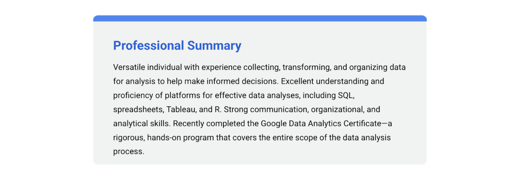

3 videos Total 14 minutes | Transcript | MCQs |
Introducing the capstone project•4 minutes•Preview module | Hi there. I'm so glad you're joining me for this last part of the program. This is an end-of- certificate project that Coursera and other learning platforms usually call a capstone. The capstone brings everything you've learned together. You'll have the opportunity to take all of your new knowledge and put it into practice with a data analytics case study. In this video, we'll talk more about what that entails and how it can help you stand out during a job search. Case studies are practice data analytics projects. When you're job hunting, you might be asked to do a case study after the pre-screen call or the first interview. The case study is a common way for employers to assess job skills and gain insight into how you approach common data-related challenges. Different employers might send you different kinds of case studies. For example, you might be asked to clean and analyze a data set, offer a proposal around how to measure the success of a project, or figure out and define metrics of success for a specific product. Usually, there's a time limit for the case study you've been asked to do. For example, a potential employer might give you some sample data and project questions and ask you to create a presentation or memo with your recommendations in 24 to 48 hours. That time limit can be a little challenging. But the good news is, your answer to the case study doesn't have to be perfect. What's important is that you show off your thought process so that the interviewers can understand how you approach the problem. You can use the data analysis process we've learned throughout this program to guide you. Let's check out an example and break down all of the parts. This case study has all of the information we'd need to perform this task. It starts here, with the title and the industry focus: predicting employee attrition rate for human resources. It also includes a problem statement outlining what the overall goal is. In this case, they're asking for a deep dive into key data analytics concepts to predict the employee attrition rate in the organization, and which factors influence an employee to leave the organization. Basically, this case study is interested in predicting the rate at which employees might leave the organization and why. There's some more specific goals in the next section. It's asking us to find the probability of an employee leaving the company over the next five years. That's pretty straightforward, but they're also interested in ways to improve employee retention. This next section is really key. The deliverables are what we'll actually give them once we've completed the case study. In this example, they're asking for a presentation outlining our findings and recommendations. Finally, they've included some sections about the data we'll use for this task. Here, it's a dataset that we can download. Now we know more about case studies and how they might be presented to us in a job application process. But people who are passionate about data analytics will sometimes do case studies on their own time and add them to a personal portfolio. A portfolio is a collection of case studies that can be shared with potential employers. Portfolios can be stored on public websites like GitHub, Kaggle, or Tableau, or on your blog. Your portfolio can also be linked in your resume. This will give you examples of how you approached data tasks in the past that you can talk about in your interview. These portfolios showcase your skills and help you stand out in job applications. On top of the case study, we'll talk about building your portfolio and how to share it. This will be a great building block that you can use to build up your resume. Coming up, we'll check out some great examples of case studies and portfolios that will hopefully inspire you as you start your own.
| 1. What is the primary goal of a capstone project in a certificate program? A. To explore new concepts not covered in the program
B. To summarize key concepts in a written report
C. To bring everything learned together and apply it in practice
D. To assess communication skills during job interviews Answer: C
2. What is a case study typically used for during a job search? A. To evaluate a candidate's teamwork abilities
B. To assess a candidate's approach to data-related challenges
C. To determine a candidate's ability to manage projects
D. To test a candidate’s ability to memorize theoretical concepts Answer: B
3. Which of the following might be part of a case study assigned by a potential employer? A. Writing a blog about a project
B. Cleaning and analyzing a dataset
C. Conducting a group presentation with colleagues
D. Creating a game or app related to the company Answer: B
4. What is a common time limit for completing a case study during a job application process? A. 6–12 hours
B. 12–24 hours
C. 24–48 hours
D. 3–5 days Answer: C
5. What is most important when completing a case study for a potential employer? A. Providing a flawless solution
B. Following all formatting guidelines
C. Demonstrating your thought process
D. Using advanced statistical methods Answer: C
6. In the example case study about employee attrition, what is the primary goal? A. Improving employee retention through better hiring practices
B. Predicting the rate of employee attrition and factors influencing it
C. Increasing employee satisfaction through training programs
D. Calculating employee productivity rates over time Answer: B
7. What type of deliverable is required in the example case study on employee attrition? A. A research paper and dataset
B. A presentation with findings and recommendations
C. A blog post on employee retention strategies
D. A statistical model with raw data Answer: B
8. What is the purpose of a portfolio for a data analytics professional? A. To share examples of past case studies with potential employers
B. To replace a resume in job applications
C. To showcase certificates and academic achievements
D. To track ongoing projects for internal use only Answer: A
9. Which platforms can be used to store and share a data analytics portfolio? A. Instagram and Pinterest
B. LinkedIn and Facebook
C. GitHub, Kaggle, or Tableau
D. Slack and WhatsApp Answer: C
10. Why is it beneficial to include a portfolio link on a resume? A. To save space on the resume by removing job descriptions
B. To give potential employers examples of completed case studies
C. To replace the need for an in-person interview
D. To demonstrate networking skills Answer: B |
Rishie: What employers look for in data analysts•2 minutes | [MUSIC] Google is a company that's built on data. It's all data-driven. And the idea behind it is that every person, whether you're an engineer, whether you're a marketer, a seller, or even you're working in admin, where you're handling logistics and paperwork and payrolls, everybody is dealing with data in some form or the other. We're trying to acknowledge the fact that in any occupation across the globe, across various industries, having a knack and understanding of data is going to be crucial for everyone. When you are in an interview, what I personally look for, what even my colleagues look for is the way they think about this creatively. When people hear the word "data analyst," they think about engineers or someone who is extremely technical, and it's all about working with data and numbers. But I implore people to rethink about that perception that being a data analyst is not being a scientist, but that it's also being an artist. The entire world is your canvas. The way that you approach it and even sometimes challenge the traditional norms of solving a problem, I think that seems to be very powerful, and it actually puts you on the edge as compared to other people when you're interviewing for such roles. There's a misconception or a myth that when you're applying for a job, you should know all the right answers. You should answer every question that they ask correctly. But that's false. What every interviewer is looking for is how you think, what's your thought process, what is your way of looking at a certain problem, and how do you approach solving those problems. When you express that, I mean, you talk a little bit more about how you think about in a certain perspective, why you think about in a certain perspective, it speaks a lot about you as a person and also what's your professional capability to be in that position. One of the fascinating things about being a data analyst is you are a storyteller. You look at the data and every data point out there has a story to tell. If you are able to perfect that skill, you can tell some amazing stories. What people will remember is not just the data, but how you tell those stories to the people or to your audience. If you talk about the core essence of the story that this is what the data is telling me, or this is what the data tells you to do, you become a lot more successful. And I guarantee you that you will progress in being a data analyst and your career will prosper indefinitely. My name is Rishie, and I'm the Global Analytics Skills Curriculum Manager. | 1. According to the transcript, what is one misconception about the role of a data analyst? A. Data analysts only deal with numbers.
B. Data analysts need to be scientists.
C. Data analysts don’t need to understand storytelling.
D. Data analysts focus solely on traditional problem-solving methods. Answer: A
2. What quality do interviewers look for during a data analyst interview? A. Knowing all the right answers to questions.
B. The ability to follow traditional norms.
C. Creative thinking and approach to problem-solving.
D. Being technically superior to other candidates. Answer: C
3. What skill is described as making a data analyst a "storyteller"? A. Analyzing trends in large datasets.
B. Perfecting the ability to convey what the data tells.
C. Visualizing data points in spreadsheets.
D. Challenging traditional norms in statistics. Answer: B
4. What is the "core essence" of being a successful data analyst, according to the transcript? A. Knowing how to process large datasets efficiently.
B. Telling stories based on what the data reveals.
C. Providing answers quickly during interviews.
D. Challenging all traditional approaches. Answer: B
5. What does the speaker suggest is a false belief about job interviews? A. You should have a unique perspective.
B. You need to answer every question correctly.
C. You need to have technical knowledge of data.
D. You should always challenge the interviewers’ ideas. Answer: B
6. What does the speaker compare being a data analyst to? A. A mathematician
B. An engineer
C. An artist
D. A scientist Answer: C
7. What does the transcript highlight as crucial for professionals across various industries? A. Extensive technical training in analytics.
B. Understanding and handling data.
C. Following traditional norms in problem-solving.
D. Specializing in engineering skills. Answer: B
8. What does the speaker emphasize about storytelling with data? A. Data storytelling is only for marketers.
B. People remember how the data is presented, not just the data itself.
C. Data points should never be questioned.
D. Data storytelling requires extensive knowledge of statistics. Answer: B
9. Who is the speaker in the transcript? A. A data analyst at Google.
B. The Global Analytics Skills Curriculum Manager.
C. An interview trainer for data professionals.
D. A storyteller for Google’s marketing team. Answer: B
10. What perspective does the speaker encourage people to rethink about data analysts? A. They should focus only on numbers.
B. They are more artists than scientists.
C. They do not need technical skills.
D. They do not need to understand creativity. Answer: B |
Best-in-class•7 minutes | Welcome back. Earlier, we talked about what a case study was and why adding one to your portfolio could help you stand out in a job search. Now let's talk about some best practices for building case studies and portfolios and check out some great examples of other analysts' work. When it comes to case studies there's a few important tips you'll want to keep in mind. First, make sure your case study answers the question being asked. Let's check out a sample case study for a company we'll call Data Partners Real Estate. They asked job applicants, "How would you rate Data Partners Real Estate's resale performance in 2020, what's driving these trends, and what would your action plan be?" The company gave job applicants a market dataset including things like active listings, visits, resell contracts, price points, and geocodes. Applicants had a day to go through the data analysis process and share a proposal. Here's a presentation one applicant came up with. Slide 2 lays out the question. The job candidate has identified poor performance in a specific housing price band that the company could improve. Including a quick overview of their findings here helps keep the case study focused on the task at hand. On top of answering the question, you also want to make sure that you're communicating the steps you've taken and the assumptions you made about the data. One of the reasons potential employers are interested in case studies is because they show your thought process and problem-solving skills. Showing the steps you took to reach your conclusion can help them get a good idea of how you work. Here, we've got an explanation of the metrics they use to perform the analysis. And in each slide after this, they use the title to tell their story and explain the steps of their analysis. They state the overall market share of this companies resell contracts has remained steady and they explained that this is the result of high growth in one area and losses in another. Then they explain this gap and outline some potential causes. And in the speaker notes, they've added some key assumptions they've made. To wrap it all up, they've acted on the data by providing recommendations for the business to consider. Their metrics were clearly defined, their data findings were organized in a logical, step-by-step order and they've made sure to explain any background information about their data that their audience may not know. In this case, the job candidate also shared documentation of their analysis, including their SQL queries and spreadsheets. This is a great example of how a case study can showcase an analyst's thought process. Now, any case study you complete during a job application usually needs to be kept private. But you can also complete case studies on your own time and add these to your personal portfolio. As we talked about earlier, your portfolio is a collection of case studies you want to show off and there are some best practices you can use for creating your portfolio too. The best portfolios are personal, unique, and simple. You've learned different ways that you can post and share your portfolio, like on a blog, GitHub, or Kaggle. Let's explore some portfolios so we can understand what personal, unique and simple really means. As you might recall, these examples were also featured in a reading, so feel free to go back and check them out yourself. Your portfolio is a chance to show people who you are, what you're interested in, and what's important to you. Here's an example portfolio. Right away we can tell how personal this is from the title, Sharing my cancer story with data viz. This data viz showcases this analyst's health journey as they prepared for a marathon while also undergoing treatment for their cancer. It's a very personal and powerful story and he talks more about this project in his blog post. But it's also showing off his personality in the data viz itself. Let's read some of these notes: "Mom if reading send more cookies." "Fitbit died, didn't care to charge it nine days." In addition to the personal story this data tells, we also get these insights into the analyst's personality. Making your portfolio personal doesn't mean the focus has to be completely on you, but it is an opportunity for other people to get to know your better. It's good to add things to your portfolio that you care about, things that are interesting to you and stuff you'd love to share. This will highlight your technical skill and how you approach technical problems too. Making your portfolio personal also helps make it unique. By highlighting the things you're interested in, you can stand out from the crowd. Let's check out another example. This is a Kaggle user's profile with some of the notebooks she's created. Each one of these is basically a case study that she's completed for her own enjoyment. She's got a few notebooks where she's worked with the palmer penguins data we used in R. But she's also got notebooks where she did an analysis on a video game she likes. Using common examples can be great practice and show off practical job skills, but adding some unique and interesting case studies to your portfolio make it cool and memorable. In general, you want to keep your portfolio pretty simple. Our goal is to highlight our skills as data analysts, so we don't want to distract anyone who's visiting our portfolio with unnecessary clutter. Here's an example of a portfolio on GitHub. This user's created a master list of R tutorials they created. It's simple and straightforward. There's a table of contents that leads to different pages to keep the portfolio landing page simple and easy to navigate. This doesn't mean this page is boring. They've added this fun cover art and talk about their own experiences with R here. But even with all that, we're not distracted by a messy webpage. Finally, you want to make sure that your portfolio is relevant and presentable. If you know you're interested in a certain kind of data analyst position, you can tailor your portfolio to highlight those skills. Make sure you keep it up-to-date, ready for an employer to see and most importantly, that you're proud of what you've put together. When it comes to case studies, you want to make sure that you're answering the question and communicating the steps you've taken. As you build your portfolio, remember: keep it personal, unique, and simple. Now that we have some ideas about how to create great case studies and portfolios, you're ready to start working on your own. Coming up, we'll take our first step towards building our own case study. See you soon. | 1. Why is it important to include case studies in your portfolio? A. To make your portfolio look larger
B. To help stand out in a job search
C. To avoid showcasing technical skills
D. To keep data analysis private Answer: B. To help stand out in a job search
2. What should a good case study always do? A. Use flashy graphics to grab attention
B. Answer the question being asked
C. Include personal anecdotes unrelated to the data
D. Focus only on the conclusions Answer: B. Answer the question being asked
3. Why do employers find case studies valuable? A. They show how creative you can be with slides
B. They highlight your problem-solving and thought process
C. They provide exact solutions to company issues
D. They eliminate the need for technical interviews Answer: B. They highlight your problem-solving and thought process
4. What was the primary issue identified in the sample case study about Data Partners Real Estate? A. Poor performance in a specific housing price band
B. Low market growth overall
C. Lack of sufficient geocode data
D. High competition in all price bands Answer: A. Poor performance in a specific housing price band
5. What additional documentation was shared in the sample case study? A. Marketing reports and business reviews
B. SQL queries and spreadsheets
C. Video presentations of findings
D. Social media posts about the company Answer: B. SQL queries and spreadsheets
6. Which of the following is not a best practice for building a portfolio? A. Making it personal
B. Highlighting irrelevant skills
C. Keeping it simple
D. Ensuring it is unique Answer: B. Highlighting irrelevant skills
7. What is an example of making a portfolio personal? A. Adding detailed summaries of unrelated work experience
B. Including data analysis on topics the analyst cares about
C. Using generic case studies found online
D. Avoiding any mention of personal interests Answer: B. Including data analysis on topics the analyst cares about
8. How does a personal portfolio stand out? A. By focusing solely on popular datasets
B. By showcasing unique topics and interests
C. By being overly complicated and cluttered
D. By excluding common data analysis techniques Answer: B. By showcasing unique topics and interests
9. Why is it important to keep your portfolio simple? A. To save time during its creation
B. To avoid distracting visitors with unnecessary clutter
C. To minimize the number of case studies included
D. To ensure it matches standard templates Answer: B. To avoid distracting visitors with unnecessary clutter
10. Which platform was mentioned as an example of a simple and straightforward portfolio? A. GitHub
B. LinkedIn
C. Instagram
D. Facebook Answer: A. GitHub
11. What advice was given for tailoring your portfolio for specific jobs? A. Add unrelated hobbies to stand out
B. Focus only on academic projects
C. Highlight skills relevant to the position you're targeting
D. Include as many case studies as possible Answer: C. Highlight skills relevant to the position you're targeting
12. What are the three key attributes of an effective portfolio mentioned in the transcript? A. Detailed, professional, and creative
B. Personal, unique, and simple
C. Extensive, technical, and trendy
D. Flashy, complex, and analytical Answer: B. Personal, unique, and simple |
|
|
|
5 readings Total 100 minutes |
|
|
Course 8 overview: Set your expectations•20 minutes | Course 8 overview: Set your expectations
- Foundations: Data, Data, Everywhere
- Ask Questions to Make Data-Driven Decisions
- Prepare Data for Exploration
- Process Data from Dirty to Clean
- Analyze Data to Answer Questions
- Share Data Through the Art of Visualization
- Data Analysis with R Programming
- Google Data Analytics Capstone: Complete a Case Study (this course)
You are approaching the last leg of your journey: the eighth and final course! You have gained the knowledge and job-ready skills to work as an entry-level data analyst. Through video vignettes, readings, journal entries, hands-on activities, online discussions, and networking with other learners, you now know what it takes to analyze and process data. You can find key insights and solve business problems using data. To recap the highlights of your journey, you: - Discovered data analysis, data analytics, and data ecosystems, and how data is used in organizational decision-making
- Learned how to ask SMART questions to make data-driven decisions, use spreadsheets, and work effectively with stakeholders
- Explored analytical thinking skills, the data analysis process, and the use of spreadsheets, SQL, and data visualizations as core data tools
- Practiced cleaning data in spreadsheets and SQL databases, and learned how important it is to verify, document, and report the cleaning process to ensure data integrity
- Organized, sorted, filtered, and aggregated data for analysis, and performed basic calculations with functions and formulas in spreadsheets, and SQL queries and temporary tables in databases
- Learned about design thinking, created visualizations and dashboards in Tableau, and worked on your communication skills to present engaging data-driven stories
- Wrote code in the R programming language to clean and analyze data, used RStudio to edit and run your code, and created detailed data visualizations in RStudio
What to expectThe Google Data Analytics Certificate Capstone Project is an opportunity for you to use many of the skills and competencies you gained from earlier courses. You have already invested many weeks in the program, so completing this capstone project is like a grand celebration of your learning achievements! The Capstone Project is optional, and choosing whether or not to complete it will not affect your ability to receive your certificate. However, it is highly recommended! Completing the Capstone Project is a great way to put everything you’ve learned together and will be useful for future job applications. What’s next? After you go over what capstone projects, case studies, and portfolios are, you will be presented with realistic cases. You will then choose one of them to use as your case study. Or, as an alternative, you can think of a case that aligns with your personal interests and use that for your case study. This will be your chance to actually go through the six steps of the data analysis process from start to finish. Use the links at the top of this page to review any content in other courses in the program to help you complete your case study. Then, after you complete your case study, you can include it in your online portfolio. Your project will boost your confidence! You will be able to refer to it as an example of your work when you interview for data analyst positions. And finally, after you complete your project, you can use the final materials in this course to help you prepare for a job interview. Good luck, and enjoy working on your case study. Course contentCourse 8 – Google Data Analytics Capstone: Complete a Case Study - Capstone basics: A capstone project in Coursera refers to a final project at the end of a study program. In the real world, these types of projects are more often referred to as case studies, Case studies are common ways for employers to assess the skills of prospective job candidates. In this part of the course, you will explore the benefits of using capstone projects, case studies, and portfolios to showcase your new skills to potential employers.
- Building your portfolio: In this part of the course, you will be introduced to two tracks (and possible cases for you to use) to complete your capstone project. Depending on which track you choose, you will then be directed to specific lessons and instructions that are applicable to the track you selected. The final deliverable in either track is a finished case study for your online portfolio.
- Using your portfolio: Having a case study in your portfolio is a first step. In this part of the course, you will focus on how you will use your portfolio to highlight skills that employers are looking for. You will develop an elevator pitch for your case study that enables people to quickly grasp a high-level understanding of what you did. Then, you can practice incorporating aspects of your case study into answers for different types of interview questions.
Your final deliverables will include the following: - Completed case study
- Online portfolio
- Elevator pitch (for your case study)
- Updated LinkedIn profile
Your case study won’t be graded, but use all resources provided to help you successfully complete it. Participate in the Discussion Forums for this course to chat with others who are working on the same or similar case studies. Strategies may be shared, but not specific analysis steps or activities. If you don’t already have an account, set up one on the platform you have chosen to host your portfolio. Practice your elevator pitch for your case study or share it with others to fine tune it. Certificate requirementsTo qualify for the certificate, let us know if you've completed the optional case study (it's highly recommended) and pass all of the earlier required Course Challenges in the certificate with at least 80% correct answers. It’s certainly all right if you don’t pass a Course Challenge the first time you go through it. Before you try again, retake the practice quizzes to help you identify the topics you need to review. Then, go back to the videos and readings for those topics to better understand what you may have missed. You can take a Course Challenge up to three times to achieve a passing score. You are on the path to getting your certificate soon! Updates to the course As you complete this course, you may notice updates to the content, like new practice materials and additional examples. These updates ensure the program provides up-to-date skills and guidance that will help you in your data analytics career. If you previously completed a graded activity, you may need to repeat the assessment in order to complete this course. For more information, check out the course discussion forum. |
Helpful resources and tips | Helpful resources and tipsAs a learner, you can choose to complete one or multiple courses in the Google Data Analytics Certificate program. However, to obtain the certificate, you must complete all eight courses in the program and submit all graded assignments. This reading describes what is required to obtain a certificate, as well as best practices for you to have a successful learning experience on Coursera.Course completion to obtain a certificateTo receive your official Google Data Analytics Certificate, you must:Pass all graded assignments in all eight courses of the certificate program. Each graded assignment is part of a cumulative graded score for the course, and the passing grade for each course is 80%.
AND one of the following:Complete the certificate through an educational institution, employer, or agency that's sponsoring your participation.
Evaluate your current data analytics skillsIf you’re a learner who has some experience with data analytics, you may wish to bypass this certificate program and proceed directly to a more advanced program such as the Google Advanced Data Analytics Certificate or the Google Business Intelligence Certificate. Determine whether you’re ready for one of these programs in an upcoming reading, Evaluate your current data analytics skills.Healthy habits for successfully completing the certificateHere are some best practices to help you successfully complete the courses in the program:Plan your time: Setting regular study times and following them each week helps make learning a part of your routine. Use a calendar or timetable to create a schedule, and list what you plan to do each day in order to set achievable goals. Find a space that allows you to focus.Work at your own pace: Everyone learns differently, so this program has been designed to let you work at your own pace. Although your personalized deadlines start when you enroll, feel free to progress through the program at the speed that works best for you. There is no penalty for late assignments; to earn your certificate, all you have to do is complete all of the work. If you miss two assessment deadlines in a row, or if you miss an assessment deadline by two weeks, you'll see a Reset deadlines option on the Grades page. Click it to switch to a new course schedule with updated deadlines. You can use this option as many times as you need.Be curious: If you find an idea that gets you excited, act on it! Ask questions, search for more details online, explore the links that interest you, and take notes on your discoveries. The steps you take to support your learning will advance your knowledge, create more opportunities for you in this high-growth field, and help you qualify for jobs.Follow along with instructors: Each instructional video with an onscreen software or programming demonstration has a corresponding step-by-step guide. This guide is a reading that outlines each step an instructor performs in the video. You’ll also find additional information in the guide that explains the purpose of the concepts covered, why a step is done a certain way, and tips for using the tool.Take notes: Notes will help you remember information in the future, especially as you’re preparing to enter a new job field. In addition, taking notes is an effective way to make connections between topics and gain a better understanding of those topics.Review exemplars: Exemplars are completed assignments that fully meet an activity's criteria; many activities in this program have exemplars that you can compare to your own work. Although there are often many different ways to complete an assignment, exemplars offer you guidance and inspiration about how to complete the activity.Build your career identity: Your career identity is the unique value you bring to the workforce. Watch this video to learn about the key components of career identity and write your own career identity statement. Discovering and defining your own career identity makes you better equipped to choose a career path that aligns with your strengths, values, and goals and is more effective in your chosen profession.Study together: It can be hard to find the time to progress through a Google Career Certificate with all life’s distractions. Register for Study Group – live study sessions hosted Monday through Thursday that offer you dedicated time and space to focus on your coursework alongside a community of your peers. Participation in Study Group is optional for our learners.Connect with other learners: If you have a question, chances are, you’re not alone. Reach out in the discussion forum to ask for help from other learners in this program. You can also visit Coursera’s private Google Data Analytics Community to expand your network, discuss career journeys, and share experiences. Check out the quick start guide.Update your profile: Update your profile on Coursera to include your photo, career goals, and more. When other learners find you in the discussion forums, they can click on your name to access your profile and get to know you better.
Documents and files for course activitiesTo complete certain activities in the program, you will need to use digital documents, spreadsheets, presentations, and/or labs. Data analytics professionals use these software tools to collaborate within their teams and organizations. If you need more information about using a particular type of document, refer to these resources:Module, course, and certificate glossariesThis program covers a lot of terms and concepts, some of which you may already know and some of which may be unfamiliar to you. To review terms and help you prepare for graded quizzes, refer to the following glossaries:Module glossaries: At the end of each module’s content, you can review a glossary of terms from that module. The module glossaries are not downloadable; however, all of the terms and definitions are included in the course and certificate glossaries, which are downloadable.Course glossaries: At the end of each course, you can access and download a glossary that covers all of the terms in that course.Certificate glossary: The certificate glossary includes all of the terms in the entire certificate program and is a helpful resource that you can reference throughout the program or at any time in the future.
Find the course and certificate glossaries using the course’s Resources tab. Access and download the certificate glossaries, then save them on your computer. To access the Data Analytics Certificate program glossary, click the following link and select Use Template.ORIf you don’t have a Google account, download the glossary directly from the following attachment.Course feedbackProviding feedback on videos, readings, and other materials is easy. With the resource open in your browser, locate the thumbs-up and thumbs-down symbols.Click thumbs-up for materials that are helpful.Click thumbs-down for materials that are not helpful.
If you want to flag a specific issue with an item, click the flag icon, select a category, and enter an explanation in the text box. This feedback goes to the course development team and isn’t visible to other learners. All feedback received helps to create even better certificate programs in the future.For technical help on the Coursera platform, visit the Learner Help Center. |
Explore portfolios •20 minutes | Explore portfoliosEarlier, you learned that a portfolio contains samples that you share with potential employers. Case studies are practice or example data analytics projects that you can create for your portfolio. After you have created your online portfolio, you can add a link to it on your resume. Having a portfolio to showcase who you are and demonstrate your skills will help you stand out to potential employers. The case study that you will complete in this course can be one of the examples that you add to your portfolio. 
In this reading, you will learn some important things to keep in mind when building your portfolio. You will also explore GitHub and Kaggle, which are platforms that can host your portfolio. You will view the professional profiles of two data analysts and what they include in their portfolios on Kaggle. Ins and outs of building your portfolio First and foremost, your portfolio should represent your own work. While getting ideas from other portfolios is inspiring, directly copying (or only slightly modifying) others’ work and sharing it in your own portfolio is never acceptable. Additionally, if you work on a project as a data analyst, keep in mind that the work you do for an employer or client belongs to their business. In many cases, you can’t share that work publicly in your personal portfolio without direct and explicit permission from them beforehand.
Finally, be cautious even with open or public datasets. Unless you are using data that you personally collected, ask the owner of the data for permission before you post anything related to the data in your portfolio. You should always take full responsibility for what you publish by getting the right permissions as needed. As you begin to develop your portfolio, there are a few considerations you can use to help you decide how best to incorporate your work: - Choose your projects: Select projects that resonate with your skills and career goals. Your portfolio should reflect a range of skills that connect directly to the work you would be doing as a data analytics professional.
- Capture your process: When discussing projects with potential employers, it’s more useful to focus on your process than on your results. Describe your strategies; discuss the tools you used; and explain the decisions you made along the way, as well as why you made them. This insight gives potential employers a glimpse into your problem-solving abilities and thought processes.
- Aesthetics matter: Your portfolio should be easy to navigate and visually appealing. Professionalism, simplicity, and engagement are key.
- Tell your story: Clearly explain the background of each project. What challenges did you face? What steps did you take to overcome them? And what impact did your work have? Consider all of the people who you are communicating with. Who are they and what do they need to know about you?
Now, let’s review three platforms you can use to host your portfolio. Personal websitesCreating a personal website to host your portfolio is a great option because you can also use it to showcase aspects of your personality or background that contribute to your professional brand. For example, you might share a compelling experience that reflects your ability to collaborate, be resilient, or not give up. Whatever you choose to share, make sure that it is something you wouldn’t mind other people knowing about you. For example, this visualization from data analyst Bill Yost’s website demonstrates his ability to create a Tableau visualization but also tells a very personal story about his battle with cancer. Potential employers get an idea of his skills and find out a lot more about who he is at the same time. Notice that although the annotations in the visualization appear somewhat crowded in the white space (per guidelines in the Share Data Through the Art of Visualization course), the concept of sharing a personal story is the main takeaway. GitHub
GitHub is a hosted platform primarily used by developers as a repository for code, but it can also be used as a repository for documentation. One of the tips you have been given in this program is to keep an electronic journal of things to remember, especially for SQL or R syntax. If something in your electronic journal is particularly useful, you can create a document for your portfolio in GitHub. For inspiration, check out this R usage tips readme document a GitHub user posted. Kaggle
If you have an account on Kaggle, you can also use it as a platform to host your portfolio and personal background. Check out these profile examples: Their profiles showcase competitions they have participated in, datasets they have created, and discussions they have contributed to. Kaggle competitions are challenges that people take on at any stage of their programming and machine learning careers. Check out this YouTube video to learn how to enter a Kaggle competition. Both Jesse’s and Meg’s profiles also include links to follow them on other social media platforms, like LinkedIn and Twitter. Jupyter Notebook is an open-source web application that you can use to create and share documents that contain live code, equations, visualizations, and narrative text. Kaggle supports a Jupyter Notebook environment that can be accessed from a browser. Jesse and Meg also have notebooks in Kaggle. You can use Kaggle to create your own notebooks for potential employers to view. | - What should a portfolio represent?
- a) A collection of other people's work
- b) A mix of personal work and other projects
- c) Your own work
- d) A random assortment of projects
Answer: c) Your own work - What should you do before including employer or client work in your personal portfolio?
- a) Ask for feedback
- b) Ask for explicit permission
- c) Modify the work to make it your own
- d) Post it without permission
Answer: b) Ask for explicit permission - What is an important consideration when using open or public datasets in your portfolio?
- a) Share any dataset without checking
- b) Ask for permission before sharing the dataset
- c) Only share the dataset if it's publicly available
- d) Never use open datasets
Answer: b) Ask for permission before sharing the dataset - Which of the following should be the focus when discussing your projects with potential employers?
- a) The results you achieved
- b) The strategies, tools, and decisions you used
- c) The personal connections you made during the project
- d) The amount of data used in the project
Answer: b) The strategies, tools, and decisions you used - What is a key consideration for making your portfolio visually appealing?
- a) Adding as much content as possible
- b) Professionalism, simplicity, and engagement
- c) Using complex designs and flashy visuals
- d) Using multiple colors and fonts
Answer: b) Professionalism, simplicity, and engagement - What should you focus on when telling the story of each project in your portfolio?
- a) The technical details only
- b) The challenges, steps taken, and the impact of your work
- c) The team you worked with
- d) The software tools you used
Answer: b) The challenges, steps taken, and the impact of your work - Why is a personal website a great platform for hosting your portfolio?
- a) It allows you to focus only on your technical skills
- b) It helps showcase your personality and background
- c) It is completely free
- d) It provides only limited storage for your projects
Answer: b) It helps showcase your personality and background - What can GitHub be used for in a data analyst's portfolio?
- a) Hosting visualizations only
- b) Storing and sharing documentation, including code and tips
- c) Displaying interactive dashboards
- d) Sharing videos and tutorials
Answer: b) Storing and sharing documentation, including code and tips - What kind of content can be included in a Kaggle portfolio?
- a) Resume only
- b) Datasets, competitions, and discussions
- c) Personal blog posts
- d) Data visualizations only
Answer: b) Datasets, competitions, and discussions - What feature does Kaggle support that is useful for creating a data analyst's portfolio?
- a) Interactive coding environments for web development
- b) Jupyter Notebooks for live code and visualizations
- c) A video hosting platform
- d) Only static text-based documentation
Answer: b) Jupyter Notebooks for live code and visualizations |
Your portfolio and case study checklist•20 minutes | Your portfolio and case study checklistIt is important to understand the key components of both a portfolio and case study, as both are essential to success when applying for jobs. The following are checklists to help cover your bases. If you'd like to refer to this checklist in the future, you can download the PDF below: Your portfolio and case study checklist.pdf PDF File What to include in your portfolioEven if you don’t have previous data analytics work experience, you can still craft a great portfolio that represents your new skills and offers insight into who you are. Be sure to include the following in your portfolio: - Biography: The main focus of your portfolio is to introduce yourself in a strong and memorable way. Write a concise and clear introduction of yourself. The goal is to capture your audience’s interest and compel them to want to meet you to learn more.
- Contact page: Be sure to include a way for others to get in touch with you, whether it be via email, phone call (if you are comfortable), or social media handles (especially LinkedIn). You might find that your website has its own built-in contact form if you use common website builders.
- Resume: In previous readings, Add technical skills to your resume and Add professional skills to your resume, you learned how to craft a resume that reflects your skills and your experience. Be sure to include a resume somewhere in your portfolio.
- Accomplishments: You are not just limited to your past experiences. Any present career-worthy highlights you can think of should be included. This can be any certifications you have earned, data analytics events you have attended, or even blog posts you have published.
- An image of you (optional): Add a personal touch with your photo. All you need is a simple, clear photo that represents you well.
What to include in a case studyDuring your interview process, you will very likely encounter the case study interview. In this interview, you will be provided with a business-related scenario where you analyze a problem and come up with the best solution. You will have a certain amount of time to solve this so it is best to be prepared for any scenario you are given. A great case study will include the following: - Introduction: Make sure to state the purpose of the case study. This includes what the scenario is and an explanation on how it relates to a real-world obstacle. Feel free to note any assumptions or theories you might have depending on the information provided.
- Problems: You need to identify what the major problems are, explain how you have analyzed the problem, and present any facts you are using to support your findings.
- Solutions: Outline a solution that would alleviate the problem and have a few alternatives in mind to show that you have given the case study considerable thought. Don’t forget to include pros and cons for each solution.
- Conclusion: End your presentation by summarizing key takeaways of all of the problem-solving you conducted, highlighting what you have learned from this.
- Next steps: Choose the best solution and propose recommendations for the client or business to take. Explain why you made your choice and how this will affect the scenario in a positive way. Be specific and include what needs to be done, who should enforce it, and when.
Examples of interview case study questionsGet a better idea of an employer's expectations from the case study questions in this blog article: 4 Case Study Questions for Interviewing Data Analysts at a Startup. | What is the primary focus of a portfolio? - a) To showcase all past job experiences
- b) To introduce yourself and highlight your skills
- c) To display your certifications
- d) To provide a detailed work history
Answer: b) To introduce yourself and highlight your skills
Which of the following is an optional component to include in your portfolio? - a) A biography
- b) Your resume
Answer: c) An image of you
Why should you include your contact information in your portfolio? - a) To allow potential employers to reach out to you
- b) To provide feedback on your portfolio
- c) To increase your social media presence
- d) To keep your resume confidential
Answer: a) To allow potential employers to reach out to you
What type of events should be included in the accomplishments section of your portfolio? - a) Data analytics events you have attended
- b) Family events
- c) Social media events
- d) Political events
Answer: a) Data analytics events you have attended
What is the purpose of a case study in an interview? - a) To demonstrate your work experience
- b) To analyze a business-related problem and suggest a solution
- c) To summarize your career achievements
- d) To discuss your resume in detail
Answer: b) To analyze a business-related problem and suggest a solution
What should be included in the introduction of a case study? - a) A detailed analysis of the company’s financials
- b) The purpose of the case study and how it relates to a real-world problem
- c) A summary of your resume
- d) Personal opinions on the scenario
Answer: b) The purpose of the case study and how it relates to a real-world problem
Which of the following should be identified in the problems section of a case study? - a) The personal background of the interviewee
- b) The major problems and the analysis used to identify them
- c) The best solution without explanation
- d) The name of the client
Answer: b) The major problems and the analysis used to identify them
What should you include when presenting solutions in a case study? - a) A single solution with no alternatives
- b) Multiple solutions, with pros and cons for each
- c) Only the easiest solution
- d) General advice unrelated to the scenario
Answer: b) Multiple solutions, with pros and cons for each
What should the conclusion of a case study emphasize? - a) A deep analysis of the company's history
- b) The key takeaways and lessons learned from solving the problem
- c) Future career goals
- d) The financial details of the case
Answer: b) The key takeaways and lessons learned from solving the problem
What should you do in the "Next Steps" section of a case study? - a) Propose recommendations for the client or business
- b) Discuss personal career goals
- c) Write a summary of the case study
- d) Ignore the solution and move on to other topics
Answer: a) Propose recommendations for the client or business |
Revisit career paths in data•20 minutes | Revisit career paths in dataIn a reading in the Foundations: Data, Data, Everywhere course, you learned about three different career paths in data science: data analyst, data scientist, and data specialist. This reading revisits the data analyst career choice (first column in the table below) to explore how the skills you have learned in this program match up with real job requirements.
Data analysts: -problem solving: use existing tools and methods to solve problems with existing types of data -analysis: analyze collected data to help stakeholders make better decision -other relevant skills: database queries, data visualization, dashboards, reports, and spreadsheets
Data scientists: -problem solving: Invent new tools and models, ask open-ended questions, and collect new types of data -analysis: analyze and interpret complex data to make business predictions -other relevant skills: advanced statistics, machine learning , deep learning, data optimization, and programming
Data specialists: -problem solving: use in-depth knowledge of databases as a tool to solve problems and manage data -analysis: organize large volumes of data for use in data analytics or business operations -other relevant skills: data manipulation, information security, data models, scalability of data, and disaster recover Mapping certificate skills to job requirements
The skills you gain with the Google Data Analytics Certificate align with skills that data analyst jobs require. When you create your resume, the way you present your skills can capture the attention of a recruiter or a hiring manager. Many career counselors recommend that you customize your resume each time you apply for a job so that your experience and skills align as closely as possible with the requirements listed in the job description. For each of the relevant skills in the previous table, consider the following: - Possible phrases from job descriptions
- Examples of matching skills from this certificate
Let’s go through the skills for data analysts and examine common phrases you might find in job descriptions. Skill: database queriesJob description phrase | Skills from this program you could include in your resume | Collect data by using a scripting language such as SQL | - Perform SQL queries - Sort and filter data using SQL queries - Convert data types using SQL functions |
Skill: data visualizationJob description phrase | Skills from this program you could include in your resume | Visualize data insights and communicate your findings to teams in other organizations | - Create data visualizations using Tableau - Create visuals in spreadsheets - Create presentations from data analysis results |
Skill: dashboardsJob description phrase | Skills from this program you could include in your resume | Build and train users of new dashboards | - Identify the data needs of users - Create dashboards using Tableau - Use design thinking to improve dashboards |
Skill: reportsJob description phrase | Skills from this program you could include in your resume | Create comprehensive reports | - Create data cleaning reports - Create and maintain change logs - Create reports in R Markdown |
Skill: spreadsheetsJob description phrase | Skills from this program you could include in your resume | Explore and analyze datasets with spreadsheets | - Clean data in spreadsheets - Sort and filter data in spreadsheets - Create pivot tables in spreadsheets |
Skill: programmingThis is an area where you can potentially distinguish yourself from other candidates when you apply for a data analyst position. Programming is considered a more advanced or higher-level skill and might not even be in a job description for a junior data analyst role. You learned to use R for data analysis as part of this program, and adding programming skills to your resume might make your application stand out. Job description phrase | Skills from this program you could include in your resume | Knowledge of some programming languages and an organized and methodical approach to work | - Install and use the tidyverse package in R - Run scripts in RStudio - Create data visualizations in RStudio |
Aiming for more technical rolesIf your goal is to work in a more technical role like a data scientist, the Google Data Analytics Certificate is a good starting point. But you might need to pursue additional learning opportunities to advance your skills, such as: - Completing other professional certificates (Coursera offers many)
- Registering for college courses as a part-time or full-time student and applying for paid internships
- Continuing your education in a four-year college degree program like computer science, data science, or management information systems
Build your career identityYour career identity is the unique value you bring to the workforce. Watch this video to learn about the key components of career identity and write your own career identity statement. Discovering and defining your own career identity makes you better equipped to choose a career path that aligns with your strengths, values, and goals and is more effective in your chosen profession. For more information about career paths in data science, including roles that are more technical, refer to this article on Medium: Career Paths Within Data Science. | Which career path in data science focuses on using existing tools and methods to solve problems with existing types of data? - a) Data Scientist
- b) Data Analyst
- c) Data Specialist
- d) Data Engineer
Answer: b) Data Analyst
What skill is associated with data analysts in the Google Data Analytics Certificate? - a) Machine learning and deep learning
- b) Data visualization and dashboard creation
- c) Advanced statistics and programming
- d) Information security and disaster recovery
Answer: b) Data visualization and dashboard creation
Which of the following is NOT listed as a skill for data scientists? - a) Machine learning
- b) Data manipulation
- c) Deep learning
- d) Advanced statistics
Answer: b) Data manipulation
Which skill is specifically highlighted for data specialists in the note? - a) Database queries
- b) Data visualization
- c) Data manipulation
- d) Machine learning
Answer: c) Data manipulation
What skill is associated with the use of SQL for data analysts? - a) Data modeling
- b) Data visualization
- c) Database queries
- d) Programming in Python
Answer: c) Database queries
What phrase from a job description is related to the skill 'data visualization' for data analysts? - a) Collect data by using a scripting language such as SQL
- b) Visualize data insights and communicate your findings to teams
- c) Build and train users of new dashboards
- d) Create comprehensive reports
Answer: b) Visualize data insights and communicate your findings to teams
Which tool is specifically mentioned for creating dashboards in the Google Data Analytics Certificate? - a) Power BI
- b) Tableau
- c) R Markdown
- d) Excel
Answer: b) Tableau
Which of the following is a skill you could list on your resume related to spreadsheets as per the Google Data Analytics Certificate? - a) Create pivot tables in spreadsheets
- b) Install and use the tidyverse package in R
- c) Build machine learning models
- d) Analyze large datasets using Hadoop
Answer: a) Create pivot tables in spreadsheets
What might set you apart from other candidates when applying for a data analyst role? - a) Knowledge of advanced statistics
- b) Data manipulation skills
- c) Programming skills, especially in R
- d) Creating dashboards using Tableau
Answer: c) Programming skills, especially in R
Which option is suggested to advance your career into more technical roles like data scientists? - a) Completing a coding bootcamp
- b) Registering for college courses in data science or computer science
- c) Working in a data analyst position for several years
- d) Focus solely on learning data visualization tools
Answer: b) Registering for college courses in data science or computer science
What is meant by "career identity" in the context of this note? - a) The job title you are aiming for
- b) The unique value you bring to the workforce
- c) The technical skills you have learned
- d) The number of certifications you hold
Answer: b) The unique value you bring to the workforce
What is one way to build your career identity according to the note? - a) Focus only on technical skills
- b) Write your own career identity statement
- c) Follow career paths from others in your field
- d) Limit your learning to one specific tool or language
Answer: b) Write your own career identity statement |
Next steps•20 minutes | Next stepsThe Capstone Project case study is an optional component of these courses. However, it is highly recommended as an opportunity to demonstrate everything you’ve learned so far and build your portfolio for future job applications. The following diagram provides an overview of the next steps that you will take to finish this course. You will complete a case study, create an online portfolio, update your LinkedIn profile, and prepare to interview for data analyst jobs. Sections of this reading will direct you to resources in this course and other courses in the program that will help you complete each step. 
1. Select and develop a case study 2. Select from these two business cases: - Bike-sharing service memberships - Streaming service subscriptions OR 2. Create your own business case for analysis 3. Create your online portfolio and add your case study 4. Include a link to your online portfolio in your LinkedIn profile 5. Practice an elevator pitch for your case study and prepare to interview for data analyst jobs Selecting and developing a case studyIn this course, you have options for selecting and developing a case study. You can choose one of two possible tracks. The first track has two cases already defined. You can pick one of these cases and follow through on the data analysis to answer the questions presented to address business problems. For more information, refer to the track A details. The second track allows you to design your own case study about a topic that you are interested in. You can practice all but the Act phase of the Data Analysis Process: Ask, Prepare, Process, Analyze, Share, and Act. For more information, refer to the track B details. You can also return to The phases of data analysis and this program video to review the steps of the Data Analysis Process. After familiarizing yourself with the details of each track, refer to the information in Choose your case study track and decide which track you want to follow. Creating your online portfolioAfter completing your case study, you will create an online portfolio to store and display it. Refer to Create your online portfolio. It provides an overview of platforms that can potentially host your portfolio and case study. Updating your LinkedIn profileIn an earlier course, you learned about creating an online presence with a LinkedIn account in Getting started with LinkedIn. Access your LinkedIn profile again to add a link to your online portfolio in your profile. Practicing your case study pitchYou can start to prepare for interviews by creating an elevator pitch for your case study. Refer to What makes a great pitch to understand the kinds of questions to prepare for. Try to include aspects of your elevator pitch in your answers to the sample questions provided in the reading. Then, practice pitching your case study as part of your planned responses to commonly asked interview questions. | - What is the Capstone Project case study in these courses?
- a) A mandatory exam for course completion
- b) An optional component to demonstrate your learning and build your portfolio
- c) A project to be completed after getting a job
- d) A group project required for all learners
Answer: b) An optional component to demonstrate your learning and build your portfolio - What are the first two steps in the next steps outlined in the course?
- a) Create an online portfolio and update LinkedIn
- b) Select and develop a case study, then create your own business case
- c) Complete the final exam and interview for data analyst jobs
- d) Select a case study and add it to your portfolio
Answer: b) Select and develop a case study, then create your own business case - What are the two predefined business cases you can choose from in Track A?
- a) Bike-sharing service memberships and e-commerce sales analysis
- b) Streaming service subscriptions and social media data
- c) Bike-sharing service memberships and streaming service subscriptions
- d) Health data analytics and financial performance analysis
Answer: c) Bike-sharing service memberships and streaming service subscriptions - In Track B, what can you do for your case study?
- a) You must choose from predefined cases
- b) You can design your own case study about a topic of interest
- c) You are required to analyze an existing business problem
- d) You must work with a team on a joint case study
Answer: b) You can design your own case study about a topic of interest - What is the purpose of creating an online portfolio after completing your case study?
- a) To practice coding skills for interviews
- b) To store and display your case study for potential employers
- c) To store all course materials
- d) To track your progress during the course
Answer: b) To store and display your case study for potential employers - What should you include in your LinkedIn profile after creating your online portfolio?
- a) A link to your course completion certificate
- b) A link to your online portfolio
- c) A summary of your skills and job experience
- d) A list of all the courses you've taken
Answer: b) A link to your online portfolio - What is the purpose of practicing an elevator pitch for your case study?
- a) To prepare for an interview and answer questions about your case study
- b) To improve your public speaking skills
- c) To create a detailed report about your case study
- d) To get feedback from peers on your analysis
Answer: a) To prepare for an interview and answer questions about your case study - What should you refer to when preparing your elevator pitch?
- a) The course syllabus
- b) "What makes a great pitch" and sample interview questions
- c) Your project manager's feedback
- d) The course materials on LinkedIn strategies
Answer: b) "What makes a great pitch" and sample interview questions - What is the final preparation step mentioned in the course for securing a data analyst job?
- a) Completing the Capstone Project and submitting it
- b) Practicing your case study pitch and preparing for interviews
- c) Creating a professional resume
- d) Attending networking events
Answer: b) Practicing your case study pitch and preparing for interviews - Where can you find resources to help complete each step in the course?
- a) In the course's final exam guide
- b) In other courses in the program
- c) On social media platforms
- d) In the instructor’s office hours
Answer: b) In other courses in the program |
|
|
|
1 quiz Total 20 minutes |
|
|
Data journal: Prepare for your project•20 minutes | 
Activity Overview
In this activity, you’ll complete an entry in your data journal. In this journal entry, you will begin to think about and prepare for your upcoming capstone project. Throughout each course in the Google Data Analytics Certificate, you have developed the skills you’ll need to begin a career in data analytics. Now, you will apply these skills to your own in-depth capstone project. This project is designed to be similar to a data analytics case study, so completing it will provide you with valuable experience and a compelling addition to your portfolio. Step-By-Step InstructionsFollow the instructions to complete each step of the activity. Then answer the question at the end of the activity before going to the next course item. Step 1: Open your data journalIf you’ve used the data journal template from an earlier course, open your draft now. Or, if you’d like to start a new data journal document, click the link to create a copy of the template. If you don’t have a Google account, download the template directly from the attachment below. 
Link to data journal template: Data Journal Template OR Download the data journal template: Data Journal_ Journal Entry Templates DOCX File 
Step 2: Start a new journal entryOnce you have opened your new or existing data journal document, start a new journal entry and name it “Journal Entry: Prepare for your capstone project.” As you begin, evaluate your goals and expectations for the capstone. Consider: - What do you hope to take away from this capstone project? What is one important skill you think you’ll learn?
- Which skills do you most look forward to demonstrating?
- What are some issues you might encounter?
1.Question Reflection
Now, write 3-5 sentences (60-100 words) in response to the previous questions. At the end of this course, review your responses and observe how your understanding of data analytics projects has changed. What did you learn? How will you use the lessons you learned in future data analytics projects?
Did you complete this activity?YesNo
Correct Thank you for your response! As a data analyst, you will work on many projects in your career. It is important to prepare for these projects carefully and thoughtfully. | Data Journal Instructions
You may use this document as a template for Journal Entry activities in this course. Additionally, you can use the templates to take notes on what you’ve learned or just to jot down your thoughts about data analytics. With every data journal entry, we recommend that you include some basic information to make it easier for you to come back and read your responses later. Adding the date to your journal entry and including the prompt will help you make sense of your responses later on. You can come back and reread them to understand how your opinions on different topics may have changed throughout the courses. Below is an example of a completed journal entry to serve as a practical guide to your own journaling activities. Date: Jan 1 | Course/topic: Course 1: Data, data everywhere | Prompt: | What does the word “data” mean to you?
| Journal Entry: | When I think of data, I think of records and information. Data is a digital record. It could be a record of a sale, GPS records of where a car has been, or posts of images and pictures on social media. Data in itself isn’t useful, because there’s so much of it. However, enough data usually contains information and patterns. This information is valuable, and data analysts are the ones who extract it.
| Other thoughts or questions: | The amount of data that is created each year gets bigger and bigger!
Data is important! Nowadays, companies that don’t use their data are at a disadvantage to those that do.
|
|
|
|
|
1 plugin Total 10 minutes |
|
|
Refresher: Your Google Data Analytics Certificate roadmap•10 minutes |
|
3 videos Total 7 minutes | Transcript | MCQs |
Get started with your case study•3 minutes•Preview module | Hello! Great to see you again. Now that we've checked out some example case studies and portfolios, it's time to start creating your own. Coming up, you'll do an activity that'll help you get started. But before that, I wanted to tell you a little bit about the different approaches you can use to start your project. There's two possible tracks you can use to frame out your case study and help you get started. In Track 1, you'll be able to choose a business question similar to the kind that interviewers might ask. There are several different options for you to choose from, with specific business tasks and different datasets for you to use. In Track 2, you'll be asked to find a public dataset to explore something you're personally interested in. This could be anything. From analyzing a video game you like, to a study on a wildlife population you care about. This is the more flexible option, and you'll have more freedom to build something that's really personal to you. Depending on what you want to do with your case study, you might choose one over the other. For example, if you want to create a case study that you can use to demonstrate your job skills for future interviews, then Track 1 might be more useful for you but if you have something you're personally interested in that you'd like to explore more, Track 2 can help you build a flexible portfolio piece. Or if you're interested in Track 1 and 2, you can do both. Once you've decided on the track you're most interested in, you'll use the case study outline to help you start your project. The outline follows the phases of the data analysis lifecycle that we've been using throughout this program. You'll complete each phase from asking the right questions to preparing, processing, and analyzing your data, until you finally build your presentation and share it in your portfolio. Each phase will have key questions and activities to help guide you through the process. If you ever need to review something, you can always go back to any part of the program to help you. As a quick reminder, the data you'll be working with for this project will be public and open-source. This data is great for demonstrating your skills as a data analyst but it's essential to avoid plagiarism by citing your sources. Public, open-source data can be easily searched, and we don't want to pass it off as our own work. Plagiarism can have serious negative consequences, legally and personally. The beauty of our work as data analysts is that we can share and collaborate with each other. So let's remember to give credit to our sources. I hope you're excited about starting your case study. I'm really excited to see what you'll put together. After this, you'll be able to start working on the outline. Then we've got some other activities that'll help guide you. After that, we'll talk about sharing your portfolio. Good luck. | 1. What is the purpose of the upcoming activity mentioned in the transcript?
A) To review case studies and portfolios
B) To start creating a personal case study
C) To evaluate datasets provided in the course
D) To learn about open-source data licensing Correct Answer: B) To start creating a personal case study
2. What are the two possible tracks for starting the case study?
A) Business Analysis and Personal Interest
B) Structured Analysis and Exploratory Analysis
C) Track 1: Business Questions, Track 2: Personal Interest
D) Dataset Analysis and Portfolio Building Correct Answer: C) Track 1: Business Questions, Track 2: Personal Interest
3. What is a key feature of Track 1?
A) Provides complete freedom in selecting a topic
B) Requires finding a public dataset
C) Offers business questions similar to interview scenarios
D) Focuses on wildlife or video games Correct Answer: C) Offers business questions similar to interview scenarios
4. Which of the following best describes Track 2?
A) Requires datasets provided by the course
B) Focuses on exploring personal interests
C) Limits the scope to specific business tasks
D) Is mandatory for portfolio completion Correct Answer: B) Focuses on exploring personal interests
5. What tool will help guide the user through their case study project?
A) A data visualization software
B) The case study outline
C) A step-by-step video tutorial
D) A pre-filled dataset Correct Answer: B) The case study outline
6. Which phase of the data analysis lifecycle is NOT mentioned as part of the case study process?
A) Asking questions
B) Preparing data
C) Building dashboards
D) Analyzing data Correct Answer: C) Building dashboards
7. What type of data will be used for the case study project?
A) Proprietary datasets
B) Public, open-source data
C) Purchased datasets
D) Confidential datasets Correct Answer: B) Public, open-source data
8. Why is it important to cite sources when using public, open-source data?
A) To avoid plagiarism and demonstrate ethical practices
B) To make the data appear more credible
C) To comply with local legal requirements
D) To improve the quality of analysis Correct Answer: A) To avoid plagiarism and demonstrate ethical practices
9. What is emphasized about the role of data analysts in the transcript?
A) They work independently and avoid collaboration.
B) They avoid using open-source data.
C) They share and collaborate while giving credit to sources.
D) They primarily focus on building dashboards. Correct Answer: C) They share and collaborate while giving credit to sources.
10. What is the next step after deciding on a track for the case study?
A) Start working on the outline
B) Select multiple datasets
C) Complete all activities in the program
D) Submit the project for review Correct Answer: A) Start working on the outline |
Unlimited potential with analytics case studies•1 minute | Congratulations, you've officially completed your personal case study and started building your portfolio. That's an amazing accomplishment. And it's all because of the hard work you've put into practicing your data analyst skills. If you really enjoyed this process, feel free to try a different track or choose another business scenario. The guide you used to finish your first case study can be used over and over again. And the more you use it, the more you'll find yourself improving in some unexpected ways. Plus, adding more case studies to your portfolio will make it even stronger. Coming up, we'll change gears a little. Now that you've got a portfolio over the completed case study, we can start talking about how to discuss your portfolio with recruiters, and some ways you can highlight your skills. This is where we start really putting the portfolio to good use. And you'll have a lot of opportunities to practice this. Great job, and I'll see you next time. | - What is the main accomplishment mentioned in the transcript?
a) Completing a personal case study and starting a portfolio
b) Securing a job as a data analyst
c) Finishing a degree in data analytics
d) Learning advanced data visualization techniques
Answer: a) Completing a personal case study and starting a portfolio
- What can the guide used to complete the first case study be used for in the future?
a) Learning new programming languages
b) Completing more case studies
c) Preparing for interviews
d) Analyzing competitors
Answer: b) Completing more case studies
- How can adding more case studies to the portfolio be beneficial?
a) It improves programming speed
b) It strengthens the portfolio
c) It helps in writing research papers
d) It automates data analysis
Answer: b) It strengthens the portfolio
- What is the next step mentioned after completing the case study and portfolio?
a) Learning new data visualization tools
b) Discussing the portfolio with recruiters
c) Writing a research report
d) Creating a new business scenario
Answer: b) Discussing the portfolio with recruiters
- What will the upcoming sessions focus on?
a) Building new portfolios
b) Practicing advanced data techniques
c) Highlighting skills and discussing the portfolio
d) Exploring career opportunities outside analytics
Answer: c) Highlighting skills and discussing the portfolio
- What is one benefit of using the guide repeatedly for case studies?
a) Improvement in unexpected ways
b) Faster portfolio completion
c) Automatic error detection
d) Learning new coding languages
Answer: a) Improvement in unexpected ways
- What is emphasized as an important skill for the next steps?
a) Proficiency in coding
b) Portfolio discussion with recruiters
c) Creating complex business scenarios
d) Advanced spreadsheet functions
Answer: b) Portfolio discussion with recruiters
|
Share your portfolio •2 minutes | Hi there. Welcome back. Finishing the case study is a big step, but we still need to create a portfolio and share our analysis online. You have a lot of options when it comes to your own online portfolio. So, let's talk about where you can post your case study and how to make that decision. When you're thinking about where you want to share your portfolio, there's two questions that can help you decide. First, what platforms align with your interests and passions? And second, where do you want to spend more time after this program? You have a few options. You could use Kaggle, GitHub, a blog or Tableau to share your work. Now, let's talk about what each of these have to offer. Kaggle has a broad data science community you could join. It hosts a lot of competitions for users to join in and offers all kinds of learning opportunities. This is a great option if you enjoy connecting with other data analysts. GitHub's primarily used for programming languages like R or Python. It has a more technical setup than other platforms. But it's a great place to share your code and the how behind your analysis with other users. And if you want to learn from other data analysts' work, GitHub's a great place to be. Blog platforms like Medium, WordPress and Google Sites are personalized and ownable. Blogs aren't as code-focused as Kaggle and GitHub, so you'll have to store your code somewhere else. And there might be a few extra steps you'll have to take to display code on blogs. But you can show off your expertise, write about your process in your own voice, and show thought leadership in your field. Finally, you might choose Tableau to host your work. You've already got some experience with Tableau from our work here. It's a great option if you're focused on the data viz side of things. Plus, you can create interactive dashboards using Tableau's tools that are easily shareable. Choosing where to host your portfolio is an important decision, but hopefully now you have some ideas about how each platform could be useful. And you might end up using multiple platforms over time to fit your specific needs. The important thing is to remember the two questions we talked about earlier. What platforms align with your interests and passions? And where do you want to spend more time after this program? Creating your online platform to share is one of the final steps in this capstone project. Coming up, we've got a few activities to help walk you through that process. Then we'll meet back here to start talking about your next steps. | - What is one of the key steps after finishing the case study in this program?
a) Participating in data competitions
b) Sharing your portfolio and analysis online
c) Learning a new programming language
d) Building a new dataset
Answer: b) Sharing your portfolio and analysis online
- Which two questions can help you decide where to share your portfolio?
a) What tools are easiest to use, and which are popular?
b) What platforms align with your interests, and where do you want to spend more time?
c) Who is your audience, and what platform is free?
d) How many case studies do you have, and what is your technical expertise?
Answer: b) What platforms align with your interests, and where do you want to spend more time?
- What is a key feature of Kaggle?
a) Personalized blog writing
b) A focus on programming languages like R and Python
c) A broad data science community with competitions
d) Interactive dashboards for data visualization
Answer: c) A broad data science community with competitions
- What makes GitHub a good choice for sharing your portfolio?
a) It allows creating personalized blogs.
b) It provides an interactive dashboard for data visualization.
c) It is ideal for sharing code and learning from other data analysts' work.
d) It focuses on visualizing data using Tableau.
Answer: c) It is ideal for sharing code and learning from other data analysts' work.
- What is a notable limitation of blogs like Medium and WordPress compared to Kaggle and GitHub?
a) They do not allow you to connect with other analysts.
b) They focus only on data visualization.
c) They are not as code-focused and may require extra steps to display code.
d) They do not offer personalized branding.
Answer: c) They are not as code-focused and may require extra steps to display code.
- What platform is recommended for focusing on the data visualization side of things?
a) Kaggle
b) GitHub
c) Blogs
d) Tableau
Answer: d) Tableau
- Which of the following is an advantage of using blogs for your portfolio?
a) Allows interactive dashboard creation
b) Enables users to participate in competitions
c) Showcases expertise in your voice and thought leadership
d) Focuses exclusively on programming languages
Answer: c) Showcases expertise in your voice and thought leadership
- What is the primary takeaway about choosing a platform for your portfolio?
a) You must use only one platform to showcase all your work.
b) The platform must focus only on programming skills.
c) The choice should align with your interests, passions, and future goals.
d) Only technical platforms like GitHub are worth considering.
Answer: c) The choice should align with your interests, passions, and future goals.
- What is the unique feature of Tableau as a platform for sharing portfolios?
a) Focuses on coding in R and Python
b) Allows for personalized blog writing
c) Enables the creation of interactive dashboards
d) Provides direct access to data competitions
Answer: c) Enables the creation of interactive dashboards
- Why might someone use multiple platforms over time to share their portfolio?
a) To avoid paying for premium features
b) To fit their evolving needs and showcase different aspects of their work
c) To gain popularity on all platforms
d) To ensure a backup of their portfolio
Answer: b) To fit their evolving needs and showcase different aspects of their work
|
|
|
|
9 readings Total 150 minutes |
|
|
Introduction to building your portfolio •10 minutes | Introduction to building your portfolioIn this part of the course, you will prepare a case study that you can include in your online portfolio. All of the resources provided will help you to succeed in this goal (referred to as the Google Data Analytics Capstone). There is an old saying that you learn by doing. You have already learned about the importance of each phase in the data analysis process when working with a dataset. You will soon learn about the importance of having an online portfolio. The Google Data Analytics Capstone will enable you to actually put the two together—a dataset you took through the data analysis process for your portfolio. By completing your capstone project, you will practice: - Going through the Ask, Prepare, Process, Analyze, and Share phases of the data analysis process
- Stating a business task clearly
- Importing data from a real dataset
- Documenting any data cleaning that you perform on the dataset
- Analyzing the data
- Creating data visualizations from your analysis
- Summarizing key findings from your analysis
- Documenting your conclusions and recommendations
- Creating and publishing your case study
Your case study will demonstrate these fundamental skills to prospective employers and showcase what you have learned from the Google Data Analytics Certificate. It will represent your knowledge and capabilities in your portfolio. | What is the Capstone Project case study? - a) A required component for course completion
- b) An optional component for learners to demonstrate their skills
- c) A group project that all learners must complete
- d) A test for assessing technical knowledge
Answer: b) An optional component for learners to demonstrate their skills
What is the first step in the next steps after completing the course? - a) Create an online portfolio
- b) Select and develop a case study
- c) Update your LinkedIn profile
- d) Prepare for a job interview
Answer: b) Select and develop a case study
Which business cases are provided for selection in the Capstone Project? - a) Marketing campaign analysis, customer satisfaction survey
- b) Bike-sharing service memberships, streaming service subscriptions
- c) Product sales analysis, employee performance review
- d) Social media engagement, customer service efficiency
Answer: b) Bike-sharing service memberships, streaming service subscriptions
What option is available if a learner does not want to select one of the predefined business cases? - a) Select a case study from a different course
- b) Create their own business case for analysis
- c) Complete an additional case study
- d) Skip the case study and proceed to the next step
Answer: b) Create their own business case for analysis
What should learners do after completing their case study? - a) Write a report on their analysis
- b) Create an online portfolio and add their case study
- c) Share their results on social media
- d) Submit the case study to their instructor
Answer: b) Create an online portfolio and add their case study
Where should learners include a link to their online portfolio? - a) In their resume
- b) In their LinkedIn profile
- c) On their personal blog
- d) In their cover letter
Answer: b) In their LinkedIn profile
What is the purpose of practicing an elevator pitch for the case study? - a) To present a summary of the case study in interviews
- b) To help learners improve their presentation skills
- c) To practice writing a project summary
- d) To make their case study more appealing to investors
Answer: a) To present a summary of the case study in interviews
What is the focus of Track A in the Capstone Project? - a) Designing a custom business case study
- b) Following predefined business cases to analyze and answer questions
- c) Focusing on a marketing campaign
- d) Creating a database management system
Answer: b) Following predefined business cases to analyze and answer questions
What is the main difference between Track A and Track B for the Capstone Project? - a) Track A involves predefined cases, while Track B allows for designing a custom case study
- b) Track A focuses on data visualization, while Track B focuses on database management
- c) Track A requires group work, while Track B is individual
- d) Track A involves external stakeholders, while Track B does not
Answer: a) Track A involves predefined cases, while Track B allows for designing a custom case study
What resource helps learners to prepare for their job interviews in the Capstone Project? - a) A list of job openings
- b) A guide to writing a professional resume
- c) Tips on crafting an elevator pitch
- d) A mock interview session with instructors
Answer: c) Tips on crafting an elevator pitch |
Choose your case study track•20 minutes | Choose your case study trackA case study is a common way for employers to assess your skills and observe how you would approach a data-related project. For example, you might be asked to clean and analyze a dataset, create a proposal around how to measure the success of a project, or figure out and define success metrics for a given project. In this course, you will practice working with a case study. You can fulfill the case study requirement through one of two tracks. Track A: working with existing questions and datasets | Track B: choosing your own questions and dataset | Demonstrate job skills for future interviews using a given dataset for analysis. | Create a more flexible portfolio piece about a personal interest that you have. |
If you select Track A, you can choose from these two options to complete your case study requirement: - Case study: Cyclistic bike-share analysis
This is an opportunity to analyze historical bicycle trip data in order to identify trends. Understanding how casual riders behave differently from riders with paid memberships is important. This analysis will help executives to make decisions about marketing programs and strategies to convert casual riders to riders with annual memberships. Refer to Case Study 1: How Does a Bike-Share Navigate Speedy Success? for more details about this case study - Case study: Bellabeat product analysis
This is an opportunity to analyze publicly available fitness tracker data in order to gain insights into how consumers are using these products. Identifying any trends in this data will be key. This will help Bellabeat, a high-tech manufacturer of health-focused products for women, determine marketing strategy in the future. Refer to Case Study 2: How can a wellness company play it smart? for more details about this case study. If you select Track B, you must search for a public dataset that focuses on an area of interest to you. Are you interested in housing the homeless? Are you interested in conserving open spaces for public use? Are you interested in figuring out if Bitcoin is a good investment? Track B gives you freedom to investigate anything that you like, but it does assume that you will be self-directed to develop your own case study from scratch. You will need to come up with all the requirements for the analysis. Refer to these resources for additional information before selecting this more advanced track: - Download Case Study 3: Follow Your Own Case Study Path: These instructions describe what is involved to select public datasets and the process to create your own case study.
- Resources to explore other case studies: This reading describes how to browse other case studies for inspiration using Medium, GitHub, Tableau, and Kaggle.
- Exploring public datasets: This reading provides a list of public dataset sources that you can explore to create your case study. Did you feel excited when you were asked if you were interested in figuring out if Bitcoin is a good investment? This reading includes a link to Bitcoin’s historical data on Kaggle.
| - What is the purpose of a case study in a data-related project?
- a) To observe how you approach a project and assess your skills
- b) To test your ability to use programming languages
- c) To create marketing strategies for businesses
- d) To analyze data sets for statistical trends only
Answer: a) To observe how you approach a project and assess your skills - What are the two tracks available for completing a case study in this course?
- a) Track 1: Working with open-ended questions and Track 2: Using a provided dataset
- b) Track A: Working with existing questions and datasets, Track B: Choosing your own questions and dataset
- c) Track A: Using a personal dataset and Track B: Analyzing a business-related case
- d) Track A: Group project, Track B: Individual analysis
Answer: b) Track A: Working with existing questions and datasets, Track B: Choosing your own questions and dataset - What is one of the case study options in Track A?
- a) Analyzing housing data to understand homelessness
- b) Analyzing Bitcoin investment trends
- c) Cyclistic bike-share analysis to understand rider behavior
- d) Investigating the effectiveness of online education
Answer: c) Cyclistic bike-share analysis to understand rider behavior - What is the goal of analyzing Cyclistic bike-share data in Track A?
- a) To evaluate the environmental impact of bike-sharing programs
- b) To identify trends and marketing strategies to convert casual riders to annual members
- c) To assess the pricing strategies for bike rentals
- d) To explore trends in the usage of electric bikes
Answer: b) To identify trends and marketing strategies to convert casual riders to annual members - Which product’s data is analyzed in another case study option in Track A?
- a) Apple health tracker data
- b) Fitbit sales data
- c) Bellabeat fitness tracker data
- d) Garmin GPS usage data
Answer: c) Bellabeat fitness tracker data - What is the objective of analyzing Bellabeat product data?
- a) To predict the future sales of fitness trackers
- b) To identify consumer trends to inform marketing strategies
- c) To compare Bellabeat products with competitors
- d) To understand consumer feedback on Bellabeat’s marketing campaigns
Answer: b) To identify consumer trends to inform marketing strategies - In Track B, what is expected of learners?
- a) To work with an existing dataset provided by the course
- b) To create a case study from scratch using a self-chosen public dataset
- c) To only focus on financial datasets
- d) To analyze data related to a specific company’s performance
Answer: b) To create a case study from scratch using a self-chosen public dataset - What is required to complete a Track B case study?
- a) Use a pre-defined dataset related to business
- b) Develop all the requirements for the analysis independently
- c) Only focus on analyzing historical data for stock markets
- d) Use datasets provided by a specific data provider
Answer: b) Develop all the requirements for the analysis independently - What resources are available for learners choosing Track B?
- a) A guide to browse other case studies on platforms like GitHub and Kaggle
- b) A collection of pre-set questions for analysis
- c) A list of tools to clean data automatically
- d) A pre-selected dataset to use
Answer: a) A guide to browse other case studies on platforms like GitHub and Kaggle - What is one example of a topic you could explore in Track B?
- a) Analyzing sales performance of a company
- b) Investigating if Bitcoin is a good investment
- c) Studying the effect of exercise on mental health
- d) Analyzing traffic patterns in a city
Answer: b) Investigating if Bitcoin is a good investment |
Track A details •10 minutes | Track A detailsOn the jobThe first track involves a case study similar to what you might be asked for in a job interview. You will be given a business task, dataset, and list of specific deliverables that you must present to stakeholders. The first track will help you to create a case study that you could include in your portfolio to demonstrate job skills for future interviews. You can choose from between two cases. Once you decide which case study packet to use, you will read the details, complete the analysis, and create your finished case study. If this track interests you, explore the case study options and decide which one you want to perform. The case study packets available for download have everything that you need to complete your case study. Then, you will be ready to upload and share your case study with potential employers. | What is the main focus of Track A in the program? - a) Building a resume
- b) Developing a case study to demonstrate job skills
- c) Learning technical programming skills
- d) Writing a business proposal
Answer: b) Developing a case study to demonstrate job skills
What will you be provided with in the first track of Track A? - a) A business task, dataset, and list of deliverables
- b) A list of interview questions
- c) A coding assignment
- d) A job offer letter
Answer: a) A business task, dataset, and list of deliverables
How many case study options can you choose from in Track A? Answer: b) Two
What is the purpose of completing the case study in Track A? - a) To prepare for technical exams
- b) To create a portfolio for job interviews
- c) To gain certifications in data analysis
- d) To work on coding assignments
Answer: b) To create a portfolio for job interviews
Where can you download the case study packets in Track A? - a) From the job interview website
- b) From the course materials section
- c) From the case study packet email
- d) From a link provided in the track instructions
Answer: d) From a link provided in the track instructions
What will you do after completing the analysis in Track A? - a) Submit your case study for grading
- b) Create a finished case study to share with potential employers
- c) Publish your case study on a blog
- d) Present the case study to your instructor
Answer: b) Create a finished case study to share with potential employers
What should you do if you are interested in Track A? - a) Start a coding project
- b) Explore the case study options and decide which one to perform
- c) Request additional materials from the instructor
- d) Join a study group to work on the case study
Answer: b) Explore the case study options and decide which one to perform |
Case Study 1: How does a bike-share navigate speedy success?•20 minutes | Case Study 1: How does a bike-share navigate speedy success?In this case study, you will perform data analysis for a fictional bike-share company in order to help them attract more riders. Along the way, you’ll perform typical tasks of a junior data analyst while following the steps of the data analysis process: Ask, Prepare, Process, Analyze, Share, and Act. By the time you’re done, you’ll have a portfolio-ready case study to help you demonstrate your knowledge and skills to potential employers! Download the packet and reference the details of this case study anytime: Case Study 1_How does a bike-shared navigate speedy success_.pdf PDF File | https://docs.google.com/document/d/1d1YBdfpSWLHSkrH5zcajC_TamtilOCTRHQaoEJ1-CP0/edit?tab=t.0
|
Case Study 2: How can a wellness company play it smart?•20 minutes | Case Study 2: How can a wellness company play it smart?In this case study, you will perform data analysis for Bellabeat, a high-tech manufacturer of health-focused products for women. You will analyze smart device data to gain insight into how consumers are using their smart devices. Your analysis will help guide future marketing strategies for your team. Along the way, you will perform numerous real-world tasks of a junior data analyst by following the steps of the data analysis process: Ask, Prepare, Process, Analyze, Share, and Act. By the time you are done, you will have a portfolio-ready case study to help you demonstrate your knowledge and skills to potential employers! Interested? Download the case study packet: Case Study 2_ How-can-a-wellness-technology-company-play-it-smart.pdf PDF File | https://docs.google.com/document/d/1djT0Phpi_bAkMNZ6NJ6BZRxYBNjO0hkk6oOHdc5RoOE/edit?tab=t.0
|
Track B details •10 minutes | Track B detailsChoose your own adventureThe second track involves finding a public dataset that focuses on something that interests you. You could choose any topic about which you want to analyze data—public bike use in your neighborhood, local wildlife migration, video game console sales, or anything else you are passionate about. You can follow the steps in the case study packet to guide you through this process. The case study packet provides public dataset recommendations, example business tasks, and steps to complete your analysis. This track is the most flexible, but that flexibility means that this track can be more challenging. You will have to use everything that you have learned so far to help you to complete this case study. If this track interests you, explore the case study packet to learn more details, find the public dataset that you want to use, and complete your analysis. Then, you will be ready to upload and share your completed case study. | What is the main focus of Track B? - a) Analyzing a predefined dataset
- b) Finding and analyzing a public dataset of personal interest
- c) Building a new dataset from scratch
- d) Completing a theoretical case study
Answer: b) Finding and analyzing a public dataset of personal interest
What types of topics can be chosen for the dataset in Track B? - a) Only business-related topics
- b) Topics like public bike use, wildlife migration, or video game console sales
- c) Only scientific topics
- d) Topics related to the stock market and finance
Answer: b) Topics like public bike use, wildlife migration, or video game console sales
What does the case study packet provide for learners in Track B? - a) A list of paid datasets
- b) Public dataset recommendations, example business tasks, and steps for analysis
- c) Prebuilt analysis templates
- d) A complete dataset to analyze
Answer: b) Public dataset recommendations, example business tasks, and steps for analysis
What is a characteristic of Track B? - a) It is highly structured with little flexibility
- b) It is the most flexible track, allowing the learner to choose their dataset and topic
- c) It focuses on a single dataset provided by the instructor
- d) It is focused solely on theoretical analysis without any practical application
Answer: b) It is the most flexible track, allowing the learner to choose their dataset and topic
Why can Track B be more challenging? - a) It involves using only data from one source
- b) It requires advanced statistical knowledge from the start
- c) The learner must use everything they have learned to complete the case study
- d) There is no guidance on how to find a public dataset
Answer: c) The learner must use everything they have learned to complete the case study
What should a learner do if they are interested in Track B? - a) Follow a set of predefined datasets without any changes
- b) Explore the case study packet, find a dataset, and complete the analysis
- c) Only select a dataset from a given list provided by the instructor
- d) Skip the case study and submit a report instead
Answer: b) Explore the case study packet, find a dataset, and complete the analysis
What will the learner do once they complete their analysis in Track B? - a) Submit their analysis in a theoretical format
- b) Upload and share their completed case study
- c) Present their analysis to a group
- d) Submit a proposal for a future project
Answer: b) Upload and share their completed case study |
Case Study 3: Follow your own case study path•20 minutes | Case Study 3: Follow your own case study pathInterested in forging your own path? This case study gives you the opportunity to choose a business question that is of special interest to you. You will need to find your own dataset, create the business task, decide who your audience will be, and more. Along the way, you will perform numerous real-world tasks of a junior data analyst by following the steps of the data analysis process: ask, prepare, process, analyze, share, and act. By the time you are done, you will have a portfolio-ready case study to help you demonstrate your knowledge and skills to potential employers! Download the Case Study 3 packet:
Case Study 3_ Follow your own case study path.pdf PDF File | https://docs.google.com/document/d/1AhvpwWMN8pjDK5IC6KHdOQN4YImahNWWQGtaxgBF6EU/edit?tab=t.0
|
Resources to explore other case studies•20 minutes | Resources to explore other case studies
Inspiration is everywhere. You can get ideas for a case study to include in your portfolio from your hobbies, travels, children, volunteer work, and even something as common as waiting in line! For example, you might create a case study examining the effect of customer wait times on a company’s sales. Let’s imagine you enjoy fishing. You can create a case study for your portfolio that relates to your hobby. It is helpful to browse Medium, GitHub, Tableau, and Kaggle to get an idea of what other people have already created and find some inspiration. Searching on MediumTo search for case studies on Medium, go to medium.com/search. Enter the term fishing, as an example. Medium will pull up a bunch of articles that are related to fishing. You can also explore topics related to fishing by clicking other tags on the right: Environment, Travel, Fishing and Travel, Outdoors, and more.
Searching on GitHubTo search for case studies on GitHub, go to github.com/search. If you enter fishing in the search field, GitHub returns thousands of results. If you enter fishing case study in the search field, GitHub returns fewer results.
Searching on TableauTo search for case studies in Tableau, go to public.tableau.com and use the search bar at the top of the page. For example, click the search icon (the magnifying glass) and enter fishing. The term fishing returns thousands of results.
Searching on KaggleTo search for case studies on Kaggle, go to kaggle.com and use the search bar. For example, if you enter fishing in the search bar at the top of the page, you get results similar to the ones displayed below.
The R Markdown - Fishing by Countries notebook in Kaggle might be promising. You discover from this notebook that there is a public domain dataset called Annual Nominal Fish Catches: Explore the impact of overfishing in the Northeast Atlantic region.
You might have just found a great dataset to use to create your own case study. You wouldn’t want to repeat the same analysis related to overfishing, but the data could reveal another pattern worth analyzing. Key takeawayYou can use the same procedure completed for the fishing example to search for case studies and data about any other topic that interests you. By including case studies that are personally meaningful to you in your portfolio, you give prospective employers a better sense of the kind of person you are and what inspires your work. | Where can you find inspiration for creating case studies to include in your portfolio? - a) Only from professional experiences
- b) From hobbies, travels, volunteer work, and even waiting in line
- c) Only from academic journals
- d) From peer-reviewed research papers
Answer: b) From hobbies, travels, volunteer work, and even waiting in line
What is an example of a case study topic mentioned in the note? - a) The impact of social media on marketing
- b) The effect of customer wait times on a company’s sales
- c) The influence of artificial intelligence on healthcare
- d) The role of digital marketing in brand building
Answer: b) The effect of customer wait times on a company’s sales
Which platform is recommended to browse for inspiration for case studies? - a) Facebook
- b) Medium, GitHub, Tableau, and Kaggle
- c) Instagram
- d) Reddit
Answer: b) Medium, GitHub, Tableau, and Kaggle
To search for case studies on Medium, which website should you visit? - a) github.com
- b) kaggle.com
- c) public.tableau.com
Answer: d) medium.com/search
What can you do on GitHub to find relevant case studies? - a) Search for a specific term like "fishing" or "fishing case study"
- b) Browse through articles written by authors
- c) Read project documentation only
- d) Watch tutorial videos on case study creation
Answer: a) Search for a specific term like "fishing" or "fishing case study"
How do you search for case studies on Tableau? - a) Use Google search with the term "Tableau case study"
- b) Visit public.tableau.com and use the search bar
- c) Visit kaggle.com and browse through datasets
- d) Join Tableau-related discussion forums
Answer: b) Visit public.tableau.com and use the search bar
What might you find on Kaggle related to fishing as an example for a case study? - a) General information about fishing techniques
- b) A dataset called Annual Nominal Fish Catches: Explore the impact of overfishing
- c) Tutorials on how to fish
- d) Discussion threads on fishing gear
Answer: b) A dataset called Annual Nominal Fish Catches: Explore the impact of overfishing
What is a key takeaway from the note regarding creating case studies? - a) Case studies should be complex and require large datasets
- b) Including personally meaningful case studies helps showcase who you are to prospective employers
- c) Case studies should only focus on academic topics
- d) It is important to only analyze the most popular topics in data analysis
Answer: b) Including personally meaningful case studies helps showcase who you are to prospective employers
What is suggested when you find an interesting dataset on Kaggle? - a) Copy the exact analysis done by others
- b) Reuse the same analysis related to the dataset
- c) Explore new patterns or angles in the dataset for your own case study
- d) Avoid using the dataset if it is already used in other case studies
Answer: c) Explore new patterns or angles in the dataset for your own case study
What is a good strategy when searching for case studies and data for a portfolio? - a) Focus on only one platform and never explore others
- b) Use personal interests or hobbies as case study topics
- c) Only search for professional-level data on paid platforms
- d) Always stick to broad and generic case study topics
Answer: b) Use personal interests or hobbies as case study topics |
Create your online portfolio•20 minutes | Create your online portfolio
This reading provides a checklist about what to include in your portfolio, where you can set up accounts to host your portfolio, and how to add content to your portfolio. What to includeYou learned that a portfolio represents your skills and showcases some of your previous projects to potential employers. Keep your portfolio: - Personal: Show who you are, what you are interested in, and what is important to you.
- Simple: Display your work with easy navigation and without cluttered pages.
- Relevant: Match your work to the skills included in job descriptions.
- Presentable: Emphasize quality in the samples you show.
- Unique: Showcase your own work; cite sources of content to avoid plagiarism.
Where to set up accountsChoose a platform to host your portfolio. Medium, Google Sites, and Wordpress are good for blogging. GitHub and Kaggle are better for code. And finally, as you know, Tableau is great for visualizations. Next, create an account on the platform that you chose. Check out these steps to set up accounts on various platforms: How to add content to your portfolioFinally, refer to the following table for some links to articles that can help you to manage your portfolio. Articles are free but some sites limit the number of articles you can view per month. In that case, bookmark the article to view it later. Platform | Information to help you manage your portfolio | GitHub | 8 steps to publishing your portfolio on GitHub: Follow the steps in this article to create a repository for your portfolio. | Kaggle | Publishing your first dataset on Kaggle: Follow the steps in this article to publish your own dataset and make it public. | Tableau | Any visualization created in Tableau Public is already public by default. A lot more is involved to add a Tableau visualization to another hosted site. For that reason, it is probably best to link to Tableau visualizations when your portfolio is hosted on a personal website or on a different platform, like GitHub. | Medium | Getting started with a Medium publication: Follow the process in this guide to create your own publication. | WordPress | Get Published: Follow these instructions to create pages or post content on your site. | Google Sites | Publish & share your site: Follow these instructions to publish your site and share it publicly. Use a custom domain for your site: Refer to these instructions if you want to use a custom URL for your portfolio. |
| What should your portfolio showcase? - a) Your personal opinions and interests only
- b) Your skills and previous projects
- c) Your work experience and hobbies
- d) Only your completed projects, with no details on skills
Answer: b) Your skills and previous projects
Which of the following is NOT recommended for your portfolio? - a) Keeping it personal and showing who you are
- b) Making it cluttered to include as much as possible
- c) Ensuring it’s relevant to job descriptions
- d) Focusing on the quality of the samples you show
Answer: b) Making it cluttered to include as much as possible
Which platform is ideal for hosting coding-related portfolios? Answer: c) GitHub
Which of the following platforms is recommended for creating visualizations in your portfolio? Answer: b) Tableau
How should you handle plagiarism in your portfolio? - a) Copy content from other sources without citation
- b) Showcase your own work and cite sources of content
- c) Only display work from a single source
- d) Use other people's work and claim it as your own
Answer: b) Showcase your own work and cite sources of content
What is a key feature of a simple portfolio? - a) A variety of flashy graphics
- b) Easy navigation without cluttered pages
- c) A large amount of text explaining every detail
- d) Multiple unrelated sections and themes
Answer: b) Easy navigation without cluttered pages
Which of the following platforms is ideal for blogging? Answer: c) Medium
What is a recommended step when setting up a portfolio on GitHub? - a) Start coding directly without creating a repository
- b) Create a repository for your portfolio
- c) Only post pictures of your projects
- d) Create a personal blog on GitHub
Answer: b) Create a repository for your portfolio
When publishing a visualization on Tableau Public, what is important to note? - a) The visualization is not public by default
- b) The visualization must be kept private
- c) The visualization is public by default
- d) You need to share it with your friends only
Answer: c) The visualization is public by default
What is the recommended way to add a Tableau visualization to your portfolio hosted on another platform? - a) Embed the visualization directly into your portfolio
- b) Link to the Tableau visualization from your portfolio
- c) Print out a screenshot and add it to your portfolio
- d) Convert the Tableau visualization into a PDF file
Answer: b) Link to the Tableau visualization from your portfolio
Which article guide is helpful for setting up a portfolio on Medium? - a) Getting started with a Medium publication
- b) Publishing your first dataset on Kaggle
- c) 8 steps to publishing your portfolio on GitHub
- d) Publish & share your site on Google Sites
Answer: a) Getting started with a Medium publication
What can you do if you want to use a custom URL for your portfolio on Google Sites? - a) Refer to instructions for setting up a custom domain
- b) Use the default URL provided by Google Sites
- c) Create a subdomain on Medium
- d) Add a custom URL only after publishing
Answer: a) Refer to instructions for setting up a custom domain
Which of the following platforms requires you to follow instructions to create pages or posts on your site? - b) GitHub
- c) Tableau
- d) Kaggle
Answer: a) WordPress |
|
|
|
1 quiz Total 60 minutes |
|
|
Hands-On Activity: Add your portfolio to Kaggle•60 minutes |
Activity Overview
Earlier in this course, you learned about what to put in an effective data analyst portfolio. In this activity, you will add your portfolio content to a Kaggle notebook. As you create your data analytics portfolio, you might find yourself using Kaggle or another online platform to host it. Kaggle hosts interactive notebooks that let you showcase your programming and hard work. If you have an existing portfolio, you can copy your content into Kaggle to have an additional way to share it. By the time you complete this activity, you will have created a Kaggle notebook containing your portfolio content. Then you can easily share your work with a Kaggle link, enabling you to send your portfolio to more people. Step-By-Step InstructionsFollow the instructions to complete each step of the activity. Then answer the questions at the end of the activity before going to the next course item. Step 1: Review types of Kaggle NotebooksFirst, it’s helpful to know the different kinds of Notebooks on Kaggle. Every kind of Kaggle Notebook uses code, but each one contains different languages for programming or writing text. The different types include: - Scripts: Typically, these are code-only documents. Cells can be formatted in R or Python, and they execute each cell as code sequentially.
- RMarkdown scripts: Cells can be formatted in R and RMarkdown. These files are preferred by many R authors.
- Jupyter Notebooks: Cells can be formatted in Markdown, R, or Python. These are the most flexible.
Before you create a Notebook in Kaggle, decide which kind of Notebook you intend to use. To share the code you wrote in this course, choose a Kaggle Notebook that supports R and Markdown, such as an R Markdown script or a Jupyter Notebook. Step 2: Add R to your Notebook1. To begin, log in to Kaggle and go to Kaggle.com/code. 2. Select + Create and select < > New Notebook to create a new notebook. If you want to use an existing notebook, go to the Your work tab and scroll to the notebook you want to use. 3. Decide whether to use a type of script or a Jupyter notebook based on your project’s needs. The editor will begin as a notebook by default. If you want to change your notebook to a script, click on File at the top of your editor and hover over Editor Type. This opens a drop-down menu to select Notebook or Script. For this activity, select Notebook. 
4. Because the work you did in the last course was in R instead of Python, you need to change the notebook’s language. Select File at the top of your editor and hover over Language. This opens a dropdown menu with both options available. Select R if it isn’t selected already. 
5. Open the file of a project you want to use in your portfolio. This can be the capstone project you completed during this course, an earlier activity you completed in a past course, or a personal project you created. Ideally, this project should demonstrate your coding ability and your data analytics knowledge. 6. Add the content of your portfolio piece. Copy the code you wrote into R cells and copy regular text or images into Markdown cells. To add a cell to the document, select + Code or + Markdown. It helps to test your code in the Kaggle interface by running it periodically as you write or copy it in. This way, you ensure that it doesn’t return an error.
7. Repeat steps 2-6 to upload your portfolio pieces to their own Kaggle notebooks. You have now created (or duplicated) your portfolio in Kaggle! Your next step is to publish your portfolio. Step 3: Publish your portfolioNow it’s time to publicly publish your portfolio on Kaggle. This will allow peers, hiring managers, and potential employers to view your skill set and provide feedback. - Note: When you publish your portfolio, you will also need to publicize all documents associated with it. For example, if you include a link to a document on Google Drive, you will need to ensure it is also publicly viewable.
1. To begin, navigate to the Your work tab on the Code screen to bring you to the list of your notebooks and scripts.
2. Select the first notebook or script you’d like to publicize. At the top right-hand corner, click the Share button.
3. If the Share window indicates that the document is private, click the button next to the Public option.
Once your project is public, you’ll be able to add relevant tags or any collaborators who contributed to the document. You can use tags to describe the topics your work relates to. Click here to learn more about which tags you can use on Kaggle. 4. Repeat these steps until you’ve made each piece in your portfolio public on Kaggle. You have now uploaded your portfolio to Kaggle and can share your accomplishments with colleagues, hiring managers, and potential employers. You can update your portfolio as your skills as a data analyst continue to grow. Now, share your portfolio by going to the Your work tab on Kaggle, selecting the project you’d like to share, and copying the URL from the address bar. Share this link to show the world your hard work!
1.Question Reflection
Suppose you want to add a description of your code to your Kaggle notebook. What button will enable you to create the proper cell? + Code + Markdown + Text + Description
2.Question In this activity, you created or duplicated your portfolio on Kaggle. In the text box below, write 2-3 sentences (40-60 words) in response to each of the following questions: - What is an advantage of using Kaggle as a platform for your portfolio?
- Is there another platform you will use as well as or instead of Kaggle?
- Now that you are about to finish the final course in the Google Data Analytics Certificate, which activities and projects from the course will be most effective for your portfolio?
1. What is an advantage of using Kaggle as a platform for your portfolio? Kaggle provides an interactive platform for showcasing data analytics projects, allowing viewers to run and explore your code directly. It also connects you to a global community of data professionals, enabling networking and receiving feedback.
2. Is there another platform you will use as well as or instead of Kaggle? I might use GitHub alongside Kaggle to host my projects. GitHub is widely recognized by employers and supports version control, making it ideal for demonstrating coding and collaborative skills.
3. Now that you are about to finish the final course in the Google Data Analytics Certificate, which activities and projects from the course will be most effective for your portfolio? The capstone project and the real-world datasets analysis tasks will be most effective for my portfolio. They showcase my ability to clean, analyze, and visualize data, as well as solve real-world business problems using R and other tools. | Correct Congratulations on completing this hands-on activity! A thoughtful response would include how putting your portfolio on Kaggle lets you conveniently host and share your work. It can be a helpful supplement or duplicate of your existing portfolio. A public portfolio helps you showcase your work to your peers, hiring managers, and potential employers. It is crucial to develop your online presence as part of your career development. Using Kaggle, you can easily post, edit, and share your work with whoever you want to review it. |
|
|
|
|
1 plugin Total 10 minutes |
|
|
Capstone roadmap•10 minutes |  
|
6 videos Total 27 minutes | Transcript | MCQs |
Discussing your portfolio•4 minutes•Preview module | Welcome back. Now that you've successfully created your first case study and added it to your portfolio, it's time to talk about using that portfolio to wow potential employers during your next job search. In this video we'll learn about developing an elevator pitch. Having the portfolio in your resume will help you stand out, but being able to use your portfolio to effectively highlight your skills will make it so much more powerful. When you're discussing the case studies in your portfolio, you'll want to develop an elevator pitch to give interviewers a quick, high-level understanding of your work. Basically, an elevator pitch is just a short statement describing an idea or a concept. It should be just a couple of sentences, short enough that you could explain it to someone in an elevator. It's always a good idea to prep your elevator pitch beforehand. Then once the interviewers have that high-level understanding of your case study, you can give concrete examples of your process and how you solved problems in your data analysis before. For example, if an interviewer asks you to talk about how you approach data cleaning, you might highlight your case study to outline how you've cleaned data before. After giving them a quick explanation of the case study, you can describe your process and show them how you successfully completed the analysis. Let's check out our example, Data Partners Real Estate case study, and brainstorm an elevator pitch for it. Earlier, we talked about how the executive summary in this presentation focused on answering the business question. This summary can help us develop our elevator pitch too. We just need to condense this into a couple of sentences. You can also think back to the business tasks you based your case study on to help you decide what context's most important. For example, you could say, "In this case study, I used real estate company data to evaluate resale performance, determine trends, and theorize what was causing them. I was then able to develop an action plan based on those findings." Then, if they're interested in discussing these findings in more detail, you can. This is where you can share more about how you reached your conclusion and your recommendations for this company. Or maybe the elevator pitch was all you needed to start explaining your process with the person conducting this interview. The best way to showcase your skills effectively is to remember your audience and what they're interested in. Potential employers and recruiters want to get to know your thought process and your approach to problem-solving. This means that when you are discussing the case studies in your portfolio, it's useful to focus on your process and not just your results. Let's think back to our example. The interviewer asked us to talk about our approach to cleaning data. They probably don't need to know the exact functions we performed on our data set, but they might be interested in knowing how we chose the right tools and what steps we took to make sure our data was clean and useful. This gives them more insight to our cleaning process and how we think about data cleaning in general. Your case studies are a powerful tool that you can use to enhance your resume, but you can also draw on them to help you outline your thought process and how you perform your analysis. Developing an elevator pitch and using case studies to highlight your skills as a data analyst to potential employers and recruiters can help you discuss your work more effectively with interviewers. Just like everything else we've learned, this is something that gets easier the more you practice. It's a great idea to practice beforehand. Try your elevator pitch out on a friend or practice talking through your process with a trusted colleague. You'll get it down pat in no time. Coming up, you'll have the chance to practice showing your portfolio in interviews. See you soon. | 1. What is the primary purpose of an elevator pitch during an interview?
a) To showcase your educational background
b) To provide a quick, high-level understanding of your work
c) To describe your technical skills in detail
d) To summarize your entire resume Correct Answer: b) To provide a quick, high-level understanding of your work
2. What should an elevator pitch consist of?
a) A detailed explanation of your work process
b) A couple of sentences describing an idea or concept
c) A list of technical tools used in the project
d) A full presentation of your case study Correct Answer: b) A couple of sentences describing an idea or concept
3. Why is it important to prepare your elevator pitch in advance?
a) To memorize exact functions and methods used
b) To impress the interviewer with your presentation skills
c) To give a concise and effective explanation of your work
d) To avoid needing to discuss your case study Correct Answer: c) To give a concise and effective explanation of your work
4. Which part of a case study can help in developing an elevator pitch?
a) The conclusion
b) The methodology
c) The executive summary
d) The appendices Correct Answer: c) The executive summary
5. When discussing your case studies, what should you focus on?
a) The exact tools and functions you used
b) The results only
c) Your process and problem-solving approach
d) The visualizations created Correct Answer: c) Your process and problem-solving approach
6. In the provided example, what was the purpose of the case study on real estate data?
a) To analyze property prices
b) To evaluate resale performance, determine trends, and theorize causes
c) To predict future real estate market trends
d) To compare real estate companies Correct Answer: b) To evaluate resale performance, determine trends, and theorize causes
7. What is the best way to showcase your skills effectively during an interview?
a) Focus on your audience’s interests and explain your process
b) Provide detailed descriptions of every step you took
c) Memorize and recite your entire case study
d) Share only the end results of your analysis Correct Answer: a) Focus on your audience’s interests and explain your process
8. How can practicing your elevator pitch help you?
a) It eliminates the need to discuss your portfolio during interviews
b) It improves your confidence and delivery
c) It helps you memorize all technical tools used in the project
d) It ensures you focus only on the results of your case study Correct Answer: b) It improves your confidence and delivery
9. What kind of information might an interviewer expect when discussing data cleaning?
a) The exact functions performed on the dataset
b) The tools and steps used to ensure clean and useful data
c) A complete breakdown of all statistical methods applied
d) A summary of the business impact of the project Correct Answer: b) The tools and steps used to ensure clean and useful data
10. What is one recommendation for improving your elevator pitch?
a) Include as many technical details as possible
b) Practice it with a friend or colleague
c) Avoid rehearsing it to make it sound spontaneous
d) Write it down but never say it aloud Correct Answer: b) Practice it with a friend or colleague |
Scenario video: Introductions•7 minutes | Hi Jordan, how are you? Hi, Sally. Nice to meet you. Can you hear me? Yes. Perfectly. Awesome. Well, thanks for taking the time to meet with me. Of course, I'm excited to meet with you, but it's a little nerve-racking. Well, nothing to be nervous about. This will just be an opportunity for me to get to know you and for you to understand a little bit more about this junior data analyst role and what it entails. Why don't we start off, tell me a little bit about yourself. Sure. I originally thought I was going to be a teacher, but life had other plans for me and I decided it wasn't what I really wanted to do with my life. I took some time off and worked in retail for a bit. Then someone told me about the Google Data Analytics Certificate Program. I decided to give it a try, something different. It turns out, I really like the stuff and I was pretty good at it. I decided to apply for the junior analyst role. What specifically drew you to data analytics? I really like that is centered around digging into things and learning more about them and improving them. It's like working with puzzles, but when you finish the puzzle, you're helping companies make smarter business decisions. I mean, that's pretty cool. That's awesome. I love puzzles too. Speaking of which, not all puzzles have a direct solution and sometimes things can fall apart. Is there a time when you've dealt with a really difficult issue that you had to take ownership of? Definitely. When I was a teacher, we frequently had problems, issues with budgeting for things like school supplies and after-school programs. We always seemed to run out of money because we were working with one budget for everything. I rallied the other teachers together and we created budgets for each category and that worked a lot better. I can imagine that was really frustrating. Sure. We had to figure it out all ourselves because no one was going to fix it for us. Since no one was initiating it, I decided to take it on as a side project. Well, I know you mentioned working with other teachers and in retail in the past. For this role, there will be times when you're working with other team members and times when you're just by yourself. Do you have a preference or what is your preferred working style? I have experience working in both situations. I love working with people and collaborating just like I did for the budgeting project and in retail. I'm also really good at working independently and getting things done. After all I was a teacher, so I created my own teaching plans and managed my own classroom. I just try to keep an open mind and bring people in as needed. Very good. Someone like you who is transitioning from a completely different field to being a data analyst, how would you adapt to that change if hired? Well, though they're very different fields, I think a lot of my prior experience would translate well in analytics. My ability as a teacher to sift through a lot of information and distill it down to what's important and easily understandable. That would be very beneficial as a data analyst when I'm explaining data and numbers to someone who might not like math. Working in retail made me really good at communication and managing classrooms and difficult customers both made me really good at people managing too. I think these skills will translate really well as a data analyst. Great. One last question, how do you stay motivated when you're working on a project? Good question. For me it's the people I work with. I love getting to know the people I work with because that's what's going to motivate me to put in that extra time and that extra effort. Because I know my work means something to someone I know. That's what motivates me and keeps me going. Excellent. Well, that's all the questions that I had. Do you have any questions for me? Yes, I do. What does a typical work week look like in this role? Good question. In this role, you would be working mainly with our technology teams and a couple of data scientists. We do have a stand up meeting every Monday to go over important tasks, align on goals and check everyone's progress. This company is really about open communication. You'd be brought in to different meetings and you'll find that you're constantly talking to your colleagues about all manner of things, especially if there's a deadline coming up. That's good to hear. Open communication is always important. Can you tell me a little bit more about the day-to-day? Yes. For sure. I think your job would mostly involve analyzing large datasets like administrative data, insurance, billing claims, basically a lot of different information. It's heavily dependent on the specific project. Great. Thank you. I like that there's variety depending on the project. One more question. What's your favorite part about working for this company? Sometimes a difficult question, but I definitely love our team. I think it's a really smart and dedicated group of people who really love what they do. We're all very collaborative and respectful of each other, which is especially important when you're dealing with stressful situations or a problem that comes up out of nowhere. I also really love how comfortable I am communicating with everyone, even stakeholders. That really makes life so much easier. That's awesome. I think it's really important for a work environment to be approachable. Yes, for sure. When you realize everyone pretty much wants the same end goal, there's really no reason not to be cooperative and communicative. I agree. I know I said that was my last question, but I have one more. Can I ask what the next steps in this process will look like? Yes, for sure that's where I was going to go next anyways. Thank you for that question. We will be contacting candidates within the week and emailing a case study to solve. We'll set up a second interview for you to present that. Obviously we'll be looking for how you work, what skills you utilize, and just your technical abilities throughout this assignment. All of the details will be in the email that I send out, so please keep an eye out for that and I look forward to our next meeting. Sound good? Perfect. Thank you so much Jordan and it was really great talking with you and I appreciate you going through the details of the job. Of course. Thank you so much for your time, Sally. It was great getting to know you. I'll be in touch and I look forward to you speaking soon. It was a great meeting as well. Have a great week. You too. Bye. | 1. What was Sally nervous about during the meeting?
A. The technical aspects of the role
B. The opportunity to present her resume
C. The interview process itself
D. Completing a case study Answer: C
2. Why did Sally decide not to pursue teaching?
A. She disliked teaching children.
B. She realized it wasn’t what she wanted to do with her life.
C. The salary didn’t meet her expectations.
D. She found teaching too challenging. Answer: B
3. What drew Sally to data analytics?
A. High earning potential
B. Her interest in teaching skills
C. The problem-solving aspect
D. The opportunity to work independently Answer: C
4. What budgeting issue did Sally help solve as a teacher?
A. Allocating funds for classroom repairs
B. Resolving salary disparities among teachers
C. Separating budgets into different categories
D. Managing after-school programs alone Answer: C
5. How does Sally describe her preferred working style?
A. She prefers to work only in teams.
B. She prefers working independently.
C. She enjoys both teamwork and independent tasks.
D. She avoids collaborative projects. Answer: C
6. What skill does Sally believe will translate well from teaching to data analytics?
A. Advanced mathematical ability
B. The ability to distill complex information into understandable content
C. Retail sales techniques
D. Experience managing IT systems Answer: B
7. How does Sally stay motivated while working on projects?
A. By focusing on financial rewards
B. By knowing her work matters to her colleagues
C. By setting personal goals
D. By working on multiple tasks at the same time Answer: B
8. What does Jordan mention as part of a typical work week in the junior data analyst role?
A. Regular team-building exercises
B. Weekly stand-up meetings to align on tasks
C. Monthly performance reviews
D. Long periods of isolated work Answer: B
9. What type of data does Jordan say the junior analyst role typically involves analyzing?
A. Marketing campaign data
B. Administrative data and insurance claims
C. Educational research data
D. Product sales reports Answer: B
10. What does Jordan describe as her favorite part of working for the company?
A. The opportunity for career growth
B. The flexibility to work remotely
C. The collaborative and respectful team environment
D. The variety of projects Answer: C
11. What is the next step in the hiring process after this interview?
A. A technical skills test during a second interview
B. A group interview with the data science team
C. Receiving and completing a case study assignment
D. Submitting additional documentation Answer: C
12. What quality of the company does Sally appreciate most during the discussion?
A. Its focus on individual work
B. Its open communication culture
C. Its emphasis on professional development
D. Its use of the latest technology Answer: B |
Scenario video: Case study •5 minutes | All right, well, let's get right into it. We sent you a case study of a hypothetical scenario where a school needs to improve its communication with parents, and we asked for basically your top insights into how this can be solved. Can you take me through your thought process? Sure. I just want to say this is such a great scenario. I really enjoyed working with it, and it's something I imagine a lot of schools have to deal with. This is what I came up with. Here's the presentation that I put together, "Bridging the Communication Gap between Teachers & Parents" for Creekside Middle School. The background problem was that there were sporadic or non-existing communication between teachers and parents. The solution that we're trying to come up with is to help the middle school design an app for parents to stay updated on school news and their children's classes and activities. But for our analytical goals, we had two. The first one is, we need to look into the why. Why do we want to create the app in the first place? And why are we interested in keeping parents informed? We want to quantify the impacts of doing that, parental involvement, on student test scores. And then we looked into the how. Once we do decide we're going to create the app, what are parents interested in? What do they want to learn more about? If we dig into the why first, this is what we found. We found that there was a downward trend where students' test scores have been falling since 2004 and that's a problem. The reason is because parental involvement also dropped in 2004 despite there being a 14 percentage point increase if there are parents involved versus when parents are not involved. Basically we think the drop in the student test scores because it correlates so well with parental involvement that the lack of parental involvement is the reason why test scores are dropping, and so that's why it's really important for us to increase parental involvement to improve our student test scores. That's the why. Next we want to go into the how. What are the things that the parents would want to know about? This data comes from a survey in which we asked students what kind of activities that they are involved in, and most student activities can be grouped into the following three categories: sports, academics and extracurricular clubs. And what's interesting is if we looked at the news alerts that's sent out, these are the things that the parents are notified about currently, and broke it down from sixth graders, seventh graders, and eighth graders, we've found that the seventh graders received the least attention. They had the fewest number of news alerts published. What that means, these two data points is that, number one for the categories, we should create three tabs or a way in which we can easily group activities into three buckets, the academic, sports and extracurricular activities. Secondly, because seventh graders were the ones who had the least amount of attention, we would have the biggest amount of impact if we prioritized targeting them during our test launch. In summary, based on the analysis that we did, the why we want to create an app in the first place is because parental involvement is highly correlated with higher test scores. And the how, how to best design this app, when we build this app, we want to make sure the app has three categories or three tabs for each activity category, and we should prioritize a version 1 launch for parents of seventh graders. Here's what a timeline of events could look like. The first two weeks for analysis and then we're presenting the analysis now, and then good chunk of time where you can build the app, and during the testing and iteration, this is where we want to focus on the seventh graders, get their feedback, and then finally we can launch and open it up to all other grades. That's how we can build V1 or version 1 of the app. But we always want to improve. Further explorations or ways in which we can improve for version 2 of the app is, we can look at additional questions like what is the impact of having multiple children involved in the same school? Does that help improve test scores even further? What's the impact of having one caretaker involved versus multiple? Thank you very much. That's all I had. Well, great work Sally. You've really covered a lot of ground for a short amount of time and based on what you've examined, you understood the objective and captured who the client is and what they want and used data and visuals that supported your hypothesis. Can you tell me a little bit more about what you would recommend as next steps? For sure. My recommendations for next steps is twofold. One, we want to share these insights with the person or the team building the app so that they can build an app for parents to easily move between those three tabs, the three activity categories, and two, once we enter the testing and iteration phase, we should prioritize building for seventh graders for the biggest impact. Great, well done. I really appreciate your time on this. I'll take a further look into your presentation and my notes and I'll reach out soon with my final thoughts. Thanks, Jordan. I look forward to it. | 1. What was the main problem identified in the case study about Creekside Middle School?
A. Lack of parental involvement
B. Inadequate teaching methods
C. High absenteeism rates among students
D. Decline in the number of teachers Correct Answer: A. Lack of parental involvement
2. What solution was proposed to improve communication between teachers and parents?
A. Conducting regular parent-teacher meetings
B. Designing an app for parents to stay updated
C. Hiring more administrative staff
D. Sending weekly newsletters via email Correct Answer: B. Designing an app for parents to stay updated
3. What was identified as the primary analytical goal for the proposed app?
A. Identifying the best features for the app
B. Quantifying the impact of parental involvement on test scores
C. Tracking student attendance patterns
D. Reducing operational costs for the school Correct Answer: B. Quantifying the impact of parental involvement on test scores
4. What trend was observed regarding student test scores and parental involvement since 2004?
A. Both test scores and parental involvement increased.
B. Both test scores and parental involvement decreased.
C. Test scores increased while parental involvement decreased.
D. Parental involvement remained stable while test scores decreased. Correct Answer: B. Both test scores and parental involvement decreased.
5. What categories were suggested for organizing activities within the app?
A. Sports, Academics, Extracurricular Clubs
B. Science, Arts, Technology
C. Homework, Assignments, Projects
D. Grade Levels, Test Scores, Attendance Correct Answer: A. Sports, Academics, Extracurricular Clubs
6. Which grade level was identified as receiving the least attention in terms of news alerts?
A. Sixth Grade
B. Seventh Grade
C. Eighth Grade
D. All grades equally Correct Answer: B. Seventh Grade
7. What was the recommendation for the initial test launch of the app?
A. Focus on parents of sixth graders
B. Focus on parents of seventh graders
C. Include all grade levels equally
D. Exclude eighth graders Correct Answer: B. Focus on parents of seventh graders
8. What was proposed as a timeline for building and launching the app?
A. Analyze data, build the app, test and iterate, then launch
B. Test with all grades first, then build the app
C. Launch the app first, then gather feedback
D. Skip testing and launch directly to save time Correct Answer: A. Analyze data, build the app, test and iterate, then launch
9. What additional questions were suggested for further exploration for version 2 of the app?
A. How different teaching methods affect test scores
B. The impact of multiple children in the same school and involvement of multiple caretakers
C. The best design layout for the app interface
D. The effects of online learning on test scores Correct Answer: B. The impact of multiple children in the same school and involvement of multiple caretakers
10. What key next steps did Sally recommend for the project?
A. Start app development immediately without further testing
B. Share insights with the app development team and prioritize seventh graders in testing
C. Create a detailed survey for parents to gather more data
D. Focus exclusively on academic activities Correct Answer: B. Share insights with the app development team and prioritize seventh graders in testing |
Scenario video: Problem-solving•3 minutes | Okay Sally, can you please tell me about a time when you dealt with an unexpected challenge at work? Of course. In retail, all sorts of problems can show up out of nowhere, which I'm sure is the case for a lot of other industries as well. But there's this one time I was working in a store as a sales clerk and then an extremely unhappy customer came in. She was really unhappy about a recent purchase she made on an exercise bike and demanded someone go to her car, retrieve the bike, and give her a refund. I explained that I'd be happy to provide a refund, but I wanted to learn more about what happened so we could potentially salvage the situation. I asked her if there was something wrong with the bike and she told me it was difficult for her to clip into and out of the bike with her cycling shoes. She was upset because she spent so much money on a bike that couldn't do what all exercise bikes should be able to do. But upon further examination, turns out she was wearing the wrong sized shoes. Yes, that is the problem. Absolutely. We got her a new pair of the right sized shoes and to double-check I walked her over to one of our display bikes, the same model that she purchased. I had her go on the bike to try it out. But she was unable to click in and out of the bike as we expected, and then I noticed the issue. The clips themselves were incompatible with the shoes. This was a manufacturing issue rather than a user error. I apologize to the customer. I informed my manager. Then called the bike manufacturer to let them know that defect right away. They issued a recall immediately and asked for the customer. I offered her two options. One, we can take that back and issue her a refund immediately. But the problem with this is, she would be without a bike, which is what she originally wanted. Number 2, the other option was to offer her a voucher for any bike in the store, as well as a free pair of cycling shoes that we ensured would fit into the bike clips. After discussing these possible solutions with both my manager and the customer, she chose the second option. The result was a happy customer this time who despite coming into our store really angry, left the store extremely satisfied. My manager was also very pleased because a happy customer is a customer who is going to return. Wow, and what went through your thought process as you were trying to solve this problem? Well, first, I had to assess what the actual problem was. Did the customer simply not like the product or was there a deeper issue that had a possible solution? After I figured out what her issue was with the shoes, I had to figure out the why. Why did her shoes not fit into something they were designed to fit? After that resolved it was a matter of coming up with solutions that would make the customer happy. Is that typical for how you usually approach problems? Yeah. Pretty much, obviously every problem's a little different. So I adjust my approach accordingly. Generally, I just like to use empathy whenever possible to understand the context. Then find the root cause and map out a couple of solutions to choose from. Well, that's really great work, Sally. You used both critical thinking and problem-solving abilities, which is what you'd need to constantly succeed as a data analyst. | 1. What was the main challenge Sally faced in the story she shared?
a) A customer wanted a refund for an exercise bike because it was defective.
b) A customer was unhappy with her purchase and demanded assistance.
c) The store ran out of stock of the exercise bike model.
d) Sally had to explain a complex return policy to a customer. Correct answer: b
2. What was the root cause of the issue with the exercise bike?
a) The customer was using incompatible cycling shoes.
b) The exercise bike had manufacturing defects.
c) The customer didn’t know how to use the bike properly.
d) The bike was missing key components. Correct answer: b
3. What action did Sally take after discovering the issue was a manufacturing defect?
a) She apologized and issued an immediate refund.
b) She asked the customer to contact the manufacturer directly.
c) She informed her manager and contacted the manufacturer to report the defect.
d) She replaced the bike with a similar model from the store. Correct answer: c
4. What were the two options Sally offered to the customer?
a) A refund or a replacement with a new model.
b) A refund or a voucher for any bike in the store along with free shoes.
c) A replacement or repair of the defective bike.
d) A store credit or an upgrade to a more expensive model. Correct answer: b
5. How did the customer react after Sally resolved the issue?
a) She left the store dissatisfied but accepted the refund.
b) She left the store feeling neutral about her experience.
c) She left the store extremely satisfied and happy with the resolution.
d) She asked for further assistance regarding other products. Correct answer: c
6. What was Sally’s thought process for solving the problem?
a) Immediately offering a refund to calm the customer.
b) Identifying the actual problem, understanding the root cause, and proposing solutions.
c) Consulting her manager before speaking with the customer.
d) Following the company’s refund policy step-by-step. Correct answer: b
7. According to Sally, what approach does she generally use to solve problems?
a) Strict adherence to company policies.
b) Avoiding the issue by redirecting to other employees.
c) Using empathy, finding the root cause, and proposing multiple solutions.
d) Offering discounts to resolve customer complaints. Correct answer: c
8. Why was Sally's manager pleased with the outcome of the situation?
a) The manufacturer offered to replace the defective product.
b) The customer left the store happy, increasing the likelihood of their return.
c) The defective product was resolved quickly without any cost to the store.
d) The store saved money by avoiding a refund. Correct answer: b
9. What two skills did the interviewer highlight as necessary for success as a data analyst?
a) Critical thinking and problem-solving abilities.
b) Customer service and technical skills.
c) Creativity and organizational skills.
d) Communication and leadership abilities. Correct answer: a
10. How did Sally ensure the customer was satisfied before leaving the store?
a) She apologized repeatedly and issued a refund immediately.
b) She tested the new shoes and bike clips with the customer to ensure compatibility.
c) She gave the customer a detailed explanation of the manufacturing issue.
d) She promised to replace the defective bike in the future. Correct answer: b |
Scenario video: Negotiating terms •3 minutes | Well, Sally we've been very impressed with you throughout this process. Although you have limited experience working as a data analyst, I'm really confident in your abilities and I think your past experience coupled with your current certificate will make you an excellent junior data analyst. So with that being said, I would like to officially offer you a position with us. Oh my gosh. Thank you so much Jordan. That's fantastic news. Well, as we established earlier, this role has a starting salary of $50 thousand, and of course you will be getting health care benefits, stock options in the company, paid time off, all of that as part of our hiring package. That sounds great. Can I take some time and think about the offer? Of course. I'm going to send you everything so you can take a more comprehensive look, and feel free to email or call me with any questions. Amazing. Thanks so much for the offer, Jordan, I promise to get back to you soon with my answer. Thanks, Sally, and I look forward to your response. Hi, Jordan. Hi, Sally, it's great to hear from you. Have you given more thought to our offer? Yes, I have. I know this is an entry-level position, but I believe that based on transferable past experience that I'll be bringing to the table, that my compensation should be higher than 50 K. I understand, and can you remind me what your initial ask was? I asked for a base salary between 58-60 K. So with the salary that you're looking for, it is a little bit higher than the average. Can you tell me more about what skills and experience you feel support that range? I understand, and I'd love for us to agree on a competitive salary based on the skills and experience I'll be bringing in. In terms of my experience, I'll be particularly strong in the communications department after managing difficult customers and rowdy kids. Furthermore, due to my diverse background, I'll be able to translate complicated topics easily into understandable snippets for others who might not be as numbers-based as I am. Those are the soft skills that I'll be bringing in. In terms of hard skills, I earned the Data Analytics Certificate, where I picked up the technical tools of the trade like SQL and data visualization. So that's why I believe my experience qualifies me to having valuable and transferable skills that I can bring to the table, which is more than what an entry-level analyst with absolutely no experience would be bringing in. Well, I feel like that's impressive, and like I said, we think you'd be a great fit for this team. So we would like to meet you in the middle and offer you 56 thousand with obvious room for growth. I appreciate this offer and your willingness to be flexible. I think that's fair. So I'd like to officially accept the role of junior data analyst with your company. Wonderful. Well, I will be sending you all of the proper paperwork and get you started onboarding as soon as possible. You'll be an excellent addition, Sally. We're really glad to have you join us. Thank you, Jordan, and I'm super excited to get started. | What was the starting salary offered to Sally for the junior data analyst position? - a) $55,000
- b) $50,000
- c) $60,000
- d) $58,000
Answer: b) $50,000
What benefits were included in the hiring package for the junior data analyst role? - a) Only health care benefits
- b) Health care benefits, stock options, and paid time off
- c) Stock options and a signing bonus
- d) Paid time off only
Answer: b) Health care benefits, stock options, and paid time off
How much time did Sally ask to think about the offer? - b) A week
- c) A few hours
- d) She accepted the offer immediately
Answer: a) A few days
What was Sally's initial salary expectation? - d) $60,000 to $62,000
Answer: c) $58,000 to $60,000
Which soft skill did Sally highlight as one of her strengths? - a) Advanced technical skills
- b) Managing difficult customers and rowdy kids
- c) Data analysis and reporting
- d) Writing complex code
Answer: b) Managing difficult customers and rowdy kids
Which hard skill did Sally mention as part of her qualifications? - b) SQL and data visualization
- c) Project management
- d) Cloud computing
Answer: b) SQL and data visualization
What was the final salary offer made to Sally after her negotiation? - c) $60,000
- d) $55,000
Answer: b) $56,000
How did Sally respond to the revised salary offer? - a) She rejected the offer.
- b) She asked for a higher salary.
- c) She accepted the offer.
- d) She requested a signing bonus.
Answer: c) She accepted the offer.
What will happen next after Sally accepted the job offer? - a) Sally will have to attend additional interviews.
- b) Sally will be sent the proper paperwork and start onboarding.
- c) Sally will be sent a training manual.
- d) Sally will negotiate further terms.
Answer: b) Sally will be sent the proper paperwork and start onboarding.
Why does Sally believe she deserves a salary higher than the starting offer? - a) Because she has more work experience than others.
- b) Due to her transferable experience and qualifications.
- c) Because of her education background.
- d) Because the company has a high budget for salaries.
Answer: b) Due to her transferable experience and qualifications.
|
Nathan: VetNet and giving advice to vets•3 minutes | Hey, I'm Nathan. I'm a principal data analyst in a trust and safety organization at Google. At Google, I'm a member of an organization called VetNet which is an employee resource group for veterans and Googlers who want to support veterans. One of my favorite ways that we give back every year is through an annual resume review workshop. In the resume workshop, either virtually or in person, we have veterans or veteran spouses coming to the office or we meet via video chat, and we go through the resume and really focus on impactful things they've done and how to make their accomplishments jump off the page and show really how awesome they are. Veterans, in particular, can have some unique challenges when it comes to translating their military experience to a really effective civilian resume. The first is removing military-specific jargon. The second is being willing to claim correct credit for the accomplishments that you did because a lot of times veterans are going to always say that it was completely the team that did it and then third is coming up with a really good measurement of the impact of the activities that they're showcasing in the resume. Just as service members have to communicate really clearly, work well as a team and really exercise really good attention to detail. That's also the case when you're working as a data analyst. You can't know everything, so it's important to be able to work with cross-functional stakeholders in a very collaborative setting and the best analysis in the world is worthless if you can't clearly communicate recommendations and influence the stakeholders to adopt those and of course if you overlook some important details that could also derail your analysis and your credibility in the eyes of those stakeholders. Attention to detail is critical. It's important to get some training. Of course, the Data Analyst Certificate is a great set of training but also just other courses either on tools that seem interesting to you. It's important to think about what sorts of problems you find the most interesting, and then find data for those problems and do some analysis on your own. That's a really high-impact way of being able to get some great experience on your own that you can then talk about during interviews and even informal chats with people in your network. Why veterans should consider a career in data analysis is that they already have a strong foundation of being able to be really persistent while also remaining really humble and that's super important as a data analyst because if your ego is out of control, you're going to have big blind spots that lead you to make mistakes in your analysis. One of the best pieces of advice that I still think of is that it's better to get speeding tickets than parking tickets. Especially means as a data analyst is sometimes you have to jump into situations that you're not totally comfortable, and you need to learn your way out of it and collaborate your way out of it. | 1. What is Nathan's role at Google? A) Senior Data Analyst
B) Principal Data Analyst
C) Data Science Specialist
D) Project Manager Answer: B) Principal Data Analyst
2. What organization at Google is Nathan a member of? A) DataNet
B) VetNet
C) TechNet
D) SafetyNet Answer: B) VetNet
3. What is one of Nathan’s favorite ways to give back to veterans every year? A) Hosting coding workshops
B) Conducting job interviews
C) Resume review workshop
D) Organizing job fairs Answer: C) Resume review workshop
4. Which of the following is NOT a challenge veterans face when translating their military experience to a civilian resume, according to Nathan? A) Removing military-specific jargon
B) Claiming credit for their accomplishments
C) Focusing on education qualifications
D) Measuring the impact of their activities Answer: C) Focusing on education qualifications
5. What key trait is important for both service members and data analysts, as mentioned by Nathan? A) The ability to multitask
B) Attention to detail
C) Advanced coding skills
D) Leadership Answer: B) Attention to detail
6. What is Nathan's advice regarding training for aspiring data analysts? A) Only take certification courses
B) Seek training in coding languages
C) Explore tools that seem interesting and analyze data on your own
D) Focus exclusively on statistical methods Answer: C) Explore tools that seem interesting and analyze data on your own
7. Why does Nathan think veterans are well-suited for a career in data analysis? A) They have strong technical skills
B) They are persistent and humble
C) They excel at statistical modeling
D) They are naturally good at coding Answer: B) They are persistent and humble
8. What is one of the best pieces of advice Nathan recalls from his experience as a data analyst? A) Always stay in your comfort zone
B) It’s better to get speeding tickets than parking tickets
C) Never collaborate with others on analysis
D) Never take risks in your analysis Answer: B) It’s better to get speeding tickets than parking tickets
9. What does Nathan suggest is important when working with cross-functional stakeholders? A) Be able to work alone
B) Avoid communicating your findings
C) Collaborate and communicate recommendations effectively
D) Focus only on the technical aspects of the analysis Answer: C) Collaborate and communicate recommendations effectively
10. According to Nathan, what can derail your analysis and credibility as a data analyst? A) Ignoring the technical aspects of the problem
B) Overlooking important details
C) Failing to work with stakeholders
D) Not using enough data Answer: B) Overlooking important details |
|
|
|
7 readings Total 110 minutes |
|
|
Introduction to sharing your work•10 minutes | Introduction to sharing your workIn this part of the course, you will learn about how to include aspects of your Google Data Analytics Capstone (case study) in your responses to data analyst interview questions.
It’s important for you to establish the mindset of a data analyst in the real world. This part of the course prepares you to use that mindset when you talk about your case study during interviews, which will ultimately help you be successful in your interviews with recruiters and hiring managers. In this week's content, different interview scenarios will be presented as useful examples. You will have the opportunity to: - Familiarize yourself with interview practices and questions
- Develop your own strategies for using your portfolio and case study
- Create and polish your elevator pitch for your case study
- Practice introducing your case study at a high level and at the right time during interviews
- Access resources that will help you become more confident telling recruiters and hiring managers about your case study when you interview for data analyst roles
Your case study demonstrates fundamental skills to prospective employers and showcases what you have learned from the Google Data Analytics Certificate. But being able to present these skills and discuss your case study during interviews is also going to be key to your success! | What will you learn in this part of the course? - a) How to write a resume for data analyst roles
- b) How to include aspects of your Google Data Analytics Capstone in responses to interview questions
- c) How to conduct data analysis using Python
- d) How to create data visualizations for your portfolio
Answer: b) How to include aspects of your Google Data Analytics Capstone in responses to interview questions
What mindset is emphasized in this part of the course? - a) A mindset of a software developer
- b) A mindset of a data analyst in the real world
- c) A mindset of a project manager
- d) A mindset of a researcher
Answer: b) A mindset of a data analyst in the real world
Why is it important to talk about your case study during interviews? - a) It helps you to impress the recruiters with technical jargon
- b) It demonstrates your fundamental skills to prospective employers
- c) It shows your proficiency in software development
- d) It lets you avoid discussing technical topics in interviews
Answer: b) It demonstrates your fundamental skills to prospective employers
Which of the following will you practice in this part of the course? - a) Writing complex SQL queries
- b) Creating data visualizations
- c) Introducing your case study at the right time during interviews
- d) Coding in Python
Answer: c) Introducing your case study at the right time during interviews
What is the purpose of developing an elevator pitch for your case study? - a) To make your case study sound more technical
- b) To summarize your case study in a short, clear, and engaging way
- c) To impress recruiters with the length of your explanation
- d) To focus on the tools used in your analysis
Answer: b) To summarize your case study in a short, clear, and engaging way
Which resource will help you become more confident in interviews? - a) Advanced SQL techniques
- b) Access to portfolio management tools
- c) Resources for presenting your case study confidently
- d) Data cleaning and preparation techniques
Answer: c) Resources for presenting your case study confidently
What is the ultimate goal of discussing your case study in data analyst interviews? - a) To show your technical expertise in coding
- b) To demonstrate your fundamental skills and what you've learned from the Google Data Analytics Certificate
- c) To impress hiring managers with your presentation skills
- d) To discuss your past work experience in detail
Answer: b) To demonstrate your fundamental skills and what you've learned from the Google Data Analytics Certificate
What type of interview scenarios will be presented in the course? - a) Mock interviews with hiring managers
- b) Different interview scenarios as useful examples
- c) Technical questions and coding challenges
- d) Case study presentations for senior analysts
Answer: b) Different interview scenarios as useful examples
Why is it important to familiarize yourself with interview practices and questions? - a) To create an effective portfolio
- b) To develop strategies for presenting your case study and portfolio during interviews
- c) To improve your coding skills
- d) To prepare for technical exams
Answer: b) To develop strategies for presenting your case study and portfolio during interviews
What will you ultimately achieve by preparing to talk about your case study in interviews? - a) You will be able to perform better in technical assessments
- b) You will become more confident and successful in interviews
- c) You will learn new data analysis techniques
- d) You will have a portfolio ready for senior-level roles
Answer: b) You will become more confident and successful in interviews |
The interview process•20 minutes | The interview processThink of your job interview process as having four stages: introduction, skills test, compatibility, and decision-making. In this reading, you’ll review the different stages to help you better prepare. Along the way, you’ll learn more about Interview Warmup, a tool designed specifically to help you practice your interview skills. This is a great way to gain confidence before your actual interviews. Interview stagesYou will likely be required to go through multiple rounds of interviews. Each interview will vary in the types of questions asked and what is expected of you. Continue reading to learn about different types of interviews. Stage 1: Introduction (resume and portfolio) The goal of the introductory interview is for the recruiter to get to know you. They want to find out who you are and assess your background. This is your chance to shine. Have your portfolio and resume ready and be prepared to speak concisely about your qualifications, experience, and skills using specific examples. Stage 2: The skill test interview (case study) This is usually your second interview and it will often be conducted by a fellow data analyst or data engineer. In this interview, you will be given a technical assessment testing your SQL and programming skills. You will also be asked to complete a case study or a behavioral test. Your potential employer wants to know if you can do the job that you’re interviewing for, so they will be focused on getting you to demonstrate your skills. Make sure you’re prepared with well-formed answers that highlight your technical knowledge and problem-solving skills. Stage 3: The compatibility interview In some cases, there will be an additional interview to determine mutual compatibility between you and the company. To give you a comprehensive idea of what the work culture is like, the interviewer might include other members of the team during this round.
Often the goal here is to determine if you are a good fit with the rest of the team that you will be working with. This might include your peers, as well as the person you might report to. As with the introductory interview, get ready to discuss yourself more in-depth, using examples from your portfolio and resume as needed. Stage 4: Decision-makingWhen your last interview concludes, it’s advisable to ask about next steps and a timeline of when a hiring decision will be made. Take note that the process can take anywhere from four-to six weeks as things are finalized. You will likely receive one of three responses: an offer letter, a rejection letter, or no communication. Receiving a job offer is very exciting and something you can take pride in. However, don’t feel pressured or obligated to accept the first offer you receive. Feel free to ask for time to consider, do your research on a fair salary or benefits package, and be open-minded and willing to compromise. Build your networkUnfortunately, there are times when you will receive a rejection. Despite any disappointments you may have, responding back with a thoughtful email will create a professional relationship with that hiring manager or company. You may even stand out in a way that might benefit your career in the long run. Generally, this email should be a short thank you letter expressing your appreciation for the opportunity and for the time they spent interviewing you. 
There will even be cases where you will receive no response from the hiring manager. This doesn’t necessarily mean you did not get the position and sending an inquiring follow-up email will help clear things up. However, if you indeed didn’t get the position, then simply accept it and continue applying for jobs. Remember, every rejection is an opportunity to practice your interviewing skills. Practice interview skillsNow that you’ve learned about the different interview stages, it’s time to practice interviewing. You can get useful interview experiences by answering questions you might encounter in an actual interview. Being enrolled in this certificate program gives you access to Interview Warmup, which is a tool that helps you become more confident and comfortable throughout the interview process. Interview Warmup asks you interview questions to practice delivering your responses verbally. Your answers will be transcribed in real time, allowing you to review how you responded. In addition, Interview Warmup's machine learning algorithm can detect insights that can help you learn more about your answers and improve the way you communicate. Here are some of the insights that Interview Warmup provides: - Talking points: The tool lets you know which topics you covered in your answer, such as your experience, skills, and goals. You’ll also be able to view other topics that you might want to consider covering.
- Most-used words: The tool highlights the words you used most often and suggests synonyms to broaden your word choices.
- Job-related terms: The tool highlights the words you used that are related to the role or industry in which you are preparing to work. You’ll also be able to view an entire list of job-related terms that you might want to consider including in your answer.
To access Interview Warmup, follow these steps: - Go to grow.google/interview-warmup.
- Click Start practicing.
- Select Data Analytics to open an additional menu.
- Select Data Analytics again as the field you wish to practice.
- Click Start.
The interview lasts about 10 minutes, and the questions will vary with each attempt. During each interview session, you will be asked two background questions, one behavioral question, and two technical questions. You are encouraged to try as many practice interviews as you want. This is a great way to practice the interview tips you learned about in this course! Key takeawaysPersistence is an important part of landing a job interview, continuing your job search, and acing the interview. Finding a job is hard work and you have plenty of resources to help guide you through the process. Keep applying and continue practicing your interviewing abilities until you find that perfect job! | What is the goal of the introductory interview in the interview process? - a) To test technical skills
- b) To assess compatibility with the company
- c) To get to know the candidate and assess their background
- d) To finalize the hiring decision
Answer: c) To get to know the candidate and assess their background
Which interview stage typically includes a technical assessment testing SQL and programming skills? - a) Introduction interview
- b) Skill test interview
- c) Compatibility interview
- d) Decision-making interview
Answer: b) Skill test interview
What is the main purpose of the compatibility interview? - a) To assess technical skills
- b) To determine mutual compatibility between the candidate and the company
- c) To finalize the hiring decision
- d) To discuss salary and benefits
Answer: b) To determine mutual compatibility between the candidate and the company
How long does the entire interview process typically take before a hiring decision is made? - a) 1-2 weeks
- b) 2-4 weeks
- c) 4-6 weeks
- d) 6-8 weeks
Answer: c) 4-6 weeks
What should you do if you receive a rejection after an interview? - a) Immediately stop applying for jobs
- b) Send a thoughtful thank you email to the hiring manager
- c) Ignore the rejection and move on
- d) Complain about the rejection to the company
Answer: b) Send a thoughtful thank you email to the hiring manager
What is Interview Warmup designed to help you with? - a) Improve your technical skills
- b) Practice your interview responses and gain confidence
- c) Build your resume
- d) Analyze the company culture
Answer: b) Practice your interview responses and gain confidence
What type of questions does Interview Warmup ask during practice interviews? - a) Only behavioral questions
- b) Two background questions, one behavioral question, and two technical questions
- c) Only technical questions
- d) Only situational questions
Answer: b) Two background questions, one behavioral question, and two technical questions
Which feature does Interview Warmup provide to help improve interview responses? - a) Visual feedback on body language
- b) Insights on most-used words and job-related terms
- c) Automated resume creation
- d) Personalized salary advice
Answer: b) Insights on most-used words and job-related terms
What should you do if you receive no response from the hiring manager after an interview? - a) Accept the rejection silently
- b) Send an inquiring follow-up email
- c) Wait for a few months before following up
- d) Contact the hiring manager's superior
Answer: b) Send an inquiring follow-up email
Which of the following is true about persistence in the job search? - a) Persistence is not important in landing a job
- b) Persistence helps in continuing the job search and acting interviews
- c) Persistence guarantees immediate job offers
- d) Persistence is only useful in technical interviews
Answer: b) Persistence helps in continuing the job search and acing interviews |
Scenario video series introduction•20 minutes | Scenario video series introductionData analytics is an exciting field that can involve tons of different industries and specializations. As a trained data analyst, you will have a wide variety of opportunities to choose from. Before you get there, though, there is still one last part of your career journey that you have to master: the interview process.
Potential interviewers will ask you lots of different types of questions to ensure that you are both a great technical fit for the job, and an overall personable and professional person. In the upcoming series of lessons, the featured videos will guide you through different scenarios you might come across during a typical job interview. In these scenarios, you will meet the job applicant, Sally, a recently certified data analyst, and Jordan, the head of human resources. Sally applied to a job at BWR Technical Services and was asked to participate in an interview. To use the template for the job application posting, click the link below and select “Use Template.” Link to template: Job application posting Or, If you don’t have a Google account, you can download the file directly from the attachment below. Junior Data Analyst Job Application DOCX File 
1. Introduction: The purpose of this first video lesson in the series titled, Scenario video: Introductions is for Jordan to get to know Sally and gain insight into her personality and background. This is the part of the interview when the interviewer usually answers questions about the company and the position. It’s also an opportunity for the applicant to outline how the skills they used in past roles can translate into the position they are applying for. 2. Case study: In this next video lesson titled, Scenario video: Case study, Sally is tasked with solving an assigned challenge of improving student grades by communicating a plan to outline her thinking, ask key questions, recommend solutions to parents, and more. To use the Power point template for the case study presentation, click the link below and select “Use Template.” Link to Power point template: Case study presentation example Or, If you don’t have a Google account, you can download the file directly from the attachment below. Bridging the Communication Gap between Teachers & Parents PPTX File
3. Solving problems: In the next lesson titled, Scenario video: Problem-solving, most interviewers will ask applicants questions related to their problem-solving abilities. In this video, Sally provides specific examples of past challenges and how she used her problem-solving skills to overcome them. 4. Salary negotiation: Once the interviews are over, if the company offers you the position, you and the company both need to agree on your starting salary. Although it is often an uncomfortable part of the process for many job applicants, negotiating a salary that you feel is fair is very important. In this final video lesson of the series titled, Scenario video: Negotiating terms, the video highlights how Sally has done her research and didn’t feel pressured to accept the company’s first offer on the spot. When it comes to job interviews, there is no such thing as being too prepared. Be sure to do your research on the company, the role you are applying to, and salary expectations for the position. Practice marketing yourself and your skills and use active listening whenever you are asking and answering questions. | What is the primary focus of the first video lesson in the series, titled "Scenario video: Introductions"? - a) Problem-solving in data analysis
- b) Negotiating salary terms
- c) Getting to know the applicant's personality and background
- d) Improving student grades through communication
Answer: c) Getting to know the applicant's personality and background
In the second video lesson, "Scenario video: Case study," Sally is tasked with solving a challenge related to: - a) Salary negotiation strategies
- b) Improving student grades through a communication plan
- c) Outlining a marketing strategy for a company
- d) Solving technical problems in data analysis
Answer: b) Improving student grades through a communication plan
What type of questions are most commonly asked in the "Scenario video: Problem-solving" lesson? - a) Salary negotiation questions
- b) Questions about previous technical skills
- c) Questions related to problem-solving abilities
- d) Questions about work-life balance
Answer: c) Questions related to problem-solving abilities
In the final video lesson, "Scenario video: Negotiating terms," what key action does Sally take during salary negotiations? - a) She accepts the company’s first offer immediately.
- b) She does not negotiate the salary.
- c) She has done her research and doesn’t feel pressured to accept the company’s first offer.
- d) She asks for a higher salary than the company’s offer.
Answer: c) She has done her research and doesn’t feel pressured to accept the company’s first offer.
What is the purpose of the job application posting template provided in the note? - a) To help applicants write a resignation letter
- b) To guide the creation of a job application for a Junior Data Analyst position
- c) To prepare a case study for the interview
- d) To apply for a salary increase at work
Answer: b) To guide the creation of a job application for a Junior Data Analyst position
What does Sally do in the "Scenario video: Problem-solving" lesson to demonstrate her skills? - a) She asks the interviewer about the salary package.
- b) She shares specific examples of challenges she faced and how she solved them.
- c) She asks the interviewer technical questions related to the job.
- d) She outlines her future career plans.
Answer: b) She shares specific examples of challenges she faced and how she solved them.
What is emphasized as an important part of preparing for a job interview? - a) Only answering questions related to the company
- b) Researching the company, role, and salary expectations
- c) Focusing solely on technical skills
- d) Practicing technical data analysis questions only
Answer: b) Researching the company, role, and salary expectations
What is the goal of the "Scenario video: Case study" lesson in the series? - a) To prepare for salary negotiation
- b) To teach how to ask interview questions
- c) To solve a case study on improving student grades through effective communication
- d) To showcase the applicant’s technical skills
Answer: c) To solve a case study on improving student grades through effective communication
What is the main focus of the series of videos in the scenario lesson? - a) Exploring data analytics tools and techniques
- b) Preparing for the interview process in various aspects
- c) Discussing data analysis projects in detail
- d) Developing a resume for data analyst positions
Answer: b) Preparing for the interview process in various aspects
How can job applicants best prepare for salary negotiations, according to the note? - a) Accept the first offer from the company
- b) Do research on salary expectations and avoid feeling pressured
- c) Negotiate for the highest possible salary
- d) Ignore the salary discussion during the interview
Answer: b) Do research on salary expectations and avoid feeling pressured |
What makes a great pitch•10 minutes | What makes a great pitch
There is a certain question that you will probably be asked throughout your career, especially during professional interviews: “Tell me about yourself?” This can be tricky to answer well, but the goal is to positively and accurately represent yourself using your past and present experiences and skills–essentially, you need to pitch yourself. In this reading, you will learn how to promote yourself as an effective and highly skilled data analyst in a job interview. Even if you don’t have any professional data analysis work on your resume yet, experience and skills you gained from previous work of any kind can be useful to share if you pitch it the right way. To help you prepare, here are some possible questions you might be asked in an interview, including technical questions to assess specific practical knowledge and questions that require you to apply your own personal experiences. Technical questions- “What are your preferred tools for analysis?” This is a chance to demonstrate that you are well-versed in data analysis, with proficiency in SQL, Excel, and R programming.
- “How do you maintain integrity in your data?” Reliability and accuracy are essential parts of good data analysis, and any issues with your data can have a major impact on data-driven business decisions. Be prepared to discuss the methods you use for error checking and validation.
- “Do you understand different SQL functions and the roles they play?” SQL is arguably one of the most important skills for you to have as a data analyst. This is an opportunity to demonstrate your understanding of different types of SQL functions and their value or result.
Personal experience questions- “Was there a time when you took initiative during a project and what was the outcome?” This question can come in many forms with slightly different wording, but the goal is to understand your leadership abilities and how you have used them in the past.
- “What was the most challenging project you have ever been faced with?” This question is usually meant to assess your problem-solving and interpersonal skills. Come to the interview prepared with several different examples of how you successfully navigated a difficult project or situation in the past.
- “How would you explain a complex topic to a stakeholder who was unfamiliar with it?” This question helps your interviewer get a sense of how skilled you are at communicating effectively in high-pressure or sensitive circumstances.
- “How do you cope when things don’t go according to plan?” It is important to be adaptable, especially when things don’t go the way you expected. This question provides a great opportunity for you to explain how you coped with unexpected changes and adapted quickly to a different course of action.
Try crafting answers to each of these questions and coming up with fitting examples for each scenario. Write the answers down and practice them until they feel natural and unrehearsed. Prepare yourselfThere is no way for you to know exactly what your interviewer will ask you. But preparing some polished and professional answers to common interview questions can be incredibly helpful. Learning how to successfully pitch yourself and your skills as a data analyst takes practice. The more you practice, the more comfortable you will likely be during the actual interview, regardless of what questions you get asked. | What is the goal when asked, “Tell me about yourself?” during an interview? - a) To provide a list of personal hobbies
- b) To promote yourself and showcase your skills and experiences
- c) To explain your weaknesses
- d) To talk about your educational background only
Answer: b) To promote yourself and showcase your skills and experiences
Which of the following can be helpful to mention during a job interview if you don’t have professional data analysis experience? - a) Only your technical skills
- b) Personal projects unrelated to the field
- c) Previous work experiences and transferable skills
Answer: c) Previous work experiences and transferable skills
Which of these questions assesses your proficiency in tools for data analysis? - a) “What was the most challenging project you have ever been faced with?”
- b) “How do you maintain integrity in your data?”
- c) “What are your preferred tools for analysis?”
- d) “How do you cope when things don’t go according to plan?”
Answer: c) “What are your preferred tools for analysis?”
What does the question “How do you maintain integrity in your data?” focus on? - a) Your programming skills in SQL
- b) Your ability to manage data and check for errors
- c) Your leadership skills
- d) Your knowledge of Excel features
Answer: b) Your ability to manage data and check for errors
Why is the question “Do you understand different SQL functions and the roles they play?” important in a data analyst interview? - a) It helps assess your ability to troubleshoot errors in SQL code
- b) It demonstrates your understanding of SQL and its application in data analysis
- c) It tests your problem-solving skills
- d) It assesses your communication skills
Answer: b) It demonstrates your understanding of SQL and its application in data analysis
What is the primary purpose of asking about your experience in taking initiative during a project? - a) To understand how you handle stressful situations
- b) To evaluate your leadership abilities and past project outcomes
- c) To test your technical skills
- d) To assess your ability to work in a team
Answer: b) To evaluate your leadership abilities and past project outcomes
What does the question “What was the most challenging project you have ever been faced with?” typically assess? - a) Your communication skills
- b) Your ability to manage large teams
- c) Your problem-solving and interpersonal skills
- d) Your technical knowledge
Answer: c) Your problem-solving and interpersonal skills
How should you prepare for questions like “How would you explain a complex topic to a stakeholder who was unfamiliar with it?” - a) Focus on your technical jargon
- b) Come up with examples of how you’ve communicated complex topics in past experiences
- c) Avoid discussing difficult topics during the interview
- d) Focus on providing theoretical explanations
Answer: b) Come up with examples of how you’ve communicated complex topics in past experiences
What is the goal of the question “How do you cope when things don’t go according to plan?” - a) To assess your problem-solving ability
- b) To gauge your adaptability and resilience in changing situations
- c) To understand your leadership style
- d) To test your technical knowledge
Answer: b) To gauge your adaptability and resilience in changing situations
Why is it important to practice answering common interview questions? - a) To memorize answers word-for-word
- b) To prepare polished, professional responses that feel natural during the interview
- c) To create a list of questions to ask the interviewer
- d) To learn about the company culture
Answer: b) To prepare polished, professional responses that feel natural during the interview |
Top tips for interview success•10 minutes | Top tips for interview successYou just learned about some best practices when it comes to data analyst interviews. Read on for four final preparation tips to help set you up for interviewing success. Tip 1: Find connections between the job listing and your resumeFirst, re-read your resume and the job description to help you draw lines between the two. Where do they connect? Then, as you interview, include specific keywords or phrases from the job description that match skills you possess or achievements you have accomplished previously in your career.
Tip 2: Focus on dataAs you start to think about things you want to highlight in your interview, don’t forget to include data. This helps your interviewer understand not just your overall achievements, but how big of an impact you made. What data can you provide that tells the story of your experience in terms of the needs of this position? The “equation” we suggest including goes something like this: I accomplished X as measured by Y doing Z. Here’s an example: “I increased customer satisfaction by 22% in three months by designing a new digital onboarding process.” 
Accomplished X: Increased customer satisfaction
as by measured Y: by 22% in three months
by doing Z: by designing a new digital onboarding process If you don’t have access to this kind of data from a previous position, you can still indicate the scope you were accountable for and strengthen the language you use when describing your responsibilities by including action words like provided, created, developed, supported, implemented, and generated. For example: “I implemented a new scheduling system that led to 95% of the team meeting deadlines.” Tip 3: Look back at past work experiencesReview your work history. That may not sound like something you need to prepare for, but most of us have done more than we think and it’s easy to forget some of our own wins (and lessons learned from mistakes). Think of examples of times you achieved something so you are prepared to answer questions like “Tell me about a time when . . .” or “How would you approach this situation . . .?" 
Tip 4: Come ready with questionsNext, come to the interview with your own questions, such as “What are some upcoming projects I’d be working on? What current goals is the company focused on? Can you tell me about the team I’ll be working with?” This not only shows you care about understanding the company and the position you’re applying for, but it’s also a testament to the research you’ve done by looking into the company. Besides, this is your opportunity to interview them as well. This type of preparation will help you feel confident and prepared to talk about yourself and the position. It will enable you to fully explore your experience, the position, and your career aspirations and really connect with the employer! | What is the first tip for preparing for a data analyst interview? - a) Practice coding exercises
- b) Research the company’s competitors
- c) Find connections between the job listing and your resume
- d) Dress in business attire
Answer: c) Find connections between the job listing and your resume
What should you focus on when highlighting your achievements in an interview? - a) Mentioning your previous job titles
- b) Including specific data to demonstrate the impact of your achievements
- c) Emphasizing your soft skills
- d) Talking about your hobbies and personal interests
Answer: b) Including specific data to demonstrate the impact of your achievements
Which of the following is an example of how to present data in an interview? - a) "I increased customer satisfaction by 22% in three months by designing a new digital onboarding process."
- b) "I worked hard to improve customer satisfaction."
- c) "I created a new onboarding process."
- d) "I helped with customer satisfaction."
Answer: a) "I increased customer satisfaction by 22% in three months by designing a new digital onboarding process."
If you don’t have specific data to show in your achievements, what should you focus on instead? - a) Indicating the scope of your responsibilities and using action words
- b) Talking about your personal interests outside of work
- c) Mentioning the job titles of people you worked with
- d) Focusing solely on your soft skills
Answer: a) Indicating the scope of your responsibilities and using action words
What should you do when preparing for behavioral questions in an interview? - a) Forget about your past work experiences
- b) Focus only on your technical skills
- c) Review your work history and think of examples of achievements
- d) Stick to generic answers without providing examples
Answer: c) Review your work history and think of examples of achievements
Why is it important to come to an interview with your own questions? - a) It shows you are confident in your abilities
- b) It demonstrates you have researched the company and the position
- c) It allows you to control the conversation
- d) It helps you avoid answering difficult questions
Answer: b) It demonstrates you have researched the company and the position
What kind of questions should you prepare to ask the interviewer? - a) Questions about your salary and benefits
- b) Questions about upcoming projects, current goals, and the team you’ll be working with
- c) Questions about how many days off you’ll get
- d) Personal questions about the interviewer’s background
Answer: b) Questions about upcoming projects, current goals, and the team you’ll be working with
What is the benefit of preparing questions for the interview? - a) It makes you seem uninterested in the position
- b) It helps you better understand the company and the role
- c) It allows you to avoid talking about your experience
- d) It shows you don’t need to ask questions during the interview
Answer: b) It helps you better understand the company and the role
What is the goal of preparing thoroughly for an interview? - a) To be able to recite facts from the company’s website
- b) To feel confident and prepared to talk about yourself, the position, and your career aspirations
- c) To memorize your resume and the job description word for word
- d) To make a good impression without discussing the job in detail
Answer: b) To feel confident and prepared to talk about yourself, the position, and your career aspirations
How can preparing for the interview help you connect with the employer? - a) By demonstrating your ability to memorize the job description
- b) By making you appear more knowledgeable than the interviewer
- c) By allowing you to explore your experience and the position, and show you’re a good fit
- d) By helping you avoid talking about your past work experiences
Answer: c) By allowing you to explore your experience and the position, and show you’re a good fit |
Prepare for interviews with Interview Warmup•20 minutes | Prepare for interviews with Interview Warmup
Now that you have the skills and knowledge to work in data analytics, it’s time to start preparing for interviews. Interview Warmup is a tool that helps you practice answering questions to get more confident and comfortable with interviewing. Get started Follow these steps to start a 5-question practice interview related to data analytics: - Go to grow.google/interview-warmup.
- Click Start practicing.
- Select the Data Analytics practice set.
- Click Start.
It takes about 10 minutes, and the questions will be different every time. Each question set will have two background questions, one behavioral question, and two technical questions, simulating what you would encounter in a real interview. You can try as many practice interviews as you want. You’ll also have the option to access the full list of interview questions if you’d like to review more of the questions available or focus on specific topics. How it worksInterview Warmup asks interview questions for you to practice answering out loud. It transcribes your answer in real time so you can review what you said. You’ll also review insights, which are patterns detected by machine learning that can help you discover things about your answers and identify ways to keep improving. Here are a few examples of questions the tool might ask: - Can you tell me why you are interested in a role in data analytics?
- Describe the difference between structured and unstructured data.
- Imagine you've run into a challenge with an analysis and you aren't sure how to address it. What are some steps you might take to seek help?
- Can you describe what a subquery is in SQL?
- What is reproducible data analysis? What are some of its benefits?
Here are some of the insights that Interview Warmup provides: - Talking points: The tool lets you know which topics you covered in your answer, such as your experience, skills, and goals. You’ll also be able to view other topics that you might want to consider covering.
- Most-used words: The tool highlights the words you used most often and suggests synonyms to broaden your word choices.
- Job-related terms: The tool highlights the words you used that are related to the role or industry in which you are preparing to work. You’ll also be able to view an entire list of job-related terms that you might want to consider including in your answer.
Interview Warmup gives you the space to practice and prepare for interviews on your own. Your responses will be visible only to you, and they won’t be graded or judged. Key takeawaysPracticing for interviews is an important skill for your career in data analytics. Using Interview Warmup can help you practice interview questions and receive feedback in real time. As you practice, you will gain confidence and be able to prepare more polished responses for common interview questions. | What is the purpose of Interview Warmup? - a) To help you practice coding skills
- b) To assist in preparing for data analytics interviews
- c) To provide job placements
- d) To teach new data analytics techniques
Answer: b) To assist in preparing for data analytics interviews
How long does it take to complete a 5-question practice interview using Interview Warmup? Answer: b) 10 minutes
What type of questions does Interview Warmup include in the practice set? - a) Only technical questions
- b) Two background questions, one behavioral question, and two technical questions
- c) Only behavioral questions
- d) A mix of technical and managerial questions
Answer: b) Two background questions, one behavioral question, and two technical questions
What feature does Interview Warmup provide to help you review your answers? - a) Video feedback from experts
- b) Real-time transcription and machine learning insights
- c) A grading system for your responses
Answer: b) Real-time transcription and machine learning insights
What kind of insights does Interview Warmup provide to help improve your answers? - a) Recommendations for improving your resume
- b) Feedback on your body language
- c) Talking points, most-used words, and job-related terms
- d) A list of skills to improve for the job
Answer: c) Talking points, most-used words, and job-related terms
Which of the following is an example of a question that Interview Warmup might ask? - a) Describe your dream job outside data analytics
- b) Can you tell me why you are interested in a role in data analytics?
- c) How do you feel about working on weekends?
- d) What is the history of data analytics?
Answer: b) Can you tell me why you are interested in a role in data analytics?
How does Interview Warmup help with word choice in your answers? - a) It suggests new words to include in your response
- b) It rates your words on a scale of 1-10
- c) It gives you synonyms to use for words you use most frequently
- d) It highlights words in bold for emphasis
Answer: c) It gives you synonyms to use for words you use most frequently
What kind of feedback will you receive from Interview Warmup? - a) Feedback from a professional interviewer
- b) Feedback on your physical appearance
- c) Real-time insights based on patterns detected in your answers
- d) Written comments from other users
Answer: c) Real-time insights based on patterns detected in your answers
What is one of the benefits of practicing with Interview Warmup? - a) It helps you improve your data analysis skills
- b) It allows you to practice without being judged or graded
- c) It provides instant job offers
- d) It helps you build a portfolio of projects
Answer: b) It allows you to practice without being judged or graded
Where can you access the Interview Warmup tool to start practicing? - a) grow.google/interview-warmup
Answer: a) grow.google/interview-warmup |
Negotiate your contract•20 minutes | Negotiate your contract
Picture this: you have made it through the end of the interview process and great news- the hiring manager wants to offer you the position. Your first instinct may be to accept the offer without paying attention to all the details in the offer contract. You should resist this instinct and do your due diligence. Read through the offer letter carefully, looking at what is offered aside from salary, compare it with what is expected for the role, and most importantly remember that this is a negotiation, but you have power in this situation. Negotiating a job offer is an essential part of the interview process, even for entry-level roles. Let's take a closer look at how to be prepared when the time comes. Research
Hopefully by this time, you will have done your research on the role - not only on the qualifications for the job, but also the average salary expectations. Knowing the average salary for a junior data analyst in your location is the best way to determine if the offer you received is fair. Keep in mind what makes you stand out as a candidate as it might give you insight as to whether you should ask for more or identify when you have received a generous offer. Always ask for the range that the team is targeting and which components of the offer the company will consider. For example, does the company offer sign-on bonuses? Additional equity? Merit increases? This will give you an idea not just of what you are receiving at the moment but the potential for growth as well. Don’t just focus on moneyA salary that compensates you well for your work is great, but you must also consider benefits. You want to keep in mind some of the things that are important to you and whether or not a potential employer can provide access to them as a part of your compensation package. This would include sign-on bonuses, vacation days, paid time off, sick days, retirement plans, healthcare coverage, and more. If they are unable to increase your starting salary, you may want to explore asking for benefits or more perks to be included in your starting package. NegotiateIn certain cases, you might be asked if you have a rate or salary range in mind at the beginning of the interview process. While this question might seem straightforward, it is important to not respond with a specific number before knowing the actual number for the role because the moment you do, you will be giving up negotiating power. 
A contract negotiation often starts with the potential employer providing you with an offer letter with general details about your compensation package. This is their initial offer and companies will often expect your request changes to the package, whether it be more money or additional benefits. This is referred to as a counter-offer. Once a counter-offer is made the potential employer will try to reconcile what you are asking for with what they initially proposed and find a middle ground if possible. Always remember that negotiation is your right and it is not considered impolite. On the contrary, showing initiative in negotiating displays your confidence and tenacity to advocate for yourself. If you react with a well-researched counteroffer, it will also demonstrate that you are intelligent enough to know your value. Focus on long-term growth
While a negotiated offer is common, don’t be discouraged if your counter offer is not met. Unless you have competing offers, you will likely still decide to take the job if it’s a fair offer. If it makes practical sense to take the initial offer, you should consider reevaluating in 12 months or whenever you have amassed more experience and will have more leverage to work with. Pay close attention to the following video, which will demonstrate an interview where the candidate displays their negotiating abilities. | What should you do before accepting a job offer? - a) Accept it immediately
- b) Read through the offer carefully and negotiate if necessary
- c) Focus only on the salary and benefits
- d) Ask the hiring manager to send another offer
Answer: b) Read through the offer carefully and negotiate if necessary
What is the purpose of researching the role before negotiating a job offer? - a) To know how much to ask for without negotiations
- b) To understand the average salary expectations and role qualifications
- c) To prepare for a counteroffer
- d) To determine the best time to accept the offer
Answer: b) To understand the average salary expectations and role qualifications
What should you do if the company cannot increase your salary? - a) Accept the offer immediately
- b) Ask for additional benefits or perks to be included
- c) Decline the offer
- d) Do nothing
Answer: b) Ask for additional benefits or perks to be included
What is a counter-offer in the context of contract negotiation? - a) The employer’s initial salary offer
- b) A request from the employer to change your compensation package
- c) Your response to the initial offer requesting more money or benefits
- d) A final decision to accept the offer without changes
Answer: c) Your response to the initial offer requesting more money or benefits
Why is negotiating a job offer considered important? - a) It is seen as impolite by employers
- b) It shows confidence and helps you advocate for yourself
- c) It delays the hiring process
- d) It reduces the value of your job offer
Answer: b) It shows confidence and helps you advocate for yourself
When is it advisable to reevaluate your job offer after accepting it? - b) After 1 year or when you have gained more experience
- c) When you receive another offer
- d) Immediately after accepting the offer
Answer: b) After 1 year or when you have gained more experience
What should you avoid doing when asked for a salary range at the beginning of the interview process? - a) Responding with a specific number before knowing the actual role compensation
- b) Asking for more money
- c) Refusing to disclose a salary range
- d) Focusing on the company’s expectations
Answer: a) Responding with a specific number before knowing the actual role compensation
What are some benefits you should consider during job negotiations aside from salary? - a) Vacation days, healthcare coverage, retirement plans
- b) Access to company emails and the office location
- c) Company stock options only
- d) Flexible work hours only
Answer: a) Vacation days, healthcare coverage, retirement plans
What does displaying good negotiating abilities during an interview demonstrate? - a) Weakness and lack of confidence
- b) Initiative, confidence, and intelligence in knowing your value
- c) Impatience and greediness
- d) Disinterest in the offer
Answer: b) Initiative, confidence, and intelligence in knowing your value
What should you focus on in addition to negotiating salary during the job offer process? - a) The company’s location and size
- b) The potential for long-term growth and opportunities for advancement
- c) The reputation of the hiring manager
- d) The office decor and amenities
Answer: b) The potential for long-term growth and opportunities for advancement |
|
|
|
1 quiz Total 20 minutes |
|
|
Self-Reflection: Polish your portfolio•20 minutes |

Activity Overview
Now that you have created a portfolio for your data analyses, you can pause for a moment and evaluate what you have made. In this self-reflection, you will consider your thoughts about the case study and your portfolio, then respond to brief questions. This self-reflection will help you develop insights into your own learning and prepare you to use your portfolio in real interviews to apply for positions as a data analyst. As you answer questions—and come up with questions of your own—you will consider concepts, practices, and principles to help refine your understanding and reinforce your learning. You’ve done the hard work, so make sure to get the most out of it: This reflection will help your knowledge stick! Step-By-Step InstructionsFollow the instructions to complete each step of the activity. Then answer the question at the end of the activity before going to the next course item. Step 1: Polish your portfolioSo far, you’ve learned that an effective portfolio is essential to demonstrating your skills to future employers. Now it’s time to review the portfolio pieces you’ve created so far and the site you’re using to host them. You may already have pieces for your portfolio finished, or you may be working on them now. Whether you are reviewing finished pieces or evaluating your works-in-progress, use these guidelines and questions to check which areas might need improvement. If you are building your portfolio for the first time or need pointers on what else to include, refer to this checklist. Step 2: Evaluate your portfolioNow it’s time to evaluate your portfolio. Select a portfolio piece to review and open it. Next, use the questions below as suggestions to help you review your work. As you answer each question, you will identify areas for improvement. When you're done, you can make these changes to improve your portfolio. Is there anything missing? Are you missing steps in your projects, or details in your descriptions? - If you have a website, are all the pages you need accounted for?
- If you are hosting your portfolio on an existing platform, are all your projects uploaded properly?
Is there too much info? - Could any descriptions be revised for brevity?
- Are there places where you include more data than you need? Could something be cut without losing the meaning or context of your project?
Is there anything you think you shouldn’t include? - Have you included references to others’ work that helped you without citing them? Can you remove them and instead include links to external work?
- Are there any other components that might seem extraneous or unprofessional?
Is your portfolio hosted on the most appropriate platform? - There are many options for a data analytics platform, such as GitHub, Kaggle, and more. Is the one you’re using (or plan on using) the most appropriate for your needs?
1.Question Reflection
Consider the process you used to update your portfolio and the changes you made in your update: - Which changes do you think will be the most significant or effective?
- Do you still have changes you’d like to make in the future?
Now, write 2-3 sentences (40-60 words) in response to each of these questions. Type your response in the text box below. 1. Which changes do you think will be the most significant or effective? The most significant changes I made were improving the project descriptions by making them more concise and ensuring they highlight the insights derived and their real-world impact. Additionally, organizing the projects with clear headings and tags will make it easier for viewers to navigate and understand my work.
2. Do you still have changes you’d like to make in the future? Yes, I plan to add more diverse projects showcasing different tools and techniques, such as SQL and Tableau. I’d also like to include a section for peer or instructor feedback to add credibility and improve the visual design of my portfolio for better user experience. | Correct Great work reinforcing your learning with a thoughtful self-reflection! A good reflection on this topic describe the changes you made to your portfolio and why you think the improvements were necessary. As a data analyst, a portfolio site is crucial. It should be updated as you continue your career and complete more projects. Going forward, you can use the questions in this self-reflection as a checklist to periodically evaluate and improve your portfolio. |
|
10 videos Total 29 minutes | Transcript | MCQs |
Boost your data analytics skills with AI•5 minutes•Preview module | - AI is transforming the way we approach everyday tasks, in work and in life. Using AI can help you get routine things done more quickly, and empower you to spend more time in places where you can have the most impact. Think about your typical day at work. If it's anything like mine, you have a lot of things to do and not enough time! Some days, your to-do list might seem never-ending. But what if AI could help? As a fellow data professional, I'm here to share a few situations you may encounter where AI can help you work smarter and faster and I'll show you how to do it. You'll discover how to speed up the data cleaning process, create engaging visuals to showcase your data, come up with questions for data analysis, and more. My name is Myles, and I'm a Data Engineer on the Revenue Systems team here at Google. My team works with data that relates to Google's finances. Specifically, I maintain large structured or unstructured databases, known as data lakes, which contain our financial data. I often automate data reporting for revenue generating programs, and assist our stakeholders with analysis to help our products and programs grow. AI helps me work more efficiently and creatively, so I'm excited to share how I'm using it. To get the most out of generative AI, or gen AI, it's important to write an effective prompt. A prompt is the input you provide to the AI model to elicit a specific response. A good prompt follows a simple framework: Task, Context, References, Evaluate, and Iterate, or T-C-R-E-I. If you ever forget a step, just remember: Thoughtfully Create Really Excellent Inputs. First is task, what do you want the model to do? Fairly simple and straightforward, right? We can break task into persona and format. Persona refers to what expertise you want the gen AI tool to draw from. You can ask the tool to take on a persona like a professional speechwriter, or a marketing executive with 15 years of experience or, you can ask it to create output for a specific audience, a customer, or even your manager. You can be as detailed as you'd like when adding a persona to your task. Format refers to how you want the output to appear, whether that's a bulleted list, short sentences, or a table. And keep in mind, the task should be clear and specific about what you want the model to do. Next, you'll include context. These are the necessary details to help the gen AI tool understand what you need from it. This is the difference between writing, "Give me some ideas for a birthday present under $30." and "Give me 5 ideas for a birthday present. My budget is $30. The gift is for a 29-year-old who loves winter sports, and has recently switched from snowboarding to skiing." Third, sometimes you'll add references for the gen AI tool to use while creating its output. You just asked a gen AI tool to give you ideas for a birthday present, right? Well, if you add examples of birthday presents you've given in the past as references, the gen AI tool can give you a more useful output. Keep in mind, there aren't always going to be clear references of what you need, especially if you're working on something more abstract or searching for ideas and inspiration. It's all about being clear and specific in your instructions. Use natural language. Write as if you're speaking to another person and express complete thoughts. Okay, so you've included the task, context, and references in your prompt. Once you have the output, it's time to evaluate. Ask yourself if the input you provided gave you the output you needed. This leads us to the final part of the framework: iterate. If you evaluate your output and determine that you're not getting what you need, you can try again by adding more information or editing your prompt. This is a key part of prompting effectively. One more note on the framework. There are plenty of ways to construct an effective prompt. The order of how you construct a prompt is less important than the substance of the prompt itself. As long as you're, Thoughtfully Creating Really Excellent Inputs, your outputs should be great. As we explore how to use AI in data analytics, keep in mind that AI works best when used as a complement to our uniquely human skills and abilities. You should always use AI responsibly by applying a human-in-the-loop approach. AI is a useful tool to help you accomplish tasks, but it requires human involvement. No AI tool has the depth of experience, practical knowledge, and interactive skills that we do. That's why a human-in-the-loop approach is key to using AI responsibly. It combines machine and human intelligence to train, use, verify, and refine AI results. In practical terms, this means being mindful of what you put into an AI tool, and always evaluating and verifying what comes out. When you work with AI tools, carefully consider if you need to use confidential or sensitive information to perform your task and always consult your organization's rules or policies first. Even when you're using AI tools outside of work, you should avoid entering personal or confidential information, and always check how the data you enter might be used. One last thing, there are a lot of gen AI tools out there. I'm going to demonstrate how to prompt using Gemini, but all of the techniques and best practices you'll learn can be applied to other gen AI tools, like ChatGPT, Copilot, or Claude. Data analysts, like us, are often bogged down by time-consuming tasks, like cleaning and organizing data. I don't think I've ever met someone who's said that this is their favorite part of the job. The real excitement comes from finding discoveries in the data, going deeper on insights, and working with teams to help turn those insights into decisions. AI tools can empower us data professionals to play a bigger role in unlocking opportunities for our teams or organizations. Now, let's get started! | What is one of the main benefits of using AI in everyday tasks? - A) It replaces the need for human involvement.
- B) It speeds up routine tasks and helps focus on high-impact activities.
- C) It eliminates the need for data analysis.
- D) It requires no context or clear instructions to work effectively.
Answer: B) It speeds up routine tasks and helps focus on high-impact activities.
What is the primary role of the speaker, Myles, at Google? - A) Software Developer
- B) Data Engineer in the Revenue Systems team
- C) AI Researcher
- D) Marketing Executive
Answer: B) Data Engineer in the Revenue Systems team
Which framework is suggested for writing an effective prompt for generative AI? - A) TASK-INPUT-OUTPUT
- B) T-C-R-E-I
- C) CREATE-THINK-EXECUTE
- D) TASK-CONTEXT-REFERENCE
Answer: B) T-C-R-E-I
What does 'persona' refer to when writing an AI prompt? - A) The format in which the output should appear
- B) The expertise the AI tool should draw from or the intended audience for the output
- C) The context of the task
- D) The evaluation of the AI output
Answer: B) The expertise the AI tool should draw from or the intended audience for the output
Why is it important to evaluate the output of AI? - A) To make sure the AI is doing its job without any changes
- B) To determine if the output meets the specific needs and instructions
- C) To let AI figure out if the task is clear
- D) To avoid using AI tools for tasks that require human involvement
Answer: B) To determine if the output meets the specific needs and instructions
What does 'human-in-the-loop' mean in the context of using AI? - A) AI works independently without human input
- B) AI is used in conjunction with human intelligence to verify and refine results
- C) AI tools automatically verify their results
- D) AI replaces human involvement in all tasks
Answer: B) AI is used in conjunction with human intelligence to verify and refine results
What is one thing to be mindful of when using AI tools in the workplace? - A) Always rely solely on AI for decision-making
- B) Enter sensitive or confidential information without considering its impact
- C) Always evaluate and verify the results produced by AI tools
- D) Use AI tools only for creative tasks
Answer: C) Always evaluate and verify the results produced by AI tools
Which of the following is a key part of constructing an effective AI prompt? - A) Writing in incomplete thoughts
- B) Focusing on the substance of the prompt, not the order
- C) Using complicated technical jargon
- D) Ignoring context and references
Answer: B) Focusing on the substance of the prompt, not the order
What is one of the challenges that data analysts face, as mentioned in the transcript? - A) Organizing and cleaning data
- B) Deciding how to format data outputs
- C) Generating random insights from data
- D) Writing reports without the help of AI tools
Answer: A) Organizing and cleaning data
Which generative AI tools does the speaker mention as examples, besides Gemini? - A) Siri and Alexa
- B) ChatGPT, Copilot, and Claude
- C) Watson and Cortana
- D) DALL-E and MidJourney
Answer: B) ChatGPT, Copilot, and Claude |
Clean and prepare data with help from AI•3 minutes | - How many hours have you spent getting data ready for analysis on things like cleaning spreadsheets, fixing bad data, changing data types to be accurate and representative, or one of my favorites, renaming columns? For me, the answer is, well, a whole lot of hours. In our field, clean data is the foundation for any analysis. As data analysts, we typically get large, incomplete, sometimes erroneous data sets, either from stakeholders, external vendors, or even just from old code and databases. For each dataset, I can spend up to 30% of my time cleaning, validating, and preparing it for analysis. It can be tedious. AI has helped me reclaim some of these hours for deeper analysis, to do the work I really love. Gen AI Tools like Gemini can help data analysts identify data quality issues, standardize date formats, detect and remove duplicates, identify potential data set features, in record time. For example, Gemini can provide a detailed process for achieving a high quality data set. And with more advanced tools, like Gemini for Google Workspace, we can grant access to a data set, and have the tool complete the changes for us. Think of a recent data set you worked with. It could be a data set from this certificate program, or from a project at work you recently completed. Pause the video if you have to, and really think of one. What were the most common issues you faced when trying to clean that data up? Bad data types, missing information, unclear field names? What if AI could help with all of that with a little prompting from you. Let me show you an example. Imagine I have a data set describing daily sales data. This data set has inconsistent date formats. Frustrating, right? How do I even go about fixing those? Well, I can enter a prompt like this. I've received a sales data set that contains numerous formatting issues. Specifically, there are inconsistent date formats. I'm gonna go ahead and enter some generic dates as an example. Describe a step-by-step process for cleaning and standardizing the date formats, exclusively in Google Sheets, to ensure the dataset is ready for accurate analysis.
Now, let's check out the output. Gemini provide steps on how to identify the columns of my data that may contain dates. Then, it offers tips to make it easier to figure out which fields have dates, and how to pick a standard format so that all the dates are shown the same way. It even gives me notes on error handling. Lets we know the safest way to convert the information into the standard format I choose. Pretty cool, right? Clean data for all. In this example, Gemini guided us through the process for cleaning and standardizing the date formats. But this is just the tip of the iceberg when it comes to gen AI's capabilities in data analysis. Many enterprise level AI tools can go even further by automating data cleaning tasks like these. This can save valuable time and resources, allowing you to focus on things like strategic decision making. Now, try it out for yourself. Playing and experimenting with prompts is the best way to figure out how to get results that are useful for you. Open a data set you're currently working with and see how a gen AI tool can help. Getting the output you want can be a journey sometimes, and the only way to get there is to get comfortable, explore, and learn what path works for you. | - What percentage of time does the speaker typically spend cleaning, validating, and preparing data for analysis?
a) 10%
b) 20%
c) 30%
d) 40%
Answer: c) 30%
- What is the primary role of Gen AI tools like Gemini for data analysts?
a) To create new datasets
b) To help with data cleaning and standardization
c) To analyze trends in the data
d) To visualize data in charts
Answer: b) To help with data cleaning and standardization
- Which of the following is NOT a common issue faced when cleaning data, according to the speaker?
a) Bad data types
b) Missing information
c) Unclear field names
d) Poor data visualization
Answer: d) Poor data visualization
- What task does Gemini specifically help with when cleaning a dataset with inconsistent date formats?
a) It helps analyze trends over time
b) It identifies columns that may contain dates and standardizes the date formats
c) It removes duplicates from the dataset
d) It generates reports on data quality
Answer: b) It identifies columns that may contain dates and standardizes the date formats
- What can advanced tools like Gemini for Google Workspace do for data analysts?
a) Predict future trends based on data
b) Grant access to datasets and make changes automatically
c) Perform data visualization
d) Help with real-time decision making
Answer: b) Grant access to datasets and make changes automatically
- What does the speaker recommend for getting the best results when using Gen AI tools for data cleaning?
a) Using pre-written templates for every task
b) Consulting a manual before using the tools
c) Playing and experimenting with prompts to find what works
d) Relying on default settings without adjustments
Answer: c) Playing and experimenting with prompts to find what works
- What is the benefit of using Gen AI tools for data cleaning, as mentioned in the transcript?
a) It can automate data visualization
b) It can predict future data trends
c) It saves time and resources for deeper analysis and strategic decision-making
d) It replaces the need for human analysis entirely
Answer: c) It saves time and resources for deeper analysis and strategic decision-making
- Which tool does the speaker specifically mention for helping clean and standardize date formats in Google Sheets?
a) Gemini
b) Excel
c) Google Analytics
d) Tableau
Answer: a) Gemini
- What is the key focus when using Gen AI tools for data analysis?
a) Automating strategic decision-making
b) Cleaning and preparing data for analysis
c) Generating reports based on pre-set filters
d) Managing databases
Answer: b) Cleaning and preparing data for analysis
- According to the speaker, what should you do when trying to clean and standardize a dataset using Gen AI tools?
a) Use the tool only for simple tasks
b) Rely solely on automated suggestions
c) Explore and learn the tool's features by experimenting with prompts
d) Avoid customizing prompts
Answer: c) Explore and learn the tool's features by experimenting with prompts
|
Organize data and build formulas using AI•5 minutes | - If there's one thing I love, it's a well-organized and well-kept spreadsheet. But getting there, spending hours of time organizing data, establishing formulas, creating pivot tables, remembering complex menus and formats, now, that's a different story. Fortunately, gen AI tools can help not only with cleaning data, but with organizing it too, which means you get to focus more on deep analysis and less on setup. Plus, you get some beautifully organized data to geek out over. Imagine I'm working with a data set that contains product sales information across different regions and different time periods. I wanna restructure this data to show monthly sales summaries for each product in each region. I chose this example because it's similar to a situation I recently encountered at work, where I relied on Gemini for help. I had to find the monthly sales growth of a new product we were offering in the Americas, but I only had the raw output of our data tables in a spreadsheet. So how should I start? First, I'll open my spreadsheet to make sure the data is as clean as possible. I may even use some help from AI with that. I'll confirm that I know relevant field names and structure, and I'll check for potential issues. Then I'll open a gen AI tool, Gemini in this case, but the same process applies to others, and begin prompting. As usual, I'll focus on describing the task I want the model to perform, adding enough details for context, and providing any necessary references. Well, I could enter a prompt like this. I have a data set in Google Sheets containing information on product sales across different regions and time periods. My goal is to restructure the data to show monthly sales summaries for each product in each region. Help me brainstorm key considerations before I begin this work, and also identify any specific formulas that might be useful for this task. 
As you'll notice, we started with a simple prompt describing our goal to restructure sales data into monthly summaries. We didn't need to give Gemini any code, or complex instructions, just a clear explanation of our desired outcome. Now, let's check out Gemini's response. Think of Gemini as a project consultant guiding us through the crucial planning stages. As we can see, Gemini emphasizes understanding the structure of our data and highlights the importance of some key fields. Then Gemini recommends pivot tables as a powerful tool for this type of data transformation. It even suggests several useful formulas we can implement. One formula I particularly enjoy from this output is SUMIFS, showing how to create aggregations based on parameters we set, and keep in mind, the more specific our prompt, the better the output. In this example, letting Gemini know that we're using Google Sheets allows our response to be tailored to that tool, which can make our lives a whole lot easier. Remember the prompt framework T-C-R-E-I? This is where we're going to put the E, or Evaluate, into action. In an ideal world, Gemini gives me exactly what I need to get my data set organized, but I'll need to check. If the first output isn't exactly what I'm hoping for, then the I, or Iterate, comes in. More likely than not, I'll want to iterate on my prompt to get more accurate, or more useful results depending on my preferences. As a reminder, iteration is the process of refining and improving your AI prompts and outputs through repeated cycles of testing and adjustment. Here are a few tips you can keep in mind. When you evaluated your prompt, did you find any areas where the output didn't align to your expectations? If so, there may be opportunities to provide the AI tool with more specific guidance about what you need. Remember, an AI tool can only provide results based on what you tell it to do. So make sure your prompt has enough detail to get a useful response. Or think back to the R in our prompting framework, References. Can you share an example of what you were expecting? Providing examples in your prompt can help the AI tool understand what you want. If you're hoping to find a specific format, or type of analysis, show the AI tool an example. Another thing you can do is check your phrasing. Were you as clear as possible? Try breaking your instructions into shorter sentences. This can help you improve the output the next time. Are there parts of the output that you did like? For example, imagine the AI tool gave you five ideas for a brainstorm and you liked two of them. In your next prompt, explain why you liked those two, and ask the AI tool to provide a new list of ideas based on your reasoning. You can even point out why you didn't like the other three ideas, and ask the tool to take that into account for the next time around as well. So how would I iterate on the prompt I shared earlier? Let's say the AI tool's response contained only general information about pivot tables, and I wanted to learn more. Then I may need to include field names in my inputs, or specify which fields for my data I'd like to include in that pivot table. Or if the response didn't include specifics for the independent versus dependent variables, the rows and columns of our pivot table respectively, I may add context, so that information is in my output as well. Through the power of effective prompting and creative iteration, I can work with Gemini to develop a process for organizing my sales data. And more advanced gen AI tools, like Gemini in Google Sheets, can go beyond process recommendations to generate a pivot table for you, or even multiple options for you to choose from. Pretty cool, right? | What is the primary benefit of using gen AI tools for working with spreadsheets? - A) They eliminate the need for data analysis.
- B) They help automate data cleaning and organization, allowing more focus on analysis.
- C) They replace the need for formulas and pivot tables.
- D) They automatically generate complex reports without user input.
Answer: B
What task was the speaker working on when they used the Gemini AI tool? - A) Restructuring data for a monthly sales summary by product and region.
- B) Cleaning raw data to improve its accuracy.
- C) Creating a formula for an automated pivot table.
- D) Writing complex scripts for data processing.
Answer: A
Which formula did Gemini recommend for creating aggregations in the sales data example? - B) AVERAGE
- C) VLOOKUP
- D) COUNTIF
Answer: A
What is the significance of specifying the tool being used (e.g., Google Sheets) in a prompt to an AI model like Gemini? - A) It makes the AI model more likely to generate the correct data types.
- B) It ensures the response is tailored to that specific tool, making it more practical.
- C) It prevents the AI from making errors.
- D) It results in the AI recommending third-party tools for better results.
Answer: B
What is the purpose of the 'Iterate' step in the prompting framework? - A) To discard the initial prompt entirely and start fresh.
- B) To refine and improve the prompt and output through repeated cycles.
- C) To test the AI tool with random inputs.
- D) To compare multiple AI tools before selecting the best one.
Answer: B
Which of the following is a recommendation for improving the clarity of AI outputs when iterating? - A) Use fewer references and more general terms.
- B) Provide examples of the expected outcome and clarify specific needs.
- C) Avoid breaking instructions into shorter sentences.
- D) Limit the use of feedback to the first version only.
Answer: B
In the context of generating pivot tables with Gemini, what might be added to improve a prompt? - A) Random data points to create variety.
- B) Specific field names and context for the rows and columns.
- C) Only the name of the tool being used.
- D) A detailed explanation of data sources.
Answer: B
How does the 'Evaluate' step fit into the AI prompting process? - A) It checks the output against expectations and identifies areas for improvement.
- B) It allows the AI tool to automatically generate data insights.
- C) It determines whether the AI tool is functioning correctly.
- D) It ensures that no changes need to be made to the data set.
Answer: A
What does the 'T-C-R-E-I' framework stand for in the context of AI prompting? - A) Task, Context, Resources, Evaluate, Iterate
- B) Test, Compare, Refine, Execute, Iterate
- C) Task, Clarify, Resolve, Evaluate, Improve
- D) Time, Context, Review, Explore, Improve
Answer: A
What is one advantage of using more advanced gen AI tools like Gemini in Google Sheets? - A) They can generate multiple options for data organization automatically.
- B) They eliminate the need for pivot tables.
- C) They provide pre-written scripts for every type of data transformation.
- D) They prevent any need for user input in the data analysis process.
Answer: A |
Use AI to help you ask more effective questions•2 minutes | - Great data analysis starts with great questions. Before you can answer questions with data, you need to know what you're asking. Only then can you unlock actionable insights and smarter decisions. At the end of the day, the data reports we create as analysts are supposed to help drive decisions. That means the questions we ask ahead of time greatly impact what can be answered with our reports. As you've probably guessed, gen AI tools can help with this important task of defining the right questions, precise, relevant, actionable questions for effective data analysis. Let's go through an example. Suppose we're data analysts working together for a retailer and we're trying to figure out how to improve the customer experience. I might write a prompt like. I was given access to a comprehensive dataset for an online retailer that includes customer demographics, purchase history, and website interaction logs. What are the key questions I should formulate to guide an analysis aimed at improving customer experience and increasing sales? Describe the steps to define and prioritize these questions.
Ah, here we go. I get a list of potential questions to ask about my dataset as well as what I can do to start answering them. And here's a pro tip. You can ask the AI tool to rate itself with the output or stack rank the potential questions. It tends to give multiple results and will scale them based on how well it thinks it did or how easy the questions will lead you to insights. Nice. Ready for something even cooler? As a data analyst, there are more advanced tools, some of them paid, that let you do even more things with your data. In my job, I use Gemini Advanced to connect data sources directly to the model. Instead of me clicking around in my data hoping to find a trend that stands out to me, Gemini analyzes the data I present, and with a couple of questions, it can highlight major trends and patterns, saving me a lot of time. From this summary, I can start formulating deeper analysis, which gives me an extra boost in productivity. Defining good questions is critical for successful data analysis. AI can help you streamline this process so that your questions are precise, relevant, and actionable. This will enhance your analysis and lead to deeper insights and better decision-making. Now try applying these techniques to your data. | What is the first step in great data analysis?
a) Analyzing the data
b) Asking great questions
c) Collecting data
d) Visualizing the results
Answer: b) Asking great questions
Why is defining the right questions important for data analysis?
a) It ensures data is collected properly
b) It helps create reports that drive decisions
c) It reduces the need for tools like AI
d) It speeds up the data collection process
Answer: b) It helps create reports that drive decisions
How can AI tools assist data analysts in formulating questions?
a) By collecting data automatically
b) By generating random questions
c) By suggesting relevant, actionable questions for analysis
d) By providing visualizations
Answer: c) By suggesting relevant, actionable questions for analysis
In the example of analyzing customer experience for a retailer, what kind of dataset is provided to the analyst?
a) Customer feedback surveys
b) Customer demographics, purchase history, and website interaction logs
c) Financial reports
d) Product sales data
Answer: b) Customer demographics, purchase history, and website interaction logs
What feature does Gemini Advanced offer to data analysts?
a) Automated question generation
b) Direct connection to data sources for analysis
c) Data collection through surveys
d) Data visualization
Answer: b) Direct connection to data sources for analysis
What does Gemini Advanced do after analyzing data?
a) Collects additional data from external sources
b) Highlights major trends and patterns
c) Creates detailed reports
d) Displays raw data
Answer: b) Highlights major trends and patterns
What is the benefit of AI tools rating their own output or stack ranking potential questions?
a) It helps identify the most effective questions for analysis
b) It generates multiple results without ranking them
c) It prevents bias in question formulation
d) It provides a data visualization
Answer: a) It helps identify the most effective questions for analysis
What is the main advantage of defining good questions for data analysis?
a) It speeds up the data collection process
b) It leads to deeper insights and better decision-making
c) It reduces the need for data visualization tools
d) It eliminates the need for data cleaning
Answer: b) It leads to deeper insights and better decision-making
How does AI assist in formulating questions for data analysis?
a) It automatically collects data
b) It suggests specific questions based on the data available
c) It generates reports without any questions
d) It prioritizes data over questions
Answer: b) It suggests specific questions based on the data available
What is a key takeaway from the transcript regarding the role of AI in data analysis?
a) AI can collect and clean data automatically
b) AI helps data analysts formulate precise, relevant, and actionable questions
c) AI eliminates the need for human involvement in analysis
d) AI replaces the need for advanced analysis tools
Answer: b) AI helps data analysts formulate precise, relevant, and actionable questions |
Create engaging data visualizations with AI•2 minutes | - It happens sometimes in data analysis, you end up with fantastic findings, but can't really convey them in an attention-grabbing way. That's why data visualization matters. To share what we learn, we need to create compelling, informative, impactful charts and graphs that highlight key insights. Data visualization is an area where gen AI can really help save you a lot of time. Imagine you need to present sales data trends over the past year. A gen AI tool can tell you which charts and graphs to create, and how to do it. And with more advanced AI tools, like Gemini in Google Sheets, AI can create those visualizations for you, and make sure they're accurate and consistent. So, let me share an example. Suppose it's my job to visualize the marketing sales performance of my organization. This is a complex task, and between the cleaning, analysis prep, and everything else that comes with it, it's probably going to take a lot of time. I'm going to use a gen AI tool to get some help here. First, I set the context or give a small summary of my data. For example, I could begin my prompt with something like: I have a dataset that tracks the performance of marketing campaign sales over the last year, including metrics such as click-through rates, conversion rates, and ROI. Next, I'll get into my task and add something like: Identify potential visualizations that will effectively communicate the performance trends and insights from these campaigns.
And just like that, we have a list of several possible visualizations that would effectively communicate the performance trends and insights from the marketing campaign dataset. Now, let's say you want to learn more about the types of charts that were suggested in the output. One way you can iterate on your prompt is to ask the gen AI tool to show you YouTube videos or links from Google Search about the types of charts it suggested. Keep in mind that in this example, we're using Gemini to generate the steps for creating these visualizations, as we aren't uploading any actual data. However, if you're working with an enterprise-level AI tool, you can upload data directly, so that the tool can generate visualizations for you, streamlining the process significantly. One of the things I like most about using gen AI to come up with ideas for data visualizations is that it lets me focus more on interpreting the data and sharing my insights, and less on the technical aspects of creating visuals. And that's a much more productive use of my time! Before we wrap up this example, I want to leave you with a pro tip: Up until now, I've been typing prompts into Gemini. If you don't want to type, you can also activate the microphone feature. This lets you quickly add more information, start a new prompt, or iterate on an existing prompt, all using your voice. | Why does data visualization matter in data analysis?
a) To ensure accurate data collection
b) To convey findings in an attention-grabbing way
c) To clean data more efficiently
d) To automate data entry
Answer: b) To convey findings in an attention-grabbing way
How can generative AI assist in data visualization?
a) By creating charts and graphs without any user input
b) By helping you create compelling visualizations quickly and accurately
c) By collecting data automatically
d) By providing automated reports without analysis
Answer: b) By helping you create compelling visualizations quickly and accurately
What is the role of Gemini in Google Sheets regarding data visualization?
a) It collects raw data
b) It generates visualizations and ensures they are accurate and consistent
c) It replaces the need for data analysis
d) It eliminates the need for charts
Answer: b) It generates visualizations and ensures they are accurate and consistent
When visualizing marketing sales performance, what task should you give to a gen AI tool?
a) Analyze raw sales data
b) Identify potential visualizations that will effectively communicate the performance trends
c) Automate the cleaning of sales data
d) Collect the sales data
Answer: b) Identify potential visualizations that will effectively communicate the performance trends
How can you learn more about the types of charts suggested by a gen AI tool?
a) By asking the AI tool to generate the charts immediately
b) By asking the AI tool to show YouTube videos or Google Search links about the charts
c) By uploading your data and hoping the charts appear
d) By analyzing the charts manually
Answer: b) By asking the AI tool to show YouTube videos or Google Search links about the charts
What is one of the main benefits of using generative AI for data visualization?
a) It makes data collection easier
b) It allows users to focus more on interpreting data and sharing insights
c) It eliminates the need for data analysis
d) It automates data entry
Answer: b) It allows users to focus more on interpreting data and sharing insights
What is a feature of Gemini that can make the process of generating visualizations faster?
a) The ability to automate data entry
b) The ability to upload data and generate visualizations directly
c) The ability to store large datasets
d) The ability to generate reports without data analysis
Answer: b) The ability to upload data and generate visualizations directly
What is a pro tip mentioned in the transcript for interacting with Gemini?
a) Always use keyboard shortcuts for faster data entry
b) Use the microphone feature to quickly add information or start a new prompt
c) Only type short prompts to ensure accuracy
d) Always manually input all data for the best results
Answer: b) Use the microphone feature to quickly add information or start a new prompt |
Improve your R code with help from AI•3 minutes | - Writing R code can sometimes feel like navigating a maze. At least it's felt that way to me. Gen AI can help with this. As a data analyst, you might be tasked with cleaning and transforming a dataset. You can prompt Gemini or another gen AI tool to generate the initial R script. For example, your prompt might ask the AI tool to generate an R script to read a CSV file and clean the data by removing null values. AI can provide a well-structured script, which you can then refine. This can save data analysts like us time and can help make our work more accurate. Debugging R code is another area where AI really shines. Common R errors such as syntax mistakes or logical errors can be quickly identified and corrected with AI's help. For instance, if you get an error when running a script, you can describe the issue to an AI tool, and it will suggest possible solutions. So if you get an error while trying to join two dataframes, AI can point out that you might have missed a column name or used the wrong function. You can start to understand how AI can cut down on your debugging time. One of R's strengths is its ability to handle data from various sources. AI can help streamline this process by generating code to read and aggregate data. For instance, you might need to read data from CSV files, databases, and APIs. By prompting a gen AI tool, you can get a script that reads the data from these sources and merges them into a single dataframe. So how could I build a prompt to tackle a challenge like this? Well, I could try writing a prompt like, I'm a junior data analyst with basic knowledge of R. I need help creating the base outline for an R script that automates loading data from various sources, i.e., PDFs, and Google Sheets. I want the code to scan each document, organize the data, and produce one single organized Google Sheet that does not include duplicate data.
Check this out. The model generates a basic outline for an R script to automate the data loading, cleaning, and merging process along with explanations that help build it out. In addition to providing a basic framework, Gemini asks for clarification about the data structure, consistency between sources, and other elements. Plus, it provides a few pointers about issues I should take into consideration. Not bad. With just one prompt, I got a little help with my R coding. Integrating gen AI into your R workflow isn't only about efficiency. It's also about empowerment. You can tackle more complex projects and uncover deeper insights. Remember, you don't need to be an R expert to harness the power of AI. Just start experimenting. Like with any new technology, we all need to try, test, and play in order to learn how to use AI. I really enjoyed being able to share some of the ways I'm using AI in my work as a data professional, from helping with data cleaning, to coming up with ideas for data visualizations. I hope this can help you start to use AI in your role. My challenge for you, think about the work you're already doing. Is there something that's taking you a lot of time, a project where you need some ideas to get started? Commit to experimenting with AI for something that will make a real difference to you and your work. | What is one way Gen AI can assist a data analyst when writing R code?
A) By replacing the need for manual data analysis
B) By generating the initial R script for data cleaning and transformation
C) By performing real-time data visualization
D) By analyzing complex datasets without any human input
Answer: B) By generating the initial R script for data cleaning and transformation
How can Gen AI help with debugging R code?
A) By replacing the need for code testing
B) By identifying common errors such as syntax mistakes or logical errors
C) By running the code automatically for the user
D) By creating test cases for all possible errors in the code
Answer: B) By identifying common errors such as syntax mistakes or logical errors
Which task can Gen AI help streamline in R workflows?
A) Writing advanced statistical models
B) Generating code to read and aggregate data from multiple sources
C) Running R scripts in the background
D) Automatically producing final reports
Answer: B) Generating code to read and aggregate data from multiple sources
What is an example prompt for asking a Gen AI tool to help automate data loading in R?
A) "I need help automating the analysis of a dataset in R"
B) "Please write an R script to clean the data"
C) "I need help creating an R script to load and merge data from PDFs and Google Sheets"
D) "Can you debug this R code?"
Answer: C) "I need help creating an R script to load and merge data from PDFs and Google Sheets"
What type of assistance does Gen AI provide when generating R code for a data loading task?
A) It runs the code for you
B) It only provides the final report
C) It generates a basic outline and asks for clarification about data structure and consistency
D) It writes all the functions without any need for clarification
Answer: C) It generates a basic outline and asks for clarification about data structure and consistency
What is the main advantage of integrating Gen AI into an R workflow?
A) It makes data analysis completely automated
B) It allows for faster processing of large datasets without manual input
C) It empowers data analysts to tackle more complex projects and uncover deeper insights
D) It eliminates the need for coding knowledge
Answer: C) It empowers data analysts to tackle more complex projects and uncover deeper insights
What is the challenge presented to the audience by the speaker?
A) To become an expert in R coding
B) To experiment with AI in their work to make a real difference
C) To start using data visualization tools
D) To focus only on automation in data analysis
Answer: B) To experiment with AI in their work to make a real difference
What does the speaker suggest is important when using new technology like AI?
A) To avoid making mistakes at all costs
B) To rely entirely on AI for all tasks
C) To try, test, and experiment to learn how to use it effectively
D) To only use it for debugging R code
Answer: C) To try, test, and experiment to learn how to use it effectively |
Introducing Google AI Essentials•1 minute | Hey, I am not like them or the others. Don't back down. I don't run for cover. I'm a bus, top dog. No time for beginners. Only winners, and the crowd goes. I go faster. I go harder. I get to get smarter. I'mma take it to the future. I won't hold back when I get in my zone. Don't get mad. It's just like that. Yeah, it's just like that, and the crowd goes. I get to get smarter. Whoa. I'mma take it to the future. I go harder. I'mma take it to the future. | What is the speaker's attitude towards others? - A) Humble and reserved
- B) Confident and assertive
- C) Shy and cautious
- D) Angry and frustrated
Answer: B) Confident and assertive
What does the speaker say about running for cover? - A) They often run for cover
- B) They never run for cover
- C) They run for cover when needed
- D) They only run for cover in emergencies
Answer: B) They never run for cover
What does the speaker prioritize over beginners? - A) Settling down
- B) Losers
- D) Observers
Answer: C) Winners
How does the speaker describe their performance? - C) Lazy but persistent
- D) Cautious but effective
Answer: B) Fast and harder
What is the speaker’s goal for the future? - A) To settle down and relax
- B) To get smarter and go harder
- C) To stay the same
- D) To go slower and avoid risks
Answer: B) To get smarter and go harder
What happens when the speaker gets into their "zone"? - A) They slow down and rest
- B) They back down and retreat
- C) They don’t hold back and perform even better
- D) They take a break
Answer: C) They don’t hold back and perform even better
What does the crowd do when the speaker performs? - B) They cheer and go wild
- C) They become silent
- D) They leave the area
Answer: B) They cheer and go wild
What does the speaker plan to do with the future? - A) Forget about it
- B) Hold back and take it slow
- D) Stay in the present
Answer: C) Take it to the future
|
Congratulations on completing your Capstone Project! •1 minute | Great job! You finished the capstone project for the program. This is a huge achievement. Take a moment to celebrate. Not only did you persevere through this whole program, but you went the extra step and put your knowledge and skills to work to create something real and really cool. The case study and portfolio shows just how far you've come and that hard work pays off. Now, you've got a great example of your work that you can show to potential employers that tells them just how skilled you are. Let me just say again. Congratulations. This brings us to the end of the program. But it's just the beginning of your journey in data analytics. No matter what comes next, you'll have the skills you need to be an amazing data analyst. I can't wait to see what you do. Thank you again for joining me for the capstone project. Goodbye, and good luck as you take your next step as a data analyst. | What is the main achievement discussed in the transcript? - A) Completing a data analysis exam
- B) Finishing the capstone project for the program
- C) Joining a data analytics team
- D) Starting a new job as a data analyst
Answer: B) Finishing the capstone project for the program
According to the transcript, what is a key benefit of completing the capstone project? - A) Earning a degree in data analytics
- B) Having a real example of work to show to potential employers
- C) Receiving a certificate of participation
- D) Gaining expertise in one specific area of data analytics
Answer: B) Having a real example of work to show to potential employers
What does the speaker emphasize about the program’s completion? - A) It marks the end of learning
- B) It shows the importance of teamwork
- C) It highlights how hard work leads to success
- D) It is only about theoretical knowledge
Answer: C) It highlights how hard work leads to success
What is described as "just the beginning" of the journey? - A) The next phase of the program
- B) The skills needed to be an amazing data analyst
- C) The first step in applying for jobs
- D) The completion of a certification
Answer: B) The skills needed to be an amazing data analyst
What message does the speaker convey at the end of the transcript? - B) The speaker is proud of the participant’s achievement and excited about their future
- C) The participant should seek additional certifications
- D) The participant needs to improve their skills before starting the next phase
Answer: B) The speaker is proud of the participant’s achievement and excited about their future |
From all of us ...•1 minute | Congratulations on finishing the program. You should feel so proud of yourself for the work that you put in and the time and effort that it took. There was a lot of information to get through, a lot of work to do and you did it all. Good job finishing up the work. I know it might not have always seemed easy, but you made it to the end. You are well on your way to the next step in your career as a data analyst. That was amazing! You're on your way. I'm so excited to see what you make of your career in data analytics. This is a huge achievement. Oh my gosh, you did it! You've done a fantastic job. Well done. You crushed it. What an awesome job. Way to go! Amazing! Congrats. Congrats. Congratulations! Congratulations! Analysts are amazing. You are now an amazing analyst. You're joining the ranks of folks who explore data to make their world a better place. I am so excited to see what you'll do with this. | What is the main theme of the transcript? - a) Celebration of completing the program
- b) Introduction to data analysis tools
- c) Announcement of a new data analysis course
- d) Explanation of the role of a data analyst
Answer: a) Celebration of completing the program
How does the speaker describe the achievement of completing the program? - a) It was easy, but still requires effort
- b) It was a huge achievement and a big milestone
- c) It was expected to be completed quickly
- d) It was not an important achievement
Answer: b) It was a huge achievement and a big milestone
What is the speaker's reaction to the completion of the program? - a) They feel indifferent
- b) They are disappointed by the effort put in
- c) They are excited and congratulatory
- d) They are surprised by the program's difficulty
Answer: c) They are excited and congratulatory
What does the speaker emphasize about the next step in the career? - a) The next step is difficult
- b) The next step will involve more education
- c) The next step is toward a career in data analytics
- d) The next step will be an internship
Answer: c) The next step is toward a career in data analytics
How does the speaker refer to the individuals who have completed the program? - a) As amateurs
- b) As trainees
- d) As beginners
Answer: c) As amazing analysts
What is the speaker's final message? - a) The journey has just begun
- b) It’s time to relax after the program
- c) The hard work is over
- d) They are excited to see what the new analysts will do next
Answer: d) They are excited to see what the new analysts will do next
|
Explore professional opportunities•3 minutes | We hope you've enjoyed the certificate and that you're excited about all the growth you've experienced, congratulations. Now it's time to take what you have learned and share it with the world. Check out the career resources in the end of certificate checklist to get started, and you won't wanna miss it. There, you'll find resources to help you discover and prepare for your next job opportunity. Take the time to review the checklist, and take advantage of these exclusive offers. We especially recommend signing up for the job platform linked in the checklist, and creating a profile highlighting your new certificate and the skills you gained. Hi there, congratulations on completing the Google Data Analytics Certificate. As a next step, consider continuing your business intelligence journey by enrolling in the Google Business Intelligence Certificate. I'm Anita, a Senior Business Intelligence Analyst here at Google, and one of the instructors for the certificate. The Google Business Intelligence Certificate teaches learners how to create processes and information channels that transform data into actionable insights to inform business decisions. For example, I regularly work with partners to create effective dashboards that help them stay on top of trends and anomalies in their business. I also spend a lot of time on designing pipelines that bring together disparate business data into one, user-friendly format. Designed and taught by Googlers, like me, who are experts in the field, this advanced program builds on the foundations of the Google Data Analytics Certificate that you just completed, and helps enhance your technical skills with industry-leading tools, including BigQuery, Tableau, and SQL. The Google Business Intelligence Certificate is hands-on, fully online, and can be completed in one to two months of part-time study. Ready to pursue a career in business intelligence? I'd be happy to help guide you on the next step of your journey when you're ready. Congratulations again! Hi there, congratulations on completing the Google Data Analytics Certificate. As a next step, consider continuing your data analytics journey by enrolling in the Google Advanced Data Analytics Certificate. I'm Adrian, a customer engineer and data analytics here at Google, and one of the instructors for the certificate. The Google Advanced Data Analytics Certificate will teach you how to use machine learning, predictive modeling, and experimental design to collect and analyze large amounts of data. In my experience, I've used these skills to help predict daily stock prices, fraudulent credit card transactions, and even when an athlete will reach a point of exhaustion or injury in a sports game. Designed and taught by Googlers, like me, who are experts in the field, this advanced program builds on the foundations of the Google Data Analytics Certificate, and helps enhance your technical skills with industry-leading tools, including Jupyter Notebook, Python, and Tableau. The Google Advanced Data Analytics Certificate is hands-on, fully online, and can be completed in three to six months of part-time study. If you're ready to take the next step in your data analytics journey, I'd be happy to help guide you. Congratulations again, keep up the great work. Also, be sure to keep a close eye on your inbox for future career resources and opportunities from Coursera and Google. Best of luck ahead, we're so excited for you. | What is recommended for learners after completing the Google Data Analytics Certificate? - a) Enroll in a coding bootcamp
- b) Create a profile on the job platform linked in the checklist
- c) Start a new data analytics project immediately
- d) Complete a survey on their learning experience
Answer: b) Create a profile on the job platform linked in the checklist
Which certificate is suggested as the next step after completing the Google Data Analytics Certificate? - a) Google Business Intelligence Certificate
- b) Google Cloud Engineer Certificate
- c) Google Marketing Certificate
- d) Google Software Engineering Certificate
Answer: a) Google Business Intelligence Certificate
What are some of the tools taught in the Google Business Intelligence Certificate? - b) BigQuery, Tableau, SQL
- c) Python, Jupyter Notebook, Power BI
- d) Hadoop, Spark, Oracle
Answer: b) BigQuery, Tableau, SQL
How long does it typically take to complete the Google Business Intelligence Certificate? - b) 1-2 months of part-time study
- c) 6 months of full-time study
- d) 3-4 months of part-time study
Answer: b) 1-2 months of part-time study
What is one of the main focuses of the Google Business Intelligence Certificate? - a) Creating effective dashboards to inform business decisions
- b) Learning data visualization with Excel
- c) Writing algorithms for machine learning models
- d) Building websites for businesses
Answer: a) Creating effective dashboards to inform business decisions
What is the next certificate suggested for learners who wish to continue their data analytics journey? - a) Google Advanced Data Analytics Certificate
- b) Google Business Intelligence Certificate
- c) Google Data Science Certificate
- d) Google Cloud Data Management Certificate
Answer: a) Google Advanced Data Analytics Certificate
Which tools are emphasized in the Google Advanced Data Analytics Certificate? - a) Tableau, Jupyter Notebook, Python
- b) BigQuery, Python, Power BI
- c) Excel, R, Tableau
- d) SPSS, Python, SQL
Answer: a) Tableau, Jupyter Notebook, Python
What skills will learners gain in the Google Advanced Data Analytics Certificate? - a) Machine learning, predictive modeling, experimental design
- b) Marketing automation, SEO optimization, content management
- c) Financial analysis, reporting, forecasting
- d) Web development, HTML/CSS, JavaScript
Answer: a) Machine learning, predictive modeling, experimental design
How long does it typically take to complete the Google Advanced Data Analytics Certificate? - b) 3-6 months of part-time study
- c) 6-9 months of full-time study
- d) 1-2 weeks
Answer: b) 3-6 months of part-time study
What type of career opportunities does the Google Data Analytics Certificate help prepare learners for? - b) Business intelligence and data analytics
- c) Cloud architecture
- d) Marketing and content creation
Answer: b) Business intelligence and data analytics |
|
|
|
8 readings Total 150 minutes |
|
|
Introduction to AI for Data Analytics•10 minutes | Introduction to AI for Data AnalyticsIn the data-driven world of today, extracting valuable insights and making informed decisions requires leveraging the latest technology. AI tools are transforming the way data analysts work, offering powerful capabilities to analyze vast datasets, uncover hidden patterns, and communicate findings effectively. Artificial intelligence (AI) refers to computer systems that can perform cognitive tasks typically associated with human intelligence. You can use AI tools to augment and automate various data analysis tasks, such as data cleaning and preparation, exploratory data analysis, and generating visualizations and reports. In this lesson, you'll discover how you can integrate AI into your daily data analysis activities. We'll explore how AI is already being used by data analysts to automate routine tasks, enhance productivity, and uncover deeper insights from data. Throughout this lesson, you will: - Learn foundational concepts of AI.
- Discover AI tools used in the data analysis field.
- Review examples of how AI is used in the day-to-day work of data analysts.
- Gain hands-on practice in using AI to streamline your data analysis tasks.
As you embark on your career as a data analyst, this lesson will equip you with the basic information you need to experiment with AI tools, identify opportunities for leveraging AI in your data analysis workflow, and stay at the forefront of industry advancements. AI tools for data analystsAI tools are continuously evolving and being developed for many industries, including data analytics. While building a career in this industry, you can explore the available AI tools that can assist with your role. One tool that's currently used in data analytics is Tableau AI. Tableau AI aims to simplify the process of data analysis. This tool has the potential to help data analysts prepare data, reduce repetitive tasks, and suggest appropriate visualizations. This is just one example of an AI tool you might use as a data analyst. Throughout this lesson, you’ll learn more ways to use AI tools to enhance your work. | What is the primary role of AI tools in data analytics? - a) To replace human data analysts
- b) To augment and automate data analysis tasks
- c) To store and manage data
- d) To develop new software programs
Answer: b) To augment and automate data analysis tasks
Which of the following tasks can AI tools assist with in data analysis? - a) Writing programming code
- b) Data cleaning and preparation
- c) Managing database servers
- d) Developing business strategies
Answer: b) Data cleaning and preparation
What does AI in data analytics primarily help analysts do? - a) Create artificial intelligence models for various industries
- b) Uncover hidden patterns and generate reports
- c) Replace manual data entry work
- d) Build marketing campaigns
Answer: b) Uncover hidden patterns and generate reports
What is one AI tool mentioned in the lesson that helps with data analysis? Answer: b) Tableau AI
What is the goal of using Tableau AI in data analytics? - a) To create complex machine learning models
- b) To automate customer interaction
- c) To simplify data analysis and suggest visualizations
- d) To manage cloud infrastructure
Answer: c) To simplify data analysis and suggest visualizations
What is the focus of this lesson on AI for Data Analytics? - a) Building AI models for predictive analytics
- b) Learning advanced machine learning algorithms
- c) Exploring foundational AI concepts and tools for data analysts
- d) Understanding the ethical implications of AI
Answer: c) Exploring foundational AI concepts and tools for data analysts
What will learners gain from this lesson on AI for Data Analytics? - a) A deep understanding of AI programming languages
- b) Hands-on practice in using AI tools to streamline data analysis tasks
- c) Knowledge of AI ethics and policy-making
- d) Skills to develop AI tools for other industries
Answer: b) Hands-on practice in using AI tools to streamline data analysis tasks
How are AI tools expected to impact data analysts' productivity? - a) They will increase the amount of manual work required
- b) They will automate routine tasks, enhancing productivity
- c) They will eliminate the need for human analysis
- d) They will replace the need for traditional data storage systems
Answer: b) They will automate routine tasks, enhancing productivity
What foundational concept of AI will be covered in this lesson? - a) The creation of neural networks
- b) Cognitive tasks performed by computer systems
- c) The design of AI-driven marketing strategies
- d) Developing AI-powered hardware
Answer: b) Cognitive tasks performed by computer systems
What is one key opportunity for data analysts mentioned in the lesson? - a) To experiment with AI tools to improve their data analysis workflow
- b) To replace all manual data analysis tasks with AI
- c) To develop new AI technologies
- d) To work with marketing teams to create advertisements
Answer: a) To experiment with AI tools to improve their data analysis workflow |
Use generative AI to work smarter and faster•20 minutes | Use generative AI to work smarter and fasterIn the introductory reading you learned that AI refers to computer programs that can complete cognitive tasks typically associated with human intelligence. One specific type of AI is generative AI (gen AI), which is AI that can generate new content, like text, images, or other media. Gemini, ChatGPT by OpenAI, and Microsoft Copilot are examples of generative AI tools. You can interact with a generative AI tool by entering a prompt, which is input that provides instructions to an AI tool about how to generate output. The tool then creates new content based on that prompt. In your work as a data analyst, you can leverage generative AI tools to help you complete both practical and creative tasks. Consider these applications of generative AI tools that can help you work more efficiently and effectively: - Create content. You can use generative AI tools to generate text, images, and other media. For example, you might create data visualizations, reports, or presentations to communicate findings effectively.
- Analyze information quickly. Generative AI tools can analyze large amounts of content quickly. For example, you might use generative AI to identify patterns, trends, and anomalies in datasets, enabling you to gain insights and make data-driven decisions faster.
- Answer questions in detailed and nuanced ways. Generative AI is effective at summarizing information, which makes it useful for research. For example, you can prompt a generative AI tool to provide you with explanations of complex statistical concepts, help you write SQL queries, or suggest appropriate data analysis techniques for a specific problem.
- Simplify day-to-day work. You can also use generative AI to augment routine tasks. For example, AI tools can assist with data cleaning and preprocessing, automate report generation, or even create code snippets for data analysis.
In the upcoming series of videos you will be introduced to Myles, a data analyst working at Google. Myles will introduce you to the ways that he incorporates AI into his daily workflows to do things like clean and prepare data, improve R code, and more. The ways you might use generative AI in your work will likely go beyond these examples as the capabilities of AI tools expand, and as you continue your own development as a data analyst. | What is generative AI? - a) AI that can perform tasks like decision-making
- b) AI that can generate new content, such as text or images
- c) AI used for data collection
- d) AI that can only analyze data
Answer: b) AI that can generate new content, such as text or images
Which of the following is an example of a generative AI tool? - c) Microsoft Excel
- d) Tableau
Answer: b) Gemini
How do you interact with a generative AI tool? - a) By uploading datasets for analysis
- b) By entering a prompt that provides instructions to the AI tool
- c) By providing verbal commands to the AI
- d) By reading the AI's outputs only
Answer: b) By entering a prompt that provides instructions to the AI tool
Which of the following tasks can generative AI tools help with in data analysis? - a) Creating data visualizations and reports
- b) Performing manual calculations
- c) Writing business strategies
- d) Managing customer relations
Answer: a) Creating data visualizations and reports
How can generative AI tools help data analysts analyze information more quickly? - a) By cleaning datasets manually
- b) By identifying patterns, trends, and anomalies in large datasets
- c) By conducting interviews with stakeholders
- d) By organizing meetings and presentations
Answer: b) By identifying patterns, trends, and anomalies in large datasets
What is one of the ways generative AI can assist with research tasks? - a) Automating the scheduling of meetings
- b) Summarizing complex statistical concepts
- c) Managing data storage systems
- d) Setting up cloud infrastructure
Answer: b) Summarizing complex statistical concepts
Which of the following is a routine task that generative AI tools can help with in data analysis? - a) Developing a new programming language
- b) Automating report generation
- c) Creating a marketing campaign
- d) Interviewing candidates for data analyst positions
Answer: b) Automating report generation
Who is Myles in the context of the note? - a) A professor teaching AI applications
- b) A data analyst working at Google who uses AI in his daily workflows
- c) A customer service representative at Google
- d) A software developer at Microsoft
Answer: b) A data analyst working at Google who uses AI in his daily workflows
How might the use of generative AI in work evolve over time? - a) It will remain limited to basic text generation
- b) It will likely go beyond the provided examples as the capabilities of AI expand
- c) It will only be useful for data cleaning and preprocessing
- d) It will become obsolete as AI tools are replaced by new technology
Answer: b) It will likely go beyond the provided examples as the capabilities of AI expand
Which of the following is a task that Myles, a data analyst at Google, uses AI for in his workflow? - a) Running advertisements
- b) Cleaning and preparing data
- c) Writing business proposals
- d) Designing websites
Answer: b) Cleaning and preparing data |
Key takeaways from AI for Data Analytics•20 minutes | Key takeaways from AI for Data AnalyticsIn this lesson, you learned about AI and how it can help you as a data analyst. Then, you practiced prompting a generative AI (gen AI) tool to produce useful outputs. It’s helpful to use the TCREI (task, context, references, evaluate, and iterate) framework to guide your prompts. When you Thoughtfully Create Really Excellent Inputs, you’re more likely to get results that work for you! Continue to experiment with gen AI tools to brainstorm ideas, boost your productivity, help you avoid mistakes, and aid in your decision-making process. Practice with Gemini or other gen AI tools to find out more about these topics as you apply what you’ve learned in your Google Data Analytics Certificate to your work – or explore using it outside of work to continue your AI learning journey. Key takeawaysThe growing role of AI in data analyticsAI is rapidly changing the data analytics field. As a data analyst, you can boost your career by understanding this powerful technology and how to use it effectively in your daily work. While you continue to develop expertise in this profession, remember that: - Understanding and using AI is important for your future success as a data analyst, as AI tools become more commonly used in the field.
- AI tools can help you perform tasks such as preparing data, analyzing large amounts of data, and automating routine data analysis tasks.
How data analysts can use gen AI to work smarter and fasterGen AI is a type of AI that’s capable of creating new content. You can use gen AI tools to complete both practical and creative tasks. As a data analyst, you might use gen AI tools to: - Create content, like reports, data visualizations, and dashboards featuring data summaries and other key data insights.
- Analyze and summarize large amounts of information, like marketing campaign data.
- Answer questions you have about data visualizations, like how to incorporate accessibility best practices.
- Simplify daily tasks involved in data cleaning processes, like removing duplicate data.
- Brainstorm ideas and conduct research during the data analysis process.
Basic guidelines for responsible use of generative AIAI tools have their share of limitations. To use generative AI responsibly, make sure to: - Review generative AI outputs carefully for accuracy and usefulness.
- Disclose your use of generative AI.
- Consider the privacy and security implications of using generative AI, and avoid entering sensitive information.
- Apply a human-in-the-loop approach, as AI should always serve as a complement to our human skills and abilities.
Note: This list is not exhaustive. Be sure to check your company’s policies on the use of generative AI. AI in action: real-world applications in data analysisIn this lesson, you learned how a real data analyst harnesses AI technology in their role at Google. Myles shared how gen AI tools like Gemini can help you: - Detect data quality issues, standardize data formats, detect and remove duplicates, and identify potential dataset features.
- Make recommendations for ways to organize and structure data, including specific formulas to implement.
- Brainstorm precise, relevant, and actionable questions for effective data analysis.
- Develop data visualizations to effectively communicate insights.
- Write and debug R code to tackle complex problems and uncover deeper insights.
Try these examples out yourself using Gemini or another gen AI tool, and keep experimenting to uncover new ways to apply AI to your role and responsibilities. With help from AI, you can spend less time on repetitive, routine tasks and devote more of your energy and attention to performing deeper analyses, sharing data-driven insights, and using them to guide business decisions. Resources for more informationIf you’re interested in learning more, please visit the following resources: | What is the TCREI framework used for in data analytics? - a) A method for debugging code
- b) A guide for writing effective AI prompts
- c) A framework for generating data visualizations
- d) A strategy for organizing data storage
Answer: b) A guide for writing effective AI prompts
How can generative AI tools benefit data analysts? - a) By automating website development
- b) By creating reports, visualizations, and simplifying data cleaning tasks
- c) By teaching programming languages
- d) By generating customer feedback
Answer: b) By creating reports, visualizations, and simplifying data cleaning tasks
Which of the following is an example of a task data analysts can use generative AI for? - a) Creating marketing campaigns
- b) Generating reports and dashboards
- c) Designing website layouts
- d) Writing blog posts about analytics
Answer: b) Generating reports and dashboards
What is a key principle for responsibly using generative AI? - a) Always rely on AI for final decisions
- b) Never disclose the use of AI in your work
- c) Review AI outputs for accuracy and disclose its use
- d) Use AI without checking company policies
Answer: c) Review AI outputs for accuracy and disclose its use
What does the "human-in-the-loop" approach refer to in AI use? - a) Allowing AI to fully automate all tasks
- b) Ensuring AI supports human skills, not replaces them
- c) Ignoring human oversight during AI processes
- d) Using AI only for creative tasks
Answer: b) Ensuring AI supports human skills, not replaces them
How can AI help a data analyst with data quality? - a) By generating marketing content
- b) By detecting data quality issues and removing duplicates
- c) By designing websites for data visualization
- d) By conducting customer surveys
Answer: b) By detecting data quality issues and removing duplicates
What kind of data analysis tasks can generative AI assist with? - a) Writing and debugging R code
- b) Developing customer loyalty programs
- c) Performing market research interviews
- d) Designing physical products
Answer: a) Writing and debugging R code
Which of the following is a guideline for responsible use of generative AI? - a) Always use sensitive data in AI tools for accurate results
- b) Review AI-generated content for usefulness and accuracy
- c) Allow AI to make final business decisions
- d) Rely on AI for all creative tasks
Answer: b) Review AI-generated content for usefulness and accuracy
What is one of the real-world applications of AI in data analysis discussed in the lesson? - b) Analyzing and summarizing marketing campaign data
- c) Creating digital advertisements
- d) Managing social media accounts
Answer: b) Analyzing and summarizing marketing campaign data
Which of the following resources is recommended for learning more about AI? - a) Global Trends 2040: A More Contested World
- b) The Social Media Strategy Guide
- c) AI Algorithms for Marketing
- d) The Complete Guide to Data Visualization Tools
Answer: a) Global Trends 2040: A More Contested World |
Take the next step with Google AI Essentials•20 minutes | Take the next step with Google AI EssentialsCongratulations on completing the AI for Data Analytics lesson! You've explored foundational AI concepts, AI tools, and practical applications of generative AI—and this is just the beginning! If you’re ready to hone your skills and take your AI expertise to the next level—the Google AI Essentials course is the perfect next step! Google AI Essentials is a self-paced course designed to help people across roles and industries get essential AI skills to boost their productivity, zero experience required. The course is taught by AI experts at Google who are working to make the technology helpful for everyone. In under 10 hours, they’ll do more than teach you about AI—they’ll show you how to actually use it in your day-to-day work. - Stuck at the beginning of a project? You’ll learn how to use AI tools to generate ideas and content.
- Planning an event? You’ll use AI tools to help research, organize, and make more informed decisions.
- Drowning in a flooded inbox? You’ll use AI tools to help speed up those daily work tasks like drafting email responses.
You’ll also learn how to write effective prompts and use AI responsibly by identifying AI’s potential biases and avoiding harm. After you complete the course, you’ll earn a certificate from Google to share with your network and employer. By using AI as a helpful collaboration tool, you can set yourself up for success in today’s dynamic workplace—and you don’t even need programming skills to use it. | - What is the next recommended step after completing the AI for Data Analytics lesson?
- a) Enroll in a machine learning bootcamp
- b) Take the Google AI Essentials course
- c) Start building AI models from scratch
- d) Apply for AI-related job roles
Answer: b) Take the Google AI Essentials course
- What is the duration of the Google AI Essentials course?
Answer: b) 10 hours
- Who teaches the Google AI Essentials course?
- a) Industry professionals from various fields
- c) University professors
- d) Freelance AI developers
Answer: b) AI experts at Google
- What is a primary goal of the Google AI Essentials course?
- a) Teach programming skills
- b) Provide essential AI skills to boost productivity
- c) Prepare learners for academic AI research
- d) Train learners to create advanced AI models
Answer: b) Provide essential AI skills to boost productivity
- Which of the following is not an application taught in the Google AI Essentials course?
- a) Using AI tools to generate ideas and content
- b) Building AI-powered chatbots
- c) Using AI to organize and make decisions for events
- d) Automating email responses using AI tools
Answer: b) Building AI-powered chatbots
- What additional skill does the Google AI Essentials course teach about using AI responsibly?
- a) Writing effective prompts
- b) Identifying AI's potential biases
- c) Building ethical AI models
- d) Avoiding AI-related legal issues
Answer: b) Identifying AI's potential biases
- What do learners earn upon completing the Google AI Essentials course?
- b) A certificate from Google
- c) A job placement in AI-related fields
- d) Access to advanced AI tools
Answer: b) A certificate from Google
- Do learners need programming skills to complete the Google AI Essentials course?
- a) Yes, basic programming skills are required
- b) Yes, advanced programming skills are required
- c) No, programming skills are not required
- d) Only knowledge of Python is required
Answer: c) No, programming skills are not required
- How does the Google AI Essentials course help with daily work tasks?
- a) By providing pre-built AI applications for all tasks
- b) By teaching how to write scripts for automation
- c) By using AI tools to speed up tasks like drafting email responses
- d) By outsourcing tasks to AI experts
Answer: c) By using AI tools to speed up tasks like drafting email responses
- What is a major benefit of completing the Google AI Essentials course?
- a) Access to exclusive AI software
- b) Ability to build advanced AI models
- c) Gaining essential AI skills to succeed in a dynamic workplace
- d) Direct job placement at Google
Answer: c) Gaining essential AI skills to succeed in a dynamic workplace |
Showcase your work •20 minutes | Showcase your workCongratulations on earning your Google Data Analytics Certificate! Now it’s time to let the world know about the skills you gained to help advance your career and share some of the artifacts you created along the way. We recommend adding the completion of this certificate to your resume and LinkedIn profile. Read on and follow these tips to get started. Adding the Google Data Analytics Certificate to your resume and LinkedIn profileYou may have already started on a data analyst resume earlier in the certificate. If not, there are a variety of digital templates for creating your resume available at Enhancv, Big Interview, Google Docs or Microsoft Word. You can find additional resume creation guidance in this lesson from Applied Digital Skills: Start a Resume Update your Education or Licenses and Certifications section- To add the completion of this certificate to your resume, update your Education or Licenses & Certifications section.
- To add the completion of this certificate to the Licenses & Certifications section of your LinkedIn profile, follow the steps listed in this article.

Education: google data analytics certificate, coursera 2021 associate of arts, KC community college, central, IL 2018 Update your Skills section- If applicable, update the Skills section of your resume. Below is a comprehensive list of skills that this certificate was designed to help you develop that you could potentially add.
- To update the Skills & Endorsements section of your LinkedIn profile, follow the steps listed in this article.
- data analysis - data cleaning - data visualization - R programming - data-driven decision making - calculation and analysis in SQL and spreadsheets - effective presentations Update your Summary or About section- If you have a Summary section in your resume, you can include this certification as a qualification.
- To include a summary that mentions this certification in your LinkedIn profile, update your About section by following the steps listed in this article.
 Versatile individual with experience collecting, transforming, and organizing data for analysis to help make informed decisions. Excellent understanding and proficiency of platforms for effective data analyses, including SQL, spreadsheets, Tableau, and R. Strong communication, organizational, and analytical skills. Recently completed the Google Data Analytics Certificate- a rigorous, hands-on program that covers the entire scope of the data analysis process. Add your badgeCheck out the next course item to learn how to claim your certification completion badge and add it to your LinkedIn profile! | - What is recommended after earning the Google Data Analytics Certificate?
- a) Enroll in another course immediately
- b) Let the world know about the skills you gained and share artifacts you created
- c) Apply for internships only
- d) Start a blog about data analysis
Answer: b) Let the world know about the skills you gained and share artifacts you created
- Where can you add the Google Data Analytics Certificate on LinkedIn?
- a) Skills & Endorsements section only
- b) About section only
- c) Licenses & Certifications section
- d) Profile picture section
Answer: c) Licenses & Certifications section
- Which of the following platforms are suggested for creating a resume?
- b) Google Docs, Microsoft Word, Enhancv, Big Interview
- c) Trello and Slack
- d) Tableau and RStudio
Answer: b) Google Docs, Microsoft Word, Enhancv, Big Interview
- What are some of the skills that can be added to the Skills section of your resume?
- a) Graphic design and animation
- b) Machine learning and AI programming
- c) Data analysis, data visualization, R programming, and SQL
- d) Marketing strategies and content writing
Answer: c) Data analysis, data visualization, R programming, and SQL
- What is an example of a Summary statement to include in a resume or LinkedIn profile?
- a) "Recently completed a cooking class and looking for culinary jobs."
- b) "Strong communication skills and experience in marketing."
- c) "Versatile individual with experience collecting, transforming, and organizing data for analysis to help make informed decisions."
- d) "Looking for freelance writing opportunities with a background in literature."
Answer: c) "Versatile individual with experience collecting, transforming, and organizing data for analysis to help make informed decisions."
- What should you update after completing the Google Data Analytics Certificate?
- a) Only the profile picture on social media
- b) Education, Licenses & Certifications, Skills, and Summary sections
- c) Contact details on your resume
- d) Portfolio website URL
Answer: b) Education, Licenses & Certifications, Skills, and Summary sections
- Which of the following is NOT mentioned as a tool or platform for effective data analysis?
Answer: b) Python
- What should you do to showcase your Google Data Analytics Certificate badge?
- a) Include it in your profile picture
- b) Add it to your LinkedIn profile after claiming it
- c) Attach it to all emails sent to recruiters
- d) Upload it to your portfolio website only
Answer: b) Add it to your LinkedIn profile after claiming it
- Where can you find additional guidance on resume creation?
- a) Google Cloud tutorials
- b) Applied Digital Skills: Start a Resume lesson
- c) Tableau public forums
- d) LinkedIn blogs
Answer: b) Applied Digital Skills: Start a Resume lesson
- What year is listed in the example for completing the Google Data Analytics Certificate?
Answer: b) 2021 |
Claim your Google Data Analytics Certificate badge•20 minutes | Claim your Google Data Analytics Certificate badgeLearners who complete all courses of this certificate are eligible to earn a digital badge from Credly and Google. More details are in the FAQs below. For any other questions, including issues with your certificate, please reach out to Coursera Learner Services. About badgesWhat is a badge?- A badge is a visual representation of a verified credential you’ve earned. In this case, your credential is the Google Data Analytics Professional Certificate! You’ll get a badge upon completion of the program that you can share on platforms like LinkedIn to catch the attention of potential employers.
What is Credly and Acclaim? - Acclaim is a badging platform that’s part of Credly, a leading digital credential service provider. Acclaim provides badges so that you can easily share your achievements to online destinations like LinkedIn, and employers can instantly verify your skills.
How do I add my badges to my LinkedIn profile?- Follow the steps in this Credly article to add your badge to your LinkedIn. You can also check out this Vimeo link for detailed instructions.
About the Google badgeHow do I claim my badge for completing the Google Data Analytics Certificate?- Upon completion of the certificate, you will receive an email letting you know you have earned a badge. From the email, you can choose to claim the badge and opt in to share your information for the purposes of badge issuing. If you decide to claim the badge, Coursera will then send a request to Acclaim to issue your badge. If you don’t have an Acclaim account yet, you will be asked to create one before you can accept and view your badge.
- Please allow at least one week from your date of completion for the system to update. Make sure to check your spam folder just in case it ends up there!
I completed the Google Data Analytics Certificate. What do I do if I have not received an email invite to claim my badge?- If you’ve waited a week since you completed the certificate and haven’t received an email, please submit a request through the Acclaim Help Center.
| - What do learners receive upon completing all courses of the Google Data Analytics Certificate?
- a) A letter of recommendation
- b) A digital badge from Credly and Google
- c) A free subscription to Coursera
- d) A discount on advanced courses
Answer: b) A digital badge from Credly and Google
- What does the digital badge represent?
- a) A verified credential of completing the Google Data Analytics Professional Certificate
- b) A membership to Google’s analytics team
- c) A certificate for advanced-level analytics
- d) A diploma in data analytics
Answer: a) A verified credential of completing the Google Data Analytics Professional Certificate
- Which platform provides the digital badges for the Google Data Analytics Certificate?
- c) Credly through its Acclaim platform
Answer: c) Credly through its Acclaim platform
- What can learners do with the badge they earn?
- a) Use it to get a full-time job immediately
- b) Share it on platforms like LinkedIn to attract potential employers
- c) Redeem it for additional courses
- d) Use it as a substitute for their resume
Answer: b) Share it on platforms like LinkedIn to attract potential employers
- What is Acclaim?
- a) A feature of LinkedIn for profile verification
- b) A platform offering free online certificates
- c) A badging platform that is part of Credly
- d) A software for data analytics
Answer: c) A badging platform that is part of Credly
- What should a learner do if they don’t receive an email to claim their badge after one week of completion?
- a) Re-enroll in the course
- b) Contact Coursera Learner Services immediately
- c) Submit a request through the Acclaim Help Center
- d) Wait another week and check their profile
Answer: c) Submit a request through the Acclaim Help Center
- What must a learner do before they can view and accept their badge?
- a) Complete an additional survey from Coursera
- b) Create an Acclaim account if they don’t already have one
- c) Contact Google’s support team for verification
- d) Post a testimonial about the course
Answer: b) Create an Acclaim account if they don’t already have one
- Where can learners find instructions on adding their badge to their LinkedIn profile?
- a) Google’s Data Analytics Help Desk
- b) The Credly article or Vimeo link provided
- c) Coursera’s Certificate Settings page
- d) LinkedIn Learning platform
Answer: b) The Credly article or Vimeo link provided
- What should learners check if they don’t find their badge invitation email in their inbox?
- a) Their Coursera profile settings
- b) Their LinkedIn messages
Answer: c) Their spam folder
- How long does it typically take for the system to update and issue a badge after certificate completion?
Answer: b) At least one week |
Sign up to the Big Interview platform•20 minutes | Sign up to the Big Interview platformSince preparation is key to nailing interviews and landing a new job, we’ve worked with Big Interview, an online interview preparation platform, to create interactive interview tools specifically for data analytics learners like you. We’re excited to be able to offer you 12 months of free access (originally a $79/month value) as part of the Google Data Analytics Certificate! You’ve earned it. On Big Interview you can: - Practice answering interview questions in a recorded environment that allows you to get feedback and hone your interviewing skills
- Prepare a resume using their resume-building tool
Follow the steps below to sign up for your Big Interview account and start practicing: - Go to googlecerts.biginterview.com/.
- Click Register.
- Register with your name, email address, and password.
- Log in.
- Go to the Learn page.
- Click Google Certificates Practice Sets.
- Choose Data Analytics to begin practicing!
|
Expand your data career expertise•20 minutes | Expand your data career expertiseCongratulations again on completing the Google Data Analytics Certificate! By now, you have wrapped up your capstone project, claimed your Certificate badge, and may be exploring new professional opportunities. You might also want to find ways to continue expanding your knowledge. That’s great– a huge part of being a data professional is continuing to learn! There are two advanced Google Career Certificates that are designed to build on the foundational knowledge you developed in this program: the Google Business Intelligence Certificate and the Google Advanced Data Analytics Certificate. If you are interested in growing your career as a data professional, this reading has information about these two advanced Google Career Certificates. Business intelligence versus advanced data analyticsBusiness intelligence (BI) uses processes and tools to turn raw data into easy-to-understand, actionable information. For example, creating dynamic and impactful dashboards helps stakeholders gain critical insights into the performance of an organization. The Google Business Intelligence Certificate builds on your data analytics skills and helps unlock more career opportunities. You will practice your skills with hands-on activities using BigQuery, SQL and Tableau. Advanced data analytics uses math and statistics, programming, artificial intelligence (AI), and machine learning (ML) to uncover insights within an organization’s data structure. These insights can be used to guide stakeholder decision-making and strategic planning. The Google Advanced Data Analytics Certificate will diversify your knowledge of analytics beyond the numbers to develop storytelling, advanced predictive modeling, and visualization techniques. You will complete hands-on activities using Jupyter Notebook, Python, and Tableau. While both of these fields are concerned with data, they have different interests and approaches to that data: Career information | Business intelligence (BI) | Advanced data analytics | Job overview | BI professionals build tangible solutions, such as databases and dashboards, to meet the needs of stakeholders. Stakeholders use these databases and dashboards to make critical business decisions. | Data professionals try various techniques and models to learn about data and generate insights. Stakeholders use these insights to make decisions. | Job titles that you can prepare for with this certificate | Business intelligence analyst Business intelligence engineer Business intelligence developer Business data analyst Business analyst | Senior data analyst Junior data scientist Data science analyst Data analytics scientist Data analytics consultant | Job openings and median salary | There are over 166,000 open jobs in business intelligence, and the median salary for entry-level roles is $96,000.¹ | There are over 144,000 open jobs in advanced data analytics, and the median salary for entry-level roles is $118,000.¹ | Problem types | Examples of problems you would solve as a BI professional include measuring performance, tracking revenue or spending, and monitoring progress. | Examples of problems you would solve as an advanced data analytics professional include determining the likelihood for a particular user behavior, predicting events that may happen in the future, and understanding the cause of a problem. | Daily tasks | BI professionals understand business needs, retrieve and organize data, create data visualizations, and build dashboards and reports. | Advanced data analytics professionals explore large datasets, apply data analysis techniques, and build models in order to find insights from the data. | Carryover from these courses | If you enjoyed analyzing data to inform decision-making or working with SQL, Tableau, and data visualizations in this certificate program, the Google Business Intelligence Certificate may be a great next choice for you! | If you enjoyed uncovering patterns and trends or working with programming languages and math in this certificate program, the Google Advanced Data Analytics Certificate may be a great next choice for you! |
1Lightcast™ US Job Postings (Last 12 Months: Jan. 1, 2022 - Dec. 31, 2022). Key takeawaysAs you continue your career in the data field, there will be many opportunities to further your learning, including the Google Business Intelligence Certificate and Google Advanced Data Analytics Certificate. These certificate programs will expand your knowledge and provide you with the technical skills needed to take the next step in your career. | - What are the two advanced Google Career Certificates that build on the foundational knowledge of the Google Data Analytics Certificate?
- a) Google Business Intelligence Certificate and Google Cloud Engineering Certificate
- b) Google Business Intelligence Certificate and Google Advanced Data Analytics Certificate
- c) Google Advanced Programming Certificate and Google AI Certificate
- d) Google Advanced Machine Learning Certificate and Google Data Science Certificate
Answer: b) Google Business Intelligence Certificate and Google Advanced Data Analytics Certificate
What is the primary focus of business intelligence (BI)? - a) Uncovering patterns in data using AI and machine learning
- b) Creating actionable information using raw data through processes and tools
- c) Building predictive models for decision-making
- d) Developing algorithms to optimize data processing
Answer: b) Creating actionable information using raw data through processes and tools
- Which tools will you use in the Google Business Intelligence Certificate?
- a) Jupyter Notebook, Python, Tableau
- b) BigQuery, SQL, Tableau
- c) R, SPSS, Excel
- d) Hadoop, Power BI, Python
Answer: b) BigQuery, SQL, Tableau
- What is a key focus of advanced data analytics?
- a) Designing dashboards for data visualization
- b) Applying math, statistics, and machine learning to uncover insights
- c) Building databases to store raw data
- d) Monitoring revenue and performance metrics
Answer: b) Applying math, statistics, and machine learning to uncover insights
- Which tools are emphasized in the Google Advanced Data Analytics Certificate?
- a) Jupyter Notebook, Python, Tableau
- b) BigQuery, SQL, Tableau
- c) R, Power BI, Python
- d) Excel, Hadoop, SQL
Answer: a) Jupyter Notebook, Python, Tableau
- What is a common problem solved by business intelligence (BI) professionals?
- a) Predicting future events
- b) Measuring performance and tracking revenue or spending
- c) Analyzing patterns in customer behavior
- d) Designing pipelines for large-scale data integration
Answer: b) Measuring performance and tracking revenue or spending
- What is the median salary for entry-level roles in advanced data analytics?
Answer: b) $118,000
- Which career titles are associated with advanced data analytics?
- a) Business intelligence analyst, business data analyst
- b) Business intelligence developer, business analyst
- c) Junior data scientist, data science analyst
- d) Database administrator, system architect
Answer: c) Junior data scientist, data science analyst
- Which type of daily task is specific to advanced data analytics professionals?
- a) Creating dashboards and reports
- b) Exploring large datasets and applying data analysis techniques
- c) Building visualizations for stakeholder presentations
- d) Monitoring progress and tracking performance
Answer: b) Exploring large datasets and applying data analysis techniques
- If you enjoy uncovering patterns and trends, which certificate should you consider?
- a) Google Business Intelligence Certificate
- b) Google Advanced Data Analytics Certificate
- c) Google Cloud Engineering Certificate
- d) Google Data Science Certificate
Answer: b) Google Advanced Data Analytics Certificate |
|
|
|
2 quizzes Total 17 minutes |
|
|
Did you complete a case study?•2 minutes |
1.Question We hope you were excited about the opportunity to complete an optional case study! It's a great way to showcase your new data analytics skills to potential employers. Please let us know whether you completed a case study; you’ll be able to proceed with the course either way! Yes, I completed a case study. No, I skipped the case study. Correct Choosing to skip the case study will not prevent you from receiving your certificate. If you change your mind, you can always do the capstone later! These materials will continue to be available to you after you complete the certificate. |
(After this course I finished all 03 Case Studies) |
Resources available for Google Data Analytics Certificate graduates•15 minutes | 
1.Question Have you finished all eight courses in the Google Data Analytics Certificate? Congratulations on completing the Google Data Analytics Certificate! Your dedication has unlocked exclusive career-boosting resources and benefits. Access and share your badge of completion, receive personalized career guidance, and sharpen your interview skills. To claim these at no cost resources, simply access each using the same email address you used when registering for the certificate on Coursera. Please note that these benefits are only available to graduates who have completed all eight courses in the Google Data Analytics Certificate program.
Complete the Google Data Analytics Certificate (Done!) Claim your Google Data Analytics badge and share it with your professional network. - Look for an email from Credly (admin@credly.com) within one week of completing the certificate.
- Claim your badge on Credly’s Acclaim platform using the email address linked to your Coursera account. You’ll need to opt in to share your information for the purposes of badge issuing.
- Add the badge to your LinkedIn to highlight your skills by following the steps in this Credly article or video tutorial.
Showcase your new skills and expand your professional network: Share your accomplishment on social media using our sample posts and prompts, and include #GrowwithGoogle for greater visibility. Connect with a community of learners and discover new opportunities: Follow Grow with Google on LinkedIn to join a network of like-minded individuals and explore further learning possibilities. Get career support from CareerCircle at no cost (US graduates only). Google is giving certificate graduates like you free access to career support from CareerCircle, including a resume builder and interview preparation resources to help you land your next job. Plus, you’ll get access to free 1-on-1 career coaching and thousands of job postings from top employers. You must be eligible to work in the U.S. to unlock this resource. Improve your interview technique with Interview Warmup. Practice interviewing with Interview Warmup, a tool built by Google with certificate graduates in mind. Access cybersecurity-specific practice questions, transcripts of your responses, and automatic insights that help you grow your skills and confidence. Access free interview practice and job search tips with Big Interview. Get practice with mock interviews, job search tips, and customizable resume templates with Big Interview, available free for one year to Google Career Certificate graduates. Inspire others by sharing your story. Stories from successful graduates, like you, can encourage the next generation of learners to pursue their passions. In addition, your feedback helps us improve the certificate program. Fill out this short survey to tell us about your journey. |
|
|
|
1 assignment Total 45 minutes |
|
|
Activity: Use generative AI to explore data visualizations•45 minutes |
Activity overview As a data analyst, you’ll likely be tasked not only with gathering and analyzing data, but also with presenting that data to your company’s teams and stakeholders in a clear and compelling fashion. The good news is that generative AI (gen AI) can help you compile reports and create data visualizations faster and more efficiently. In this activity, you’ll use a gen AI tool and the TCREI prompting framework to help you draft a report for stakeholders. This activity is optional, but we recommend it to help you level up your prompting skills. If you’re unable to complete this activity, you’ll still be able to progress through the course and earn a certificate from Google. Gen AI tool access To complete this activity, you can use the browser-based gen AI tool of your choice. The following are instructions for accessing Gemini, which requires a Google Account. To access Gemini: Refer to the resource about how to create a Google Account if you don't already have one. For more help with signing into Gemini, please refer to Gemini Apps Help. - For more details on using Gemini (such as who can use Gemini, Gemini’s Privacy Notice, and where Gemini is currently available), refer to the Gemini Apps FAQ.
- Don’t enter private or confidential information in your Gemini conversations, or any data you wouldn’t want Google to use to improve its products, services, and machine learning technologies.
Activity detailsImagine you’re working as a data analyst at an investment bank specializing in portfolio management. Your current task is to provide recommendations for clients on adjusting their portfolios. You’ve analyzed the data and are now preparing a report for key decision-makers outlining your recommendations. One key data source you’re using is the S&P 500 stock market index, a significant indicator of U.S. economic health. Your report needs to explain the significance of this data to stakeholders, but you aren’t sure which type of visualization would be most helpful. To get started, you ask a gen AI tool to provide some recommendations. As a reminder, here is the prompting framework: - Thoughtfully: Describe your task, specifying a persona and format preference.
- Create: Include any context the gen AI tool might need to give you what you want.
- Really: Add references the gen AI tool can use to inform its output.
- Excellent: Next, evaluate the output to identify opportunities for improvement.
- Inputs: Then, iterate on your initial prompt to attain those improvements.
In this activity, you’ll start prompting with just one part of the framework, then gradually build on it in order to identify what’s missing or unhelpful from your prompt and make the output more useful. Step 1: Enter your initial promptLet's start by entering a simple prompt into the generative AI tool, focusing solely on the task at hand. We'll refine and expand this prompt using the rest of the prompting framework in subsequent steps. For now, consider this example prompt that outlines what we want the tool to do: PROMPT: I have a dataset with the daily closing prices for the stocks in a diversified portfolio over the course of the last year. Provide a list of the most applicable types of data visualizations to help me illustrate which sectors of the economy are performing best. Remember, this initial prompt is a starting point for learning and experimentation. We'll iterate on it later to ensure it aligns with the prompting framework and produces the best possible results. Step 2: Evaluate the initial outputReview and assess the output from your initial prompt. Is the list of data visualizations accurate and unbiased? Does it include a variety of options? Are the data visualizations relevant to the financial industry and your report? Identify ways that the output could better meet your needs, and use this assessment to guide your refinement and iteration process. Step 3: Revise and refine your promptRevise and refine your prompt by adding more of the prompting framework: - Add more context to help the tool provide better, more relevant results.
- Clarify what you mean by "performing best." Are you looking for highest returns, lowest volatility, or something else? This helps tailor the visualization suggestions.
- Indicate who will be viewing these visualizations. Are they financial experts or a general audience? This impacts the complexity and explanation needed.
- Give feedback on the tone you’d like to maintain.
- Provide examples as references.
- Mention any visualizations that you liked or found insightful. This gives the AI tool a reference point for style and approach.
- Bring up any particular sectors you want to highlight or compare. This helps focus the visualization suggestions.
- Specify if you're interested in the entire year's performance or a specific period within the year. This impacts the data range for visualizations.
- Specify the format you want to receive.
- Request a specific number of visualization types (e.g., 3-5) to ensure a concise yet varied list.
- Request a brief mention of the pros and cons of each visualization type to help you make informed choices.
When you’re ready, enter your new prompt. Alternatively, you can build on what you’ve already entered by issuing follow-up requests and engaging in a dialogue with the AI tool. Step 4: Evaluate the output againReview the output again and assess what information you might still need. Are there any other parts of the prompting framework that you can include next time, or opportunities to add more detail or nuance? If so, continue to prompt. Step 5: Take an iterative approachContinue repeating steps 3 and 4 until you feel confident that the output meets your goals. For example, is the list of data visualizations long enough to give you useful choices for creating your report? Are the recommendations relevant for a financial report? Will they help you present your data in the most impactful way? This exercise, along with the lesson videos, offer examples of how generative AI can streamline your daily tasks. Now, experiment with your preferred generative AI tool to discover how it can support your specific responsibilities as a data analyst. Step 6: Questions and submissionsAnswer the following questions to complete the assignment.
1.Question Which parts of the prompting framework did you find most useful? Select all that apply. Task (including persona and format) Context References Evaluate Iterate
2.Question Submit the prompt you felt best satisfied your goal and provided enough relevant specificity, context, and references to produce a useful and effective output. Your answer cannot be more than 10000 characters. Here are some of the most applicable data visualizations to illustrate which sectors of the economy are performing with the lowest volatility to present to financial experts:
Line Charts: Plot the daily closing prices of each sector over time. Use different colored lines for each sector to easily compare their price movements. Smooth the lines to reduce noise and focus on the overall trend. Highlight the sectors with the least steep lines or the smallest fluctuations to identify the lowest volatility.
Candlestick Charts: Display the open, high, low, and close prices of each sector for each day. Use different colors for the candlesticks of each sector to differentiate them. The smaller the bodies and shadows of the candlesticks, the lower the volatility of that sector.
Box Plots: Show the distribution of daily price changes for each sector. The smaller the box and whiskers of a box plot, the lower the volatility of that sector. Compare the box plots of different sectors to identify the ones with the tightest distributions.
Heatmaps: Visualize the correlation between different sectors' price movements. Use color-coding to represent the strength and direction of the correlation. Identify sectors with low correlation to others as they might exhibit lower volatility.
Volatility Index Charts: Calculate a volatility index for each sector, such as the standard deviation of daily returns. Plot the volatility index over time for each sector. Highlight the sectors with the lowest volatility index values.
Interactive Dashboards: Combine multiple visualizations into a single dashboard for a comprehensive view. Allow users to filter data by time period, sector, or other criteria. Include interactive elements like zooming, panning, and tooltips for detailed exploration.
Additional Tips: Normalize the data: If sectors have different price scales, normalize the data to make comparisons easier. Consider using logarithmic scale: This can be helpful for visualizing large price ranges. Use clear and concise labels: Make sure the axes, legends, and titles are easy to understand. Choose a color palette that is easy to read and distinguish. Use a consistent visual style throughout the visualizations. Provide context: Explain the meaning of the visualizations and the insights they reveal.
By effectively combining these visualizations and following these tips, you can create a compelling presentation that helps financial experts understand the relative volatility of different economic sectors and make informed decisions. |
3.Question How did evaluating and iterating affect the final output? Write 1-2 sentences. Evaluating and iterating improved the final output by refining the prompt to include specific details like performance criteria, audience type, and desired visualization features. This made the recommendations more relevant, targeted, and aligned with the financial report’s goals, ensuring clarity and better decision-making for stakeholders. |
|
|
|
|
1 plugin Total 10 minutes |
|
|
End-of-program survey•10 minutes | Google Certificate Participant Completion SurveyNow that you have completed the certificate, Google would like to learn how you are doing and how well the Google Career Certificates program is meeting goals to help people from a range of backgrounds improve skills and build careers in fast growing fields. In this survey, you have the option of sharing information about your educational and career path. This survey will take approximately 5-10 minutes to complete.
By completing this survey, you understand that the information provided will be shared with Google and Coursera. Please note that all data will be analyzed in aggregate and decoupled from data identifying you as an individual. Google and Coursera will use this data in aggregate to improve the performance of the program. Responses will not affect your course experience or grades.
1. Are you 18 years of age or older? Yes No
Congratulations again on completing your certificate! We want to ask a few questions to understand what you got out of the program.
* 2. What were your top 1-3 reasons for enrolling in this certificate program? Find a new job Start my own business Get promoted with my current employer Move to a different role with my current employer Learn skills to help me work better in my current job Apply the certificate to a degree or further education (for credit, etc) Supplement my current coursework in school Explore the potential of entering a new role/career Other reason
* 3. Have you benefited from taking the certificate program in any of the following ways? (select all that apply) Found a new job Found a new internship or apprenticeship Started my own business Received a promotion Received a pay increase Received new or better job benefits (insurance, retirement, paid time off, tuition assistance, etc.) None of the above
4. Here are some more ways you might have felt you benefited from the program. Have you benefited from taking the certificate program in any of the following ways? (select all that apply) Changed to a new career Switched to a different role or team with my current employer Took on new responsibilities in my current job (new projects, etc.) Found work with better job security Found a job with a more flexible arrangement (remote, hybrid work, etc.) Got job interviews/offers Applied the certificate toward a degree or continued education None of the above
* 5. Have you benefited from taking the certificate program in any of the following ways? (select all that apply) Increased my job satisfaction Improved my candidacy for a new job Enhanced skills for my current job Motivated me to explore new roles with my current employer Improved my confidence to pursue a career in this field Gave me the confidence to pursue higher education Gave me a sense of accomplishment or fulfillment None of the above
* 6. By how much, if at all, did your yearly pay increase as a result of earning the Google Certificate? No increase Increase under $2,000 $2,000-$3,999 increase $4,000-$5,999 increase $6,000-$7,999 increase $8,000-$9,999 increase $10,000-14,999 increase $15,000-$19,999 increase $20,000-$24,999 increase $25,000-$29,999 increase $30,000-$34,999 increase $35,000-$39,999 increase $40,000-$49,999 increase $50,000-$74,999 increase $75,000-$99,999 increase $100,000 or more increase Prefer not to answer
* 7. Has getting the certificate affected your work arrangement in any of the following ways? Select all that apply. I switched to working remotely full time I switched to working remotely some of the time/hybrid schedule I am able to have more flexible hours None of the above/ Does not apply
In the next questions we’d like to learn more about your employment. * 8. Which of the following best describes your employment status when you started the certificate program? Employed full-time (35+ hours per week) Employed part-time (less than 35 per week) Unemployed and looking for work Unemployed and not looking for work None of the above Prefer not to answer
Please answer the following questions about your educational background and goals: * 9. What is the highest level of education you have completed/received? Less than High School Diploma/GED High School Diploma/GED Some college (no degree) Associate's Degree Bachelor's degree Master's Degree (e.g., M.A., MBA, M.S.) Doctorate/Professional Degree (e.g. MD, JD, PhD) Prefer not to answer
* 11. Which of the following best describes your current or intended field of study? (select all that apply) Computer Science Informational Technology Cyber Security Web design or development Business Marketing Engineering None of the above/Does not Apply
* 12. In which country do you reside? Sri Lanka
It is important to us to hear from a diverse group of learners. In these last few questions, we’d like you to provide some demographic information about yourself. 13. How would you describe your race or ethnic origin? (select all that apply) Asian Black or of African descent Hispanic, Latino, or Spanish origin White American Indian or Alaska Native Native Hawaiian or other Pacific Islander Other Indigenous / Native Middle Eastern or North African Other race or ethnic origin Unknown or Prefer Not to Answer
* 14. What is your gender? Woman Man Non-binary Other Prefer not to answer
* 15. What is your age? 18-24 years old 25-29 years old 30-34 years old 35-39 years old 40-44 years old 45-49 years old 50-54 years old 55-59 years old 60-64 years old 65-69 years old 70-74 years old 75 or more years old Prefer not to answer
* 16. Have you or your spouse served in the military or armed forces? (select all that apply) I am currently a service member I have served My spouse is currently a service member My spouse served Prefer not to answer None of the above
* 17. Are you a primary caregiver for any of the following? (select all that apply) A child/children under age 18 Another adult (with a disability, who is elderly, etc.) Prefer not to answer No, none of the above apply to me
* 18. What type of community do you live in? Rural Area Large City Suburb Near a Large City Small City or Town Prefer not to answer
We just have a few consent questions and an opportunity for you to provide any additional feedback you might want to share.
* 19. Do you consent to a Google representative contacting you regarding your certificate experience? If you indicate "yes," a Google representative may reach out via the email address you used to register for your Coursera account. Any additional information you provide will only be shared externally with your permission. Yes - please share my contact information with Google No - please do not share my contact information with Google
* 20. Do you consent to a Coursera representative contacting you regarding your certificate experience? If you indicate "yes," a Coursera representative may reach out via the email address you used to register for your Coursera account. Any additional information you provide will only be shared externally with your permission. Yes No 21. In what ways could we improve the program to help you achieve your goals? To maintain your confidentiality, please avoid referring to specific personal details in your response that could identify you. It would be great if there's another Hands-On-Practice activity included in the Capstone Project (Course 08) to practically finish a case study.
22. How did the actual workload compare to your expectations for the professional certificate program? The workload was less than I expected. The time commitment was manageable and less than anticipated. The workload matched my expectations. The time commitment was exactly what I prepared for. The workload was more than I expected but manageable. The time commitment was more than I expected, yet I was able to manage it effectively. The workload was more than I expected and challenging to manage. The time commitment significantly exceeded my expectations and was difficult to manage alongside other responsibilities.
Thank you for completing this survey! Your response has been received. Please mark this item as completed and proceed to the next item within the course. Please mark this item as completed and proceed to the next item within your Course Experience Thank you!
|